新坑预警！
本帖包含自【第156天早上小五郎接受水无委托】至【第181天晚上瑛佑识破柯南身份】近一个月的内容，真实时间线恰好为青山的两年婚姻。
（朱蒂说水无睡了两个月以上，这肯定是不行的，后续分析时也不会考虑朱蒂这句话。）
水无篇可以说是普及率第一低的篇章了，不论新兰还是柯哀，在这一篇章中的描述比例都大大降低，以至于即使看漫画的柯哀党，很多人也不太清楚本堂瑛佑的角色定位，只是模糊地知道这是小兰的配平对象，或者结合某些访谈认为“配平失败”，至于“瑛兰关系”分析的人就更少了。
在我看来，本堂的角色塑造至少有四点值得注意：
【一】、与小兰的大部分代餐不同，瑛兰关系中瑛佑是主动的一方，这使得瑛兰关系并不是代餐关系，而是真正能够摆在台面上的，能和新兰相提并论甚至竞争的关系。
【二】、与小兰对大部分角色“索取”“甜甜圈”甚至“情感勒索”的态度不同，瑛兰关系中小兰才是照顾，付出的一方，这种照顾不仅仅体现在日常的细致关心，小兰事实上【走进了瑛佑的世界】，会站在他的角度思考问题，小兰所认识的瑛佑的形象，与真实的瑛佑一致性很高，这是小兰【绝无仅有】的塑造。
【三】、这一时期柯南有两个重要表现：【幻想小兰穿婚纱】和【看见小兰吹风车而脸红】，这两种表现是【极为少见】的柯南对小兰的主动欣赏，我个人认为，柯南的主动性与瑛佑的出现高度相关。
【四】、瑛佑每次出场，都增加了某种“新兰的分手理由”，直到最后一次登场都是如此，瑛佑的“会给小兰幸福”恰恰是柯南无法达成的。柯南作为恋爱新手，恐怕还没有学会拒绝一段感情，而瑛佑为柯南补充了这一知识。
（需要注意，尽管这一时期新兰关系还处在满月-手机篇的回升趋势，但增速和总量都已经不如柯哀关系，风车脸红难以与小哀喜欢动物匹敌，幻想婚纱更是远不如哥特式萝莉，死罗神篇也即将到来，新兰的回升趋势即将被拦腰斩断）
与此同时，故事中的柯哀进入了某种意义的“寤寐思服”阶段，这一阶段主线压力较低，没有贝姐，波本或朗姆的威胁，水无已经被控制，柯哀得以有大量时间经营日常，具体表现总是柯南“开屏”而小哀不肯轻易回复，柯哀就这样在日复一日的拉扯中感受着“求之不得，寤寐思服”的心境。
带着瑛佑的四个特征和柯哀的恋爱喜剧当前风格，我们开始进入水无篇的分析。
柯哀“交易”镇楼！
本帖包含自【第156天早上小五郎接受水无委托】至【第181天晚上瑛佑识破柯南身份】近一个月的内容，真实时间线恰好为青山的两年婚姻。
（朱蒂说水无睡了两个月以上，这肯定是不行的，后续分析时也不会考虑朱蒂这句话。）
水无篇可以说是普及率第一低的篇章了，不论新兰还是柯哀，在这一篇章中的描述比例都大大降低，以至于即使看漫画的柯哀党，很多人也不太清楚本堂瑛佑的角色定位，只是模糊地知道这是小兰的配平对象，或者结合某些访谈认为“配平失败”，至于“瑛兰关系”分析的人就更少了。
在我看来，本堂的角色塑造至少有四点值得注意：
【一】、与小兰的大部分代餐不同，瑛兰关系中瑛佑是主动的一方，这使得瑛兰关系并不是代餐关系，而是真正能够摆在台面上的，能和新兰相提并论甚至竞争的关系。
【二】、与小兰对大部分角色“索取”“甜甜圈”甚至“情感勒索”的态度不同，瑛兰关系中小兰才是照顾，付出的一方，这种照顾不仅仅体现在日常的细致关心，小兰事实上【走进了瑛佑的世界】，会站在他的角度思考问题，小兰所认识的瑛佑的形象，与真实的瑛佑一致性很高，这是小兰【绝无仅有】的塑造。
【三】、这一时期柯南有两个重要表现：【幻想小兰穿婚纱】和【看见小兰吹风车而脸红】，这两种表现是【极为少见】的柯南对小兰的主动欣赏，我个人认为，柯南的主动性与瑛佑的出现高度相关。
【四】、瑛佑每次出场，都增加了某种“新兰的分手理由”，直到最后一次登场都是如此，瑛佑的“会给小兰幸福”恰恰是柯南无法达成的。柯南作为恋爱新手，恐怕还没有学会拒绝一段感情，而瑛佑为柯南补充了这一知识。
（需要注意，尽管这一时期新兰关系还处在满月-手机篇的回升趋势，但增速和总量都已经不如柯哀关系，风车脸红难以与小哀喜欢动物匹敌，幻想婚纱更是远不如哥特式萝莉，死罗神篇也即将到来，新兰的回升趋势即将被拦腰斩断）
与此同时，故事中的柯哀进入了某种意义的“寤寐思服”阶段，这一阶段主线压力较低，没有贝姐，波本或朗姆的威胁，水无已经被控制，柯哀得以有大量时间经营日常，具体表现总是柯南“开屏”而小哀不肯轻易回复，柯哀就这样在日复一日的拉扯中感受着“求之不得，寤寐思服”的心境。
带着瑛佑的四个特征和柯哀的恋爱喜剧当前风格，我们开始进入水无篇的分析。
柯哀“交易”镇楼！
一楼
好好好！！！
CY
cy
cy
前排臀轻置
cy
一、水无登场：前线磕柯哀的小兰与朱蒂
在正片开始前，首先要明确水无出场的具体目的（此处并非CP分析，而更像是主线分析）：
水无登场于第156天，两个月前调换了工作，两个月前大约是第99天的神秘乘客，加之朱蒂认为【水无经常出入新出医院】，一个合理的推测是贝姐需要水无日常掩护，于是水无将大部分时间空出来，只有周日晚上有工作。
（贝姐单独行动的次数并不多，总要联络波本或卡尔瓦多斯，纽约篇也至少有一个同伙，而且不喜欢带琴酒，更愿意带不伤害无辜的人）
漫画没有说明瑛佑是什么时候开始调查水无的，但是在水无篇开始时，瑛佑已经查到电视台，可以认为已经查很久了，此时水无即将进行危险的【土门刺杀案】，必须和瑛佑切割干净，此时她又恰好有一个防骚扰的委托，于是顺理成章地委托小五郎，获取他的联系方式，【试图】将瑛佑托付给小五郎。
（这里的翻译是有疑问的，水无究竟有没有发邮件，即使在日本也争论不休，我个人倾向于水无有这个托孤态度，但并没有发邮件）
如果瑛兰最终成立，水无应该是支持的，瑛佑对组织/CIA的认知都非常浅薄，让他参与主线是非常危险的，如果是这样，那么本案也可以看作是水无对小五郎的“面试”，小五郎本案服务态度良好而且很负责，被门撞更是和瑛佑的属性一致，成功获得了水无的认可。
在正片开始前，首先要明确水无出场的具体目的（此处并非CP分析，而更像是主线分析）：
水无登场于第156天，两个月前调换了工作，两个月前大约是第99天的神秘乘客，加之朱蒂认为【水无经常出入新出医院】，一个合理的推测是贝姐需要水无日常掩护，于是水无将大部分时间空出来，只有周日晚上有工作。
（贝姐单独行动的次数并不多，总要联络波本或卡尔瓦多斯，纽约篇也至少有一个同伙，而且不喜欢带琴酒，更愿意带不伤害无辜的人）
漫画没有说明瑛佑是什么时候开始调查水无的，但是在水无篇开始时，瑛佑已经查到电视台，可以认为已经查很久了，此时水无即将进行危险的【土门刺杀案】，必须和瑛佑切割干净，此时她又恰好有一个防骚扰的委托，于是顺理成章地委托小五郎，获取他的联系方式，【试图】将瑛佑托付给小五郎。
（这里的翻译是有疑问的，水无究竟有没有发邮件，即使在日本也争论不休，我个人倾向于水无有这个托孤态度，但并没有发邮件）
如果瑛兰最终成立，水无应该是支持的，瑛佑对组织/CIA的认知都非常浅薄，让他参与主线是非常危险的，如果是这样，那么本案也可以看作是水无对小五郎的“面试”，小五郎本案服务态度良好而且很负责，被门撞更是和瑛佑的属性一致，成功获得了水无的认可。
赶上直播了
芜湖~
说完水无的登场，我们再来看看柯哀的情况：
【隔空对话】，由于和小哀朝夕相处，柯南已经立刻能想象出小哀叮嘱的形象，甚至还一脸宠溺的“好啦好啦我知道了”，他已经不再是再会篇-满月篇的莽夫了，柯导的成功和小哀的影响密不可分。
（这种将对方放在心上的隔空叮嘱，比起毫无实际效果的新兰心电感应要好太多了）
而另一方面，小哀也被【改变】了，不再逃避而是勇于面对自己的命运。作者在同一个时间链里，刻画了柯哀的正向成长，如果将柯哀视为作者CP塑造的某种标准，那么可以认为作者对“恋爱同时成长”具有偏好，那么能让小兰成长的瑛佑，配平的意味就很明显了。
【隔空对话】，由于和小哀朝夕相处，柯南已经立刻能想象出小哀叮嘱的形象，甚至还一脸宠溺的“好啦好啦我知道了”，他已经不再是再会篇-满月篇的莽夫了，柯导的成功和小哀的影响密不可分。
（这种将对方放在心上的隔空叮嘱，比起毫无实际效果的新兰心电感应要好太多了）
而另一方面，小哀也被【改变】了，不再逃避而是勇于面对自己的命运。作者在同一个时间链里，刻画了柯哀的正向成长，如果将柯哀视为作者CP塑造的某种标准，那么可以认为作者对“恋爱同时成长”具有偏好，那么能让小兰成长的瑛佑，配平的意味就很明显了。
追踪水无时，柯南小哀遇见了朱蒂。
朱蒂这里磕CP的态度相当强烈，作为见证过公交车爆破和满月的人，朱蒂对柯哀深信不疑，她甚至专门对车里的小哀来了一个非常暧昧的打招呼，由于证人保护计划的关系，朱蒂对小哀产生了强烈的同情和喜爱，很难说朱蒂究竟是站柯南角度还是站小哀角度的磕柯哀，大概和博士一样认定双箭头了。
到了车上，朱蒂更是大磕特磕，朱蒂听到柯南对小哀的声音进行模仿（南姐对这一段进行了精彩的演绎），又看见小哀【不想逃避】的直接表现，虽然视觉上是以步美为主的，但小哀这里的【脸红】无疑显示出她内心里对【不要逃避】的另一种解读。
【对于柯南的偏爱，小哀要不要继续逃避下去呢？】想到这一点的小哀脸红了，这种脸红被朱蒂捕捉到，朱蒂几乎是在直接鼓励小哀继续追求自己的幸福。（朱蒂：一线磕擦，开心 ）
）
柯南一如既往，根本猜不透小哀在想什么，如果不是小哀在自己内心中占据了太大比重，名侦探又怎么可能猜不出来呢？
朱蒂这里磕CP的态度相当强烈，作为见证过公交车爆破和满月的人，朱蒂对柯哀深信不疑，她甚至专门对车里的小哀来了一个非常暧昧的打招呼，由于证人保护计划的关系，朱蒂对小哀产生了强烈的同情和喜爱，很难说朱蒂究竟是站柯南角度还是站小哀角度的磕柯哀，大概和博士一样认定双箭头了。
到了车上，朱蒂更是大磕特磕，朱蒂听到柯南对小哀的声音进行模仿（南姐对这一段进行了精彩的演绎），又看见小哀【不想逃避】的直接表现，虽然视觉上是以步美为主的，但小哀这里的【脸红】无疑显示出她内心里对【不要逃避】的另一种解读。
【对于柯南的偏爱，小哀要不要继续逃避下去呢？】想到这一点的小哀脸红了，这种脸红被朱蒂捕捉到，朱蒂几乎是在直接鼓励小哀继续追求自己的幸福。（朱蒂：一线磕擦，开心
）柯南一如既往，根本猜不透小哀在想什么，如果不是小哀在自己内心中占据了太大比重，名侦探又怎么可能猜不出来呢？
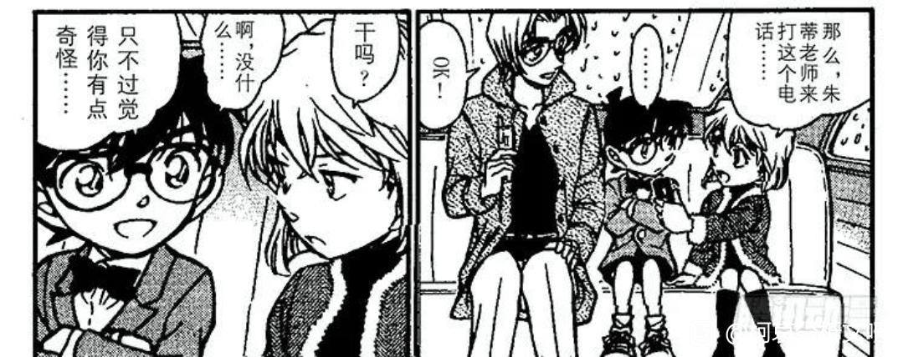
2024-04-21 02:41 | 梦哀:其实就像很多人说的剧情到了满月这边，就是漫画40-42卷，连着博士初恋，录音带，小哀生病，东京显像所有希子点破，最后满月柯哀经典和贝尔摩德对峙……真的是全剧的高潮部分，故事到这里柯哀已经是属于生死相随就差一步了，但是73后续再也没有这么精彩和暧昧的剧情出现2024-04-21 11:03 | 🌐之徙:回复 梦哀 :我对这个观点持保留意见，柯哀并未被雪藏，只是主线剧情稀释了感情线而已。2024-04-21 20:54 | NCC74656Voyage:回复 🌐之徙 :说雪藏可能不至于，但确实原地踏步了十多年没再推进一步2024-04-21 20:56 | NCC74656Voyage:朱蒂的打招呼没啥深意，最后那个嗯哼和那个手势可太有深意了2024-05-02 07:30 | 陈酿青梅酒:小柯这个黄豆冒汗的同款表情出现在，危命问小哀在什么要为了自己做那么多和红修问为什么提了四个要求。
这里路过吃瓜的朱迪都觉得灰原可能对你有意思
接下来我要讲一个暴论：
刺杀候选人三选一，我个人认为在场的几方势力，没有一个是希望土门康辉当选的，只是在是否要刺杀的态度上有所迟疑而已。
水无本篇的态度就值得怀疑，她本人是不希望出现无辜死者的，但是酒厂刺杀行动却一定要完成，而且在刺杀失败之后还留了后手，照样让土门无法竞选，那就只能说明一件事：
【在这一时刻，酒厂和CIA的利益是一致的】
一个强硬，正义的土门未必不符合酒厂利益（酒厂更多的是为了常盘荣策而刺杀土门），但一定不符合CIA的利益，于是水无对刺杀土门虽然反感，但并没有反对。
这样我们再来理解水无对柯南的测谎，就能知道更多的事情。柯南被突然袭击，其说谎的情况一定被水无察觉，但水无是感激柯南的，在恶作剧门铃时，柯南对恶作剧小朋友展示了相当高的善意，水无所感激的，正是柯南让水无不必在两种对抗土门的策略中选择更罪恶的一条。
再来看FBI的态度，朱蒂对土门比较同情，老詹就未必了，他和CIA的态度并无多少不同，土门在他眼里只是【把组织成员一个个钓出来】的棋子罢了，我个人对詹姆斯的态度是他不是黑方，但他一定存在养寇自重甚至和黑方交易的行为，其动机是非常值得怀疑的。“把不利于己方的因素铲除于萌芽”，这并不是酒厂的策略，酒厂从未莫名其妙对潜在的侦探下手，倒是詹姆斯善战者无赫赫之功，多次提前预判秀一的行动并给他带来干扰（海猿岛尤其明显），对养寇自重的詹姆斯而言，一切让黑方完全暴露的【不利因素】都被他【铲除于萌芽】了。
詹姆斯热衷于挖人去FBI，目前詹姆斯不清楚A药的秘密，虽然知道小哀是雪莉，但不知道雪莉是18岁的志保，如果不小心让詹姆斯知道了小哀的秘密，大结局时很可能造成各方争夺小哀的情况，柯南的表现将值得期待，带着小哀私奔也不是不可能。
刺杀候选人三选一，我个人认为在场的几方势力，没有一个是希望土门康辉当选的，只是在是否要刺杀的态度上有所迟疑而已。
水无本篇的态度就值得怀疑，她本人是不希望出现无辜死者的，但是酒厂刺杀行动却一定要完成，而且在刺杀失败之后还留了后手，照样让土门无法竞选，那就只能说明一件事：
【在这一时刻，酒厂和CIA的利益是一致的】
一个强硬，正义的土门未必不符合酒厂利益（酒厂更多的是为了常盘荣策而刺杀土门），但一定不符合CIA的利益，于是水无对刺杀土门虽然反感，但并没有反对。
这样我们再来理解水无对柯南的测谎，就能知道更多的事情。柯南被突然袭击，其说谎的情况一定被水无察觉，但水无是感激柯南的，在恶作剧门铃时，柯南对恶作剧小朋友展示了相当高的善意，水无所感激的，正是柯南让水无不必在两种对抗土门的策略中选择更罪恶的一条。
再来看FBI的态度，朱蒂对土门比较同情，老詹就未必了，他和CIA的态度并无多少不同，土门在他眼里只是【把组织成员一个个钓出来】的棋子罢了，我个人对詹姆斯的态度是他不是黑方，但他一定存在养寇自重甚至和黑方交易的行为，其动机是非常值得怀疑的。“把不利于己方的因素铲除于萌芽”，这并不是酒厂的策略，酒厂从未莫名其妙对潜在的侦探下手，倒是詹姆斯善战者无赫赫之功，多次提前预判秀一的行动并给他带来干扰（海猿岛尤其明显），对养寇自重的詹姆斯而言，一切让黑方完全暴露的【不利因素】都被他【铲除于萌芽】了。
詹姆斯热衷于挖人去FBI，目前詹姆斯不清楚A药的秘密，虽然知道小哀是雪莉，但不知道雪莉是18岁的志保，如果不小心让詹姆斯知道了小哀的秘密，大结局时很可能造成各方争夺小哀的情况，柯南的表现将值得期待，带着小哀私奔也不是不可能。
2024-04-21 13:25 | 成冰的雨点:其实没揭秘之前我曾经考虑过水无含泪弑fu的可能性，因为做这行的肯定必要时为了大局会心狠手辣（和海猿岛秀一同意水无必要时杀卡迈尔一样），不过后来发现这毕竟是个漫画，不会到那一步
再来看贝姐的表现，贝姐很可能是各方势力中最希望土门当选的人（具体还是要看土门的表现）
贝姐不伪装别人，专门伪装这位黑社会大姐（和土门有仇），其目的正是想看看土门会不会【对坏人依旧拯救】，也就是说，贝姐在这种情况下，居然没有忘记她的本心，再一次去“寻找天使”，贝姐对这一点应该是很悲观的，毕竟除了小兰，恐怕不再有哪个人能称为贝姐的“天使”了。
如果土门救下贝姐后，看见她的脸转而惊恐，贝姐将毫不犹豫地杀掉他，但如果土门表现出类似小兰的“天使”态度，贝姐很可能放他一马，所以开战前贝姐还要确认水无的卧底身份，方便自己灵活处理，不得不说贝姐在“找天使”这件事情上，确实有相当的执念。
而这种执念是否会有消散，“生锈”的一天？恐怕那一天已经到来了吧。
贝姐不伪装别人，专门伪装这位黑社会大姐（和土门有仇），其目的正是想看看土门会不会【对坏人依旧拯救】，也就是说，贝姐在这种情况下，居然没有忘记她的本心，再一次去“寻找天使”，贝姐对这一点应该是很悲观的，毕竟除了小兰，恐怕不再有哪个人能称为贝姐的“天使”了。
如果土门救下贝姐后，看见她的脸转而惊恐，贝姐将毫不犹豫地杀掉他，但如果土门表现出类似小兰的“天使”态度，贝姐很可能放他一马，所以开战前贝姐还要确认水无的卧底身份，方便自己灵活处理，不得不说贝姐在“找天使”这件事情上，确实有相当的执念。
而这种执念是否会有消散，“生锈”的一天？恐怕那一天已经到来了吧。
2024-04-21 03:17 | 发疯的法师:何出此言？之后可是和水无交换了 怎么就看出这个了2024-04-21 11:00 | 🌐之徙:回复 发疯的法师 :并没有交换，是柯南以为发信器一直在水无身上才搞错的2024-04-25 08:06 | 贴吧用户_J56e1ta:我之前听（看）过分析，说贝姐那句"天使没对我微笑"的天使指向艾莲娜
cy
cy
好帖bd
由于水无把鞋子丢进琴酒车里，琴酒开始怀疑小五郎，因此这一阶段博士和小哀需要把小五郎和小兰保护起来。
（其实这一段有点奇怪，水无既然准备托孤，就不太能用鞋子坑害小五郎，更合理的解释是水无从头到尾都没发现鞋子有窃听器，换衣服时就直接丢琴酒车上了）
而后小兰再次向我们展示了什么是【名誉吧主】，柯南非常可疑，下着大雨号称要去多罗碧加，又不和博士在一起，但【只要是小哀对柯南做出的判断，小兰就无条件相信】，小兰坚定地认为，相比自己这个经常不给柯南准备早餐的监护人，小哀对柯南的了解要更深，在这种情况下她更是彻底逃避了【柯南＝新一】这一思考量，而完全将柯南交托在小哀手中。
小兰眼中的柯哀也是双箭头的，这里小兰的脸红和前文朱蒂的脸红并无区别，都是“磕到了”的表情。
至于小哀的“幻视”，我实在看不出哪里小哀把小兰当姐姐了，此处小兰和明美只有一个共同点，那就是【被小哀的组织关系所连累】，如果小兰真的出门而被组织狙击，那小哀很可能会被愧疚吞没，在明美活着时，小哀察觉到不对劲却来不及行动，已经很痛苦了，而这里小哀也察觉到不对劲，所以她必须阻止小兰出门，而且是【不顾一切地】。
（顺便，满月篇小哀也没有认为小兰是“姐姐”，小哀在赴死时就会想到姐姐，这是公交车爆炸案就有的设定，与小兰没有很多关系）
等反应过来，小哀才发现了另一件事情：由于自己刚才有些失态的表现，小兰似乎对柯哀关系有了自己的理解？（当前小哀没功夫考虑这种事，等事件结束后小哀一定会思考，很可能能推理出“柯南在小兰面前表达了自己喜欢小哀”，出轨研究专家进度+1）
（其实这一段有点奇怪，水无既然准备托孤，就不太能用鞋子坑害小五郎，更合理的解释是水无从头到尾都没发现鞋子有窃听器，换衣服时就直接丢琴酒车上了）
而后小兰再次向我们展示了什么是【名誉吧主】，柯南非常可疑，下着大雨号称要去多罗碧加，又不和博士在一起，但【只要是小哀对柯南做出的判断，小兰就无条件相信】，小兰坚定地认为，相比自己这个经常不给柯南准备早餐的监护人，小哀对柯南的了解要更深，在这种情况下她更是彻底逃避了【柯南＝新一】这一思考量，而完全将柯南交托在小哀手中。
小兰眼中的柯哀也是双箭头的，这里小兰的脸红和前文朱蒂的脸红并无区别，都是“磕到了”的表情。
至于小哀的“幻视”，我实在看不出哪里小哀把小兰当姐姐了，此处小兰和明美只有一个共同点，那就是【被小哀的组织关系所连累】，如果小兰真的出门而被组织狙击，那小哀很可能会被愧疚吞没，在明美活着时，小哀察觉到不对劲却来不及行动，已经很痛苦了，而这里小哀也察觉到不对劲，所以她必须阻止小兰出门，而且是【不顾一切地】。
（顺便，满月篇小哀也没有认为小兰是“姐姐”，小哀在赴死时就会想到姐姐，这是公交车爆炸案就有的设定，与小兰没有很多关系）
等反应过来，小哀才发现了另一件事情：由于自己刚才有些失态的表现，小兰似乎对柯哀关系有了自己的理解？（当前小哀没功夫考虑这种事，等事件结束后小哀一定会思考，很可能能推理出“柯南在小兰面前表达了自己喜欢小哀”，出轨研究专家进度+1）
2024-04-21 07:02 | 0202℃:我认为这里看小兰幻视明美并不是因为二人相似，而是因为小兰和明美此时的境遇相似。这里小兰背后的明美和明美去世前与志保见面最后离开的画面很像。 明美与志保道别离开然后因为组织去世，此时的小兰在灰原看来也是如此。
一番交手之后，琴酒从【毛利家专属狙击位】撤退了。众所周知，琴酒对雪莉有某种执念，且强烈认为“有骑士在保护雪莉”，而观众都知道这个骑士就是柯南。恰好，本案所保护的土门康辉为♦️J，青山向读者普及了他对扑克牌的一些理解，♦️是钻石和宝藏，J不是王子而是骑士，扑克论对名柯有种深远的影响，有一部分属于索隐，但相当一部分还是有可信度的。
本案还有两个值得注意的点，首先作者借基安蒂之口，说出了“老是让别人等待的男人可是最讨厌的”，这似乎是对M7的所谓“小兰不讨厌等待的感觉”的一种清算（后续水族馆还有更显著的清算），其次，作者借柯南和詹姆斯之口，将【风车】和【徒劳无用】的概念联系在一起，这就为后文“柯南看小兰吹风车而脸红”蒙上了阴影，具体等到风车案时再做分析，这里先预留一个印象。
本案还有两个值得注意的点，首先作者借基安蒂之口，说出了“老是让别人等待的男人可是最讨厌的”，这似乎是对M7的所谓“小兰不讨厌等待的感觉”的一种清算（后续水族馆还有更显著的清算），其次，作者借柯南和詹姆斯之口，将【风车】和【徒劳无用】的概念联系在一起，这就为后文“柯南看小兰吹风车而脸红”蒙上了阴影，具体等到风车案时再做分析，这里先预留一个印象。
1小时了，怎么还不更？
o(≧口≦)o楼主加油，好厉害
cy
gkd
滴滴
cy
🤔
二、新出与本堂的交接：超机密的上学路
冲击篇之后，青山马上安排了新出的退场和瑛佑的登场，且【新出与小兰不同时登场，但是安排小光与新出同台】，这里青山的含义相当明确，上一阶段小兰的主要配平对象已经不可用了，并希望观众不再惦记着新出兰。
为了消除前一阶段新出兰的影响，作者不惜让园子推理时“走光”一次并安排新出脸红，接着在本话更是将小光从女仆提升为助手，而这一切都是为了过渡到佑兰，可谓煞费苦心，尽管后来青山声称“瑛佑配平失败了”，但如果仅从漫画看，青山的过渡策略其实相当成功。
（在这种情况下，OVA9还能将新出作为主要配平对象就很奇怪了，当然也有可能是因为OVA9时瑛佑还是主线人物，不能乱动）
本案的标题也非常奇怪，叫做【超机密的上学路】，但是本案其实是发生在放学路上的，唯一上学路的部分是柯哀在交流情报，但是这一块标题又不叫【上学路】，而是用了【新老师】这个标题，如果索隐一点，那就是【确实存在某个时刻，“新老师”在“上学路上”对柯哀造成了威胁】，如果我们将本堂登场前的一段时间视为【青山设计初遇论的时间】，那么似乎初遇时，酒厂的某人（很可能是琴酒）是以“老师”的假身份拐走小志保的。
在时间胶囊篇，小哀害怕的时刻也为上学路，此外杯子效应篇小哀同样是在路上幻视琴酒，这样看来初遇的细节似乎更丰富了，不是在幼儿园拐走，而应该是去幼儿园的路上。
此处的【机密】还有一点，小哀此前听说过“那个叫赤井的FBI满月救了大家”，这里又确定了“赤井善于狙击”，小哀对赤井＝诸星大是有一些心理准备的，后续小哀日常“对这个叫赤井的人感兴趣”，很可能有一堆问题想问他。
（然后被柯南无理拒绝了，防火防盗防表哥）
冲击篇之后，青山马上安排了新出的退场和瑛佑的登场，且【新出与小兰不同时登场，但是安排小光与新出同台】，这里青山的含义相当明确，上一阶段小兰的主要配平对象已经不可用了，并希望观众不再惦记着新出兰。
为了消除前一阶段新出兰的影响，作者不惜让园子推理时“走光”一次并安排新出脸红，接着在本话更是将小光从女仆提升为助手，而这一切都是为了过渡到佑兰，可谓煞费苦心，尽管后来青山声称“瑛佑配平失败了”，但如果仅从漫画看，青山的过渡策略其实相当成功。
（在这种情况下，OVA9还能将新出作为主要配平对象就很奇怪了，当然也有可能是因为OVA9时瑛佑还是主线人物，不能乱动）
本案的标题也非常奇怪，叫做【超机密的上学路】，但是本案其实是发生在放学路上的，唯一上学路的部分是柯哀在交流情报，但是这一块标题又不叫【上学路】，而是用了【新老师】这个标题，如果索隐一点，那就是【确实存在某个时刻，“新老师”在“上学路上”对柯哀造成了威胁】，如果我们将本堂登场前的一段时间视为【青山设计初遇论的时间】，那么似乎初遇时，酒厂的某人（很可能是琴酒）是以“老师”的假身份拐走小志保的。
在时间胶囊篇，小哀害怕的时刻也为上学路，此外杯子效应篇小哀同样是在路上幻视琴酒，这样看来初遇的细节似乎更丰富了，不是在幼儿园拐走，而应该是去幼儿园的路上。
此处的【机密】还有一点，小哀此前听说过“那个叫赤井的FBI满月救了大家”，这里又确定了“赤井善于狙击”，小哀对赤井＝诸星大是有一些心理准备的，后续小哀日常“对这个叫赤井的人感兴趣”，很可能有一堆问题想问他。
（然后被柯南无理拒绝了，防火防盗防表哥）
本案中，一位很像小哀的四年级女生失踪，柯哀二人立刻提高警惕，柯南直接又把帽子给小哀带上了。
（动画十分好评）
三小只里，只有元太意识到这里的不对劲，我一直认为元太在感情方面有自己的见解，而且观察力很高，在网中迷时就一眼看穿了柯南的想法，甚至在小哀转学的第一天，元太就疑似在为柯哀铺垫了（正如元太自己说的：我已经演了反派了，珍惜你“被表白”的假面超人身份吧！）
右下角的构图十分神奇，尽管一起走在路上，柯哀却自成一体，元太那个眼神简直在说“柯哀装都不装了”。
大家不要小看柯南这个递帽子的行为，冲击篇柯南【两次暴露在组织视野内】，第一次和朱蒂一起被贝姐看到，第二次踢小五郎对窗户时酒厂五人组都看见了，正常来讲需要保护的是柯南而非小哀（和足球场事件不同，足球场时只有小哀需要保护），我个人认为柯南今天戴帽子出来，初衷就是保护自己。
然而，一旦小哀有风险，哪怕这个风险其实很低，柯南就根本不考虑自己的暴露问题，选择把帽子给小哀，我都怀疑是不是柯南心中某种PTSD发作了，他似乎根本不能接受小哀有一丝一毫被拐走的风险。
（动画十分好评）
三小只里，只有元太意识到这里的不对劲，我一直认为元太在感情方面有自己的见解，而且观察力很高，在网中迷时就一眼看穿了柯南的想法，甚至在小哀转学的第一天，元太就疑似在为柯哀铺垫了（正如元太自己说的：我已经演了反派了，珍惜你“被表白”的假面超人身份吧！）
右下角的构图十分神奇，尽管一起走在路上，柯哀却自成一体，元太那个眼神简直在说“柯哀装都不装了”。
大家不要小看柯南这个递帽子的行为，冲击篇柯南【两次暴露在组织视野内】，第一次和朱蒂一起被贝姐看到，第二次踢小五郎对窗户时酒厂五人组都看见了，正常来讲需要保护的是柯南而非小哀（和足球场事件不同，足球场时只有小哀需要保护），我个人认为柯南今天戴帽子出来，初衷就是保护自己。
然而，一旦小哀有风险，哪怕这个风险其实很低，柯南就根本不考虑自己的暴露问题，选择把帽子给小哀，我都怀疑是不是柯南心中某种PTSD发作了，他似乎根本不能接受小哀有一丝一毫被拐走的风险。
在信息收集完全前，柯南简直草木皆兵，听到光彦说有点像，直接开急（想想都知道不可能，要是声音像的话光彦早就说出来了），旁边小哀都不如他急。
等到这个可疑的老师出现，柯南更是精神高度紧张，眼神凶狠到了一定程度，他甚至很有可能已经帮小哀转了一下身，我都怀疑这个老师再靠近一点，柯南就会像时间胶囊那样大吼大叫了。
柯南这个反应肯定是不怎么过脑子的，四年级女生已经失踪，而这位老师疑似酒厂成员，既然他已经绑架，为何还要一个人跑到女生家里来，逻辑根本就不通，总之柯南十分上头，我觉得小哀应该看出柯南的上头了，她并不觉得此老师和酒厂有关，而是用某种复杂的眼神看着柯南。
（这里的复杂眼神可以自行体会，我个人认为小哀在此场景感受到柯南对自己的某些越界保护，但是她却不能有所回应，因而心情复杂）
等到这个可疑的老师出现，柯南更是精神高度紧张，眼神凶狠到了一定程度，他甚至很有可能已经帮小哀转了一下身，我都怀疑这个老师再靠近一点，柯南就会像时间胶囊那样大吼大叫了。
柯南这个反应肯定是不怎么过脑子的，四年级女生已经失踪，而这位老师疑似酒厂成员，既然他已经绑架，为何还要一个人跑到女生家里来，逻辑根本就不通，总之柯南十分上头，我觉得小哀应该看出柯南的上头了，她并不觉得此老师和酒厂有关，而是用某种复杂的眼神看着柯南。
（这里的复杂眼神可以自行体会，我个人认为小哀在此场景感受到柯南对自己的某些越界保护，但是她却不能有所回应，因而心情复杂）
2024-04-30 03:48 | 上総守信長ºº:逻辑倒也没有不通，黑组抓完人发现抓错了，或者问不出东西不死心派个人到家里找找有没别的线索，也不是不可能
当然，柯南很快就确定了老师的身份，戒备随之解除，而且柯哀十分默契，他向老师交底，其实就是在对小哀传达【安全】信息，小哀虽然一时没有理解，但还是马上相信了柯南的判断。
小兰的“啊？”一般就真的只是啊一下，小哀则不同，知其然还要知其所以然，小哀对这一问题还是蛮坚持的，于是她立刻整理了柯南态度变化前后所接受的信息：老师的表情和语言，试着自己观察自己推理，做出相同的判断。
（通常来讲，小哀虽然相信柯南的判断，但她如果不能自己推导出一样的判断就不太开心，总要完全弄清楚才行，有时小哀也会翻车，例如【和歌纸牌千钧一发】，但总体而言这种特质是正面的，可以被定义为“好奇"或“探索欲”，也可以认为这是科学家的素养）
（论相信新一，恐怕小兰会比小哀更相信，她几乎把新一神话了，但她似乎从未用这种方式去理解新一的观点，这样的“相信”，真的可以称为相信吗？）
小兰的“啊？”一般就真的只是啊一下，小哀则不同，知其然还要知其所以然，小哀对这一问题还是蛮坚持的，于是她立刻整理了柯南态度变化前后所接受的信息：老师的表情和语言，试着自己观察自己推理，做出相同的判断。
（通常来讲，小哀虽然相信柯南的判断，但她如果不能自己推导出一样的判断就不太开心，总要完全弄清楚才行，有时小哀也会翻车，例如【和歌纸牌千钧一发】，但总体而言这种特质是正面的，可以被定义为“好奇"或“探索欲”，也可以认为这是科学家的素养）
（论相信新一，恐怕小兰会比小哀更相信，她几乎把新一神话了，但她似乎从未用这种方式去理解新一的观点，这样的“相信”，真的可以称为相信吗？）
小哀做出了判断：这老师眯眯眼十分凶狠，看着就不像好人。
柯南：（笑）是啊，可能……
警报解除后，柯南立刻进入了日常模式，两句话就能说清楚的事情，非要卖关子不说，鉴定为柯南想报【神社鸟居惊人暗号】被小哀戏耍之仇，这次知道了小哀不知道的事情真是开心啊。
还有更让他开心的，柯南成功想到小哀“喜欢小动物”的特征，找到一窝小猫，又是一直卖关子最后才公布，看这家伙笑得多得意。
我总觉得手机篇之后柯南【追求】小哀越来越明目张胆了，小哀则因为各种其他原因，越来越不能对柯南的箭头做回复。柯南对兰和哀有一个显著的不同，就是他会为了小哀主动创造出一个有趣的场景，前有爬山改钓鱼，后有各式各样的开屏行为，连推理破案也要在小哀面前享受那种“只保留结论”的神秘感（这似乎是柯南4岁以来的梦想），但是柯南对小兰很少有主动创造，唯一的主动是豪华饭店（还是抄袭父母的），剩下的多是小兰的逼迫。
我认为这种【主动性】与箭头是强相关的，小哀喜欢小动物，柯南就经常带着小哀玩猫猫狗狗；柯南喜欢足球，于是小哀也开始看球。而值得注意的是，瑛佑一直希望加入小五郎/园子的行程，小兰对瑛佑就十分接纳（有时是主动邀请），这是否也可以认为小兰对瑛佑存在主动性呢？
柯南：（笑）是啊，可能……
警报解除后，柯南立刻进入了日常模式，两句话就能说清楚的事情，非要卖关子不说，鉴定为柯南想报【神社鸟居惊人暗号】被小哀戏耍之仇，这次知道了小哀不知道的事情真是开心啊。
还有更让他开心的，柯南成功想到小哀“喜欢小动物”的特征，找到一窝小猫，又是一直卖关子最后才公布，看这家伙笑得多得意。
我总觉得手机篇之后柯南【追求】小哀越来越明目张胆了，小哀则因为各种其他原因，越来越不能对柯南的箭头做回复。柯南对兰和哀有一个显著的不同，就是他会为了小哀主动创造出一个有趣的场景，前有爬山改钓鱼，后有各式各样的开屏行为，连推理破案也要在小哀面前享受那种“只保留结论”的神秘感（这似乎是柯南4岁以来的梦想），但是柯南对小兰很少有主动创造，唯一的主动是豪华饭店（还是抄袭父母的），剩下的多是小兰的逼迫。
我认为这种【主动性】与箭头是强相关的，小哀喜欢小动物，柯南就经常带着小哀玩猫猫狗狗；柯南喜欢足球，于是小哀也开始看球。而值得注意的是，瑛佑一直希望加入小五郎/园子的行程，小兰对瑛佑就十分接纳（有时是主动邀请），这是否也可以认为小兰对瑛佑存在主动性呢？
案件结束，柯南更加放肆了，直接拿走小哀头上的帽子，反手戴在自己头上，这个动作但凡删掉其中一个，都不会如此暧昧，以前戴帽子戴眼镜，还能理解为小哀受到威胁了，柯南用这些行动给予小哀心理上的保护，现在明明是【危险解除】的状态，但我看柯南并不介意继续和小哀亲近一下嘛。
这帽子也双向奔赴了，眼镜也交换了，衣柜也共享了，麻醉针也用过了，与其说“缩小的身体削减了身体的暧昧感”，不如说柯南就是仗着自己和小哀都是小孩子而无限贴近对方，真是诡计多端。
接下来柯南还向小兰分享了本日遭遇，这里又发生了微妙变化，在之前，柯南【一直不和小兰说学校里的事情】，而现在柯南却主动向小兰分享，似乎是因为手机篇柯南直接在小兰面前对小哀表白，所以肆无忌惮了。
柯南大概还可以欺骗自己，【这是为了更好地不让小兰怀疑自己是新一】，然而事实上柯南一手促进了小兰转向柯哀党（作为对比，在小哀面前，柯南几乎不对小兰有夸赞之词，更多的是“这不是小兰干的”或者“坚强是空手道吗？”），此时柯南的行动已经完全偏向小哀了。
这帽子也双向奔赴了，眼镜也交换了，衣柜也共享了，麻醉针也用过了，与其说“缩小的身体削减了身体的暧昧感”，不如说柯南就是仗着自己和小哀都是小孩子而无限贴近对方，真是诡计多端。
接下来柯南还向小兰分享了本日遭遇，这里又发生了微妙变化，在之前，柯南【一直不和小兰说学校里的事情】，而现在柯南却主动向小兰分享，似乎是因为手机篇柯南直接在小兰面前对小哀表白，所以肆无忌惮了。
柯南大概还可以欺骗自己，【这是为了更好地不让小兰怀疑自己是新一】，然而事实上柯南一手促进了小兰转向柯哀党（作为对比，在小哀面前，柯南几乎不对小兰有夸赞之词，更多的是“这不是小兰干的”或者“坚强是空手道吗？”），此时柯南的行动已经完全偏向小哀了。
我一开始觉得有点奇怪，为何要在本节后面安排柯南睡着从而没听到小兰介绍瑛佑（柯南明天就知道了，不差这一个晚上），但后来我搞清楚了，这是和空中密室对照了一下。
空中密室：【柯南不对小兰说学校发生的事】-【小兰怀疑柯南是新一】-【坐飞机时柯南睡着，小兰摘下他的眼镜】
本案：【柯南对小兰说学校发生的事】-【小兰不敢怀疑柯南是新一】-【小兰没有摘下眼镜，取而代之向父亲介绍了本堂瑛佑】
经历危命-满月-手机三个篇章，柯兰关系被极大改变了，这一对照可以说是里程碑式的，从此不再是柯南瞒着小兰，而是小兰自己瞒着自己了。
下一案的标题：【回不去的两人】
空中密室：【柯南不对小兰说学校发生的事】-【小兰怀疑柯南是新一】-【坐飞机时柯南睡着，小兰摘下他的眼镜】
本案：【柯南对小兰说学校发生的事】-【小兰不敢怀疑柯南是新一】-【小兰没有摘下眼镜，取而代之向父亲介绍了本堂瑛佑】
经历危命-满月-手机三个篇章，柯兰关系被极大改变了，这一对照可以说是里程碑式的，从此不再是柯南瞒着小兰，而是小兰自己瞒着自己了。
下一案的标题：【回不去的两人】
2024-04-22 12:02 | 即将02的废物月:这个想法有趣2024-04-22 13:22 | 成冰的雨点:当时我就想到但凡来一个转学生，天使lan就试图把人拉进自己的小圈子，反而之前朝夕相处了那么久的同学，除了园子外，没见她和谁那么亲密过2024-04-30 03:56 | 上総守信長ºº:哇，精彩
三、瑛佑登场：再也回不去的新兰
在名柯里有重要的规律，即一个角色的初登场，有大概率预示该角色的身份，例如贝姐假扮的新出出登场于危命舞台剧，暗示贝姐的演员身份；朱蒂登场于玩枪/赛车的游戏厅，暗示其FBI身份；世良登场时则出现大量的英国元素；水无登场时安慰了一个小弟弟；最为津津乐道的詹姆斯登场时更是十分可疑；（只有秀一最朴素，普通乘客而已）
那么，瑛佑登场时的主要特征是什么呢？是一次又一次的“撞击”柯南，是小兰明显的偏爱和照顾，是一次标标准准的情杀案，是新兰【再也回不去的两人】。
和大部分角色不同，瑛佑想象力丰富而严谨不足，出场时即怀疑柯南是新一（只是缺少实锤而已），在这种情况下瑛佑是并不能主动追求小兰的，瑛佑对小兰的好感，几乎完全来自小兰的温柔对待。
瑛佑应该不知道，小兰温柔对待的只有他一个人。
在名柯里有重要的规律，即一个角色的初登场，有大概率预示该角色的身份，例如贝姐假扮的新出出登场于危命舞台剧，暗示贝姐的演员身份；朱蒂登场于玩枪/赛车的游戏厅，暗示其FBI身份；世良登场时则出现大量的英国元素；水无登场时安慰了一个小弟弟；最为津津乐道的詹姆斯登场时更是十分可疑；（只有秀一最朴素，普通乘客而已）
那么，瑛佑登场时的主要特征是什么呢？是一次又一次的“撞击”柯南，是小兰明显的偏爱和照顾，是一次标标准准的情杀案，是新兰【再也回不去的两人】。
和大部分角色不同，瑛佑想象力丰富而严谨不足，出场时即怀疑柯南是新一（只是缺少实锤而已），在这种情况下瑛佑是并不能主动追求小兰的，瑛佑对小兰的好感，几乎完全来自小兰的温柔对待。
瑛佑应该不知道，小兰温柔对待的只有他一个人。
2024-04-30 04:02 | 上総守信長ºº:普通乘客=一条船上的伙伴
我们先看瑛佑登场前小兰的态度：
【每次提及瑛佑，小兰都有点脸红】
（这里柯南并未吃醋，属于作者借园子之口预示剧情走向）
小兰能说出“他的目标应该不是我”，说明一开始瑛佑对小兰的态度并不特别，可能是由于瑛佑走哪撞哪的属性，小兰对他产生了某种照顾欲，她会亲切地称呼瑛佑为“那个孩子”，会积极地向父亲介绍瑛佑，这些恐怕都不是新一能够获得的待遇。
如果说以上剧情还可以认为“只是小兰对新一不好，她对其他人都比较温柔”，那么下面的剧情更是充满对比性。
瑛佑开始怀疑沉睡的小五郎，对此小兰极为耐心的解答，这里不得不提及服部平次这个重要的对照组，同样是刚刚认识不久，当时小兰是直接开骂服部“真没礼貌”，就没礼貌程度而言，我感觉瑛佑的讽刺比服部的直言更没礼貌一点，但是小兰对瑛佑有相当的偏向性，这种“偏爱”让小兰对瑛佑拥有了包容/体贴。
瑛佑所看到的小兰，与柯南/服部看到的大不相同，小兰各式各样的缺点并不存在，反而更类似TV版的“温柔大姐姐”形象，这似乎是他的独特待遇。
【每次提及瑛佑，小兰都有点脸红】
（这里柯南并未吃醋，属于作者借园子之口预示剧情走向）
小兰能说出“他的目标应该不是我”，说明一开始瑛佑对小兰的态度并不特别，可能是由于瑛佑走哪撞哪的属性，小兰对他产生了某种照顾欲，她会亲切地称呼瑛佑为“那个孩子”，会积极地向父亲介绍瑛佑，这些恐怕都不是新一能够获得的待遇。
如果说以上剧情还可以认为“只是小兰对新一不好，她对其他人都比较温柔”，那么下面的剧情更是充满对比性。
瑛佑开始怀疑沉睡的小五郎，对此小兰极为耐心的解答，这里不得不提及服部平次这个重要的对照组，同样是刚刚认识不久，当时小兰是直接开骂服部“真没礼貌”，就没礼貌程度而言，我感觉瑛佑的讽刺比服部的直言更没礼貌一点，但是小兰对瑛佑有相当的偏向性，这种“偏爱”让小兰对瑛佑拥有了包容/体贴。
瑛佑所看到的小兰，与柯南/服部看到的大不相同，小兰各式各样的缺点并不存在，反而更类似TV版的“温柔大姐姐”形象，这似乎是他的独特待遇。
2024-04-23 14:31 | 即将02的废物月:是同样的双头分镜呢，确实对比了
接手委托后，众人开始推理委托地点，柯南这里是有点想藏身份的，没有直接说自己的推理，而是用了【双陆棋】这个比喻。
为什么是双陆棋，而不是别的什么比喻呢？恐怕就是为了引出小兰的这句话：【柯南双陆棋下得很好】
这里的隐喻相当明显，作者将【双陆棋】和【再也回不去了】进行联系，柯南是一个不断前进的人，他遵循着小哀“不违逆时光的洪流”的原则，而他擅长双陆棋，相当于柯南【再也回不去了】。
这一点由瑛佑点破，是否有一天，回到日本的瑛佑会像本案的柯南一样，对着【回不去的人】呼喊：“你们之间已经很少有爱的成分了”呢？
为什么是双陆棋，而不是别的什么比喻呢？恐怕就是为了引出小兰的这句话：【柯南双陆棋下得很好】
这里的隐喻相当明显，作者将【双陆棋】和【再也回不去了】进行联系，柯南是一个不断前进的人，他遵循着小哀“不违逆时光的洪流”的原则，而他擅长双陆棋，相当于柯南【再也回不去了】。
这一点由瑛佑点破，是否有一天，回到日本的瑛佑会像本案的柯南一样，对着【回不去的人】呼喊：“你们之间已经很少有爱的成分了”呢？
随即众人前往群马，瑛佑直接感冒，这里看似柯兰糖，其实是佑兰糖。
一提到感冒这件事，我不禁想起此前小兰的种种战绩：
【外交官杀人案】新一感冒被小兰大呼小叫，直接挂电话，新一出现后小兰也对新一的身体状况毫不关心，而是甩出素质三连问；柯南身份也没好到哪里去，在案发现场柯南已经非常难受了，小兰却选择把柯南丢房间里，自己去吃服部代餐了。
【魔术爱好者案】柯南感冒，小兰直接把柯南丢给父亲照顾，自己和园子去参加聚会了。
【危命复活】柯南/新一感冒，小兰不管这些，给他上强度，准备和新出接吻，让感冒的柯南在旁边看着，逼着他表露身份。
【辣味咖喱】柯南落水感冒，小兰毫不关心，还是小五郎找到一间屋子准备给柯南换衣服时（结果小兰因为怕鬼不敢去……）
对比就能发现小兰对瑛佑的态度是独特的，瑛佑感冒了也待在他身边（抱住柯南只是借口，真实的原因是小兰不希望父亲的话伤到瑛佑）
（感冒怕不怕传染，是衡量CP的可靠标志，小兰经常抛下感冒的柯南，让他睡在小五郎卧室，却不介意被瑛佑传染；作为对比，柯哀之间互相传染的次数实在太多）
一提到感冒这件事，我不禁想起此前小兰的种种战绩：
【外交官杀人案】新一感冒被小兰大呼小叫，直接挂电话，新一出现后小兰也对新一的身体状况毫不关心，而是甩出素质三连问；柯南身份也没好到哪里去，在案发现场柯南已经非常难受了，小兰却选择把柯南丢房间里，自己去吃服部代餐了。
【魔术爱好者案】柯南感冒，小兰直接把柯南丢给父亲照顾，自己和园子去参加聚会了。
【危命复活】柯南/新一感冒，小兰不管这些，给他上强度，准备和新出接吻，让感冒的柯南在旁边看着，逼着他表露身份。
【辣味咖喱】柯南落水感冒，小兰毫不关心，还是小五郎找到一间屋子准备给柯南换衣服时（结果小兰因为怕鬼不敢去……）
对比就能发现小兰对瑛佑的态度是独特的，瑛佑感冒了也待在他身边（抱住柯南只是借口，真实的原因是小兰不希望父亲的话伤到瑛佑）
（感冒怕不怕传染，是衡量CP的可靠标志，小兰经常抛下感冒的柯南，让他睡在小五郎卧室，却不介意被瑛佑传染；作为对比，柯哀之间互相传染的次数实在太多）
除了感冒的对比，还有受伤的对比。
瑛佑这里摔了一跤，小兰马上掏出创可贴，让瑛佑把手指伸出来，准备自己帮他贴。
这里不得不继续回顾一下小兰的光辉历史，暗夜男爵柯南落水浑身湿透，小兰的反应是【你怎么这么笨啊】，龙舌兰案柯南被爆炸波及，小兰的选择是用手帕擦去柯南的血迹，更有月光案小兰专门捏着柯南受伤的手臂等等行为，直到冲野洋子阁楼密室，柯南被捏痛了无数次。
所以这里柯南的嫉妒真的合情合理，瑛佑面前的小兰和柯南眼中的小兰几乎不是同一个人，如果只是瑛佑单恋，柯南恐怕并不会有如此大的反应，然而小兰的种种表现实在很难不进行怀疑。
甚至可以有这样一个模型：瑛佑爱而克制，小兰爱而不自知。
瑛佑这里摔了一跤，小兰马上掏出创可贴，让瑛佑把手指伸出来，准备自己帮他贴。
这里不得不继续回顾一下小兰的光辉历史，暗夜男爵柯南落水浑身湿透，小兰的反应是【你怎么这么笨啊】，龙舌兰案柯南被爆炸波及，小兰的选择是用手帕擦去柯南的血迹，更有月光案小兰专门捏着柯南受伤的手臂等等行为，直到冲野洋子阁楼密室，柯南被捏痛了无数次。
所以这里柯南的嫉妒真的合情合理，瑛佑面前的小兰和柯南眼中的小兰几乎不是同一个人，如果只是瑛佑单恋，柯南恐怕并不会有如此大的反应，然而小兰的种种表现实在很难不进行怀疑。
甚至可以有这样一个模型：瑛佑爱而克制，小兰爱而不自知。
马克一下，这个篇章确实比较少分析，楼主提到兰在祐面前温柔主动的点很有趣，期待后续！
本案第三话标题为【虚假的爱情】，我们来看本案具体的杀人动机：
男方【工作太忙，没时间陪着女方】
女方【发出男方“变了”的质问】
然而，真正变心的是女方，在男方努力工作时，女方早已找好下家，双方早已不存在任何爱情，女方甚至写好了分手信。
然而直到最后一刻，男方仍然“自认为”自己爱女方，将自己的行为不断地合理化。
以上这个模型，除了【女方分手信】之外，大体就是新兰关系的plus版本，男方工作忙女方吃代餐，【虚假的爱情】说的难道仅仅是本案的这对男女吗？恐怕说的是新兰吧。
青山还不至于残忍到直接对应，但是棒球棍的确能和琴酒的每年一棍对应上，一些不方便新兰做的事情恐怕都会交给酒厂做，琴酒挥棍并不是琴酒多强，而是新兰吵架引发的反应，同样，未来极有可能出现的小兰泄密也并不是因为朗姆多强，而是因为小兰对新一毫无责任感，这种程度的伤害，与日常案件的情杀已经别无不同。
男方【工作太忙，没时间陪着女方】
女方【发出男方“变了”的质问】
然而，真正变心的是女方，在男方努力工作时，女方早已找好下家，双方早已不存在任何爱情，女方甚至写好了分手信。
然而直到最后一刻，男方仍然“自认为”自己爱女方，将自己的行为不断地合理化。
以上这个模型，除了【女方分手信】之外，大体就是新兰关系的plus版本，男方工作忙女方吃代餐，【虚假的爱情】说的难道仅仅是本案的这对男女吗？恐怕说的是新兰吧。
青山还不至于残忍到直接对应，但是棒球棍的确能和琴酒的每年一棍对应上，一些不方便新兰做的事情恐怕都会交给酒厂做，琴酒挥棍并不是琴酒多强，而是新兰吵架引发的反应，同样，未来极有可能出现的小兰泄密也并不是因为朗姆多强，而是因为小兰对新一毫无责任感，这种程度的伤害，与日常案件的情杀已经别无不同。
2024-04-24 07:46 | 柑橘香水💞:这里的男方也不爱女方了，就像柯南说的，真的爱不会直接砸面前的窗户。所以……如果映射的话……
甚至【分手信】的下位替代也被小兰准备好了。
（这里就不吐槽小兰的大嘴巴属性了，习惯就好）
小兰号称瑛佑做了提醒，这就属于乱说了，整个案件柯南提醒两处（西洋棋+睡相不好，全都是实打实的推理），瑛佑只有一处而且显然是无意的（瑛佑根本没侦查过车内，之后听沉睡小五郎推理也是恍然大悟的表情），小兰可不管这些，就是喜欢夸瑛佑。
【你的角色被人抢了】，这可是个严重的判断，小兰有朝一日会不会也认清自己喜欢的人呢？如此简单直白的伏笔，也许真的有回收的一天吧。
（瑛佑本就怀疑柯南，这里的剧情完全是为了小兰感情线服务的，是100%的配平行为）
（很多人说瑛佑很强，会加入CIA，小兰配不上云云，但如果仔细看漫画的话，就会发现瑛佑情况与朱蒂类似，不明身份增加了神秘感，其实没有那么厉害。而且我认为瑛佑不一定能加入CIA，他只是一个比较聪明的普通高中生，调查能力尚可但推理与执行均不太行，加之对CIA认知有限，对他而言更合适的道路是正常上大学找工作而非冒险）
（这里就不吐槽小兰的大嘴巴属性了，习惯就好）
小兰号称瑛佑做了提醒，这就属于乱说了，整个案件柯南提醒两处（西洋棋+睡相不好，全都是实打实的推理），瑛佑只有一处而且显然是无意的（瑛佑根本没侦查过车内，之后听沉睡小五郎推理也是恍然大悟的表情），小兰可不管这些，就是喜欢夸瑛佑。
【你的角色被人抢了】，这可是个严重的判断，小兰有朝一日会不会也认清自己喜欢的人呢？如此简单直白的伏笔，也许真的有回收的一天吧。
（瑛佑本就怀疑柯南，这里的剧情完全是为了小兰感情线服务的，是100%的配平行为）
（很多人说瑛佑很强，会加入CIA，小兰配不上云云，但如果仔细看漫画的话，就会发现瑛佑情况与朱蒂类似，不明身份增加了神秘感，其实没有那么厉害。而且我认为瑛佑不一定能加入CIA，他只是一个比较聪明的普通高中生，调查能力尚可但推理与执行均不太行，加之对CIA认知有限，对他而言更合适的道路是正常上大学找工作而非冒险）
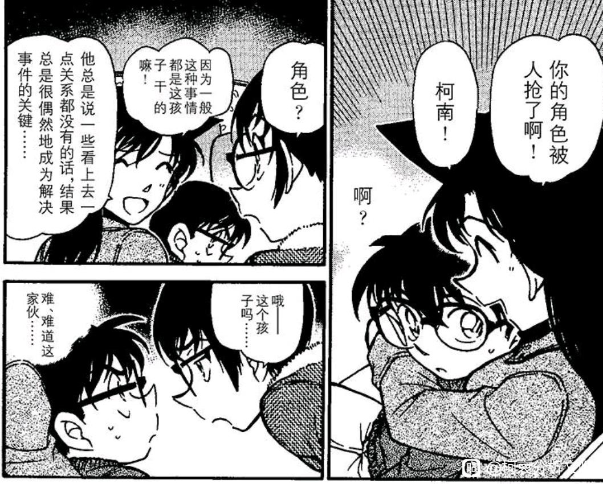
2024-04-23 13:06 | 成冰的雨点:名义上看着本堂瑛佑似乎带了高大上特质，但实际别说像作者分析的那样他未必能加入CIA了，就算真的加入，就冲他指责柯南那个偏听偏信的劲儿，这也是个非常与天使lan相配的恋爱脑。就算说他的视角里的观点未必为实吧，可是他也根本没考虑过客观情况啊，说句偏听偏信总没跑，依旧和天使lan一样一样的
加油，楼主！！！催更
番外：跨越十七年的callback-高佐联谊会
本案可能是迄今为止最无聊的一案，之前的大部分案件要么剧情精彩，要么人物塑造不错，即使是松本小百合那种狗血剧，也藏了“小百合一眼认出柯南像新一”这个剧情。
而本案虽然是高佐主场，但是却没有绑定少侦，而是绑定了小兰，整部剧情极为拖沓，高佐大半时间都在吵架，最后案件结束，高佐的关系也并未发生任何变化，我十分怀疑是不是青山本人和南姐有过什么联谊会的不愉快经历，这段高佐既压抑又憋屈，还特别真实。
我一直认为，每个日常案件都有其独特的价值，本案虽然无聊，但也一定有价值，整整17年，本案居然成为了一个伏笔，那就是小兰对于联谊会的态度，回旋镖扎自己身上了。
这里小兰对着高木质问“联谊会？佐藤警官知道吗？”，后来更是对高木使用了瞪眼，至少说明：
①小兰知道联谊会的分量（也即吧友们常说的看对眼即交往）
②小兰知道有npy去联谊会是很不好的。
十七年后，回旋镖来了，高佐只是被千叶/由美拉去凑人数/蹭吃蹭喝的，小兰却是正经地在考虑白马的邀请，作者怕观众看不出来对应，专门画了高木在旁边思考本案，【就是让读者回去看，当年小兰有多正义，现在就有多双标】
在联谊会，高佐互相吃醋，行为变形，甚至带入到案件中导致佐藤办案时态度过于偏执而高木向佐藤刻意隐瞒了一些信息，联谊会的杀伤力真的很大，天空树里柯南出了一个【愤怒】的表情，但也仅仅是愤怒而已，柯南对小兰的占有欲非常低，他让基德讲了两句土味情话就把这件事抛之脑后，甚至都不必确认基德的脸颊方向。
我们不妨设想如果真的有新兰联谊会，会发生什么？小兰吃代餐几乎是必然的，而新一的占有欲恐怕极为有限，高木给路人女倒酒心不在焉全洒出来了，佐藤和路人男互动差点勒死对方，但是小兰的战术代餐显然不会变形甚至更加熟练（新出案/红修篇都是在小兰身边有新一的情况进行代餐），新一恐怕也只会投入杀人案，案件结束后才去形式上质问一下小兰。
只能说高佐还是找正牌少侦红娘吧，小兰主场真是不太行，上次是白佐相亲，这次是不愉快的高佐联谊。下一次小兰主场的高佐案为【虚假的婚礼】，似乎是配合青山本人结婚而创作的，就剧情而言完全可以设置成高佐与委托人长得像，但由于婚礼上一定有小兰，青山果断设置委托人长得像由美，故意不给高佐发糖，将小兰排除于红娘之外。
怪不得服部表白总是不成功。
本案可能是迄今为止最无聊的一案，之前的大部分案件要么剧情精彩，要么人物塑造不错，即使是松本小百合那种狗血剧，也藏了“小百合一眼认出柯南像新一”这个剧情。
而本案虽然是高佐主场，但是却没有绑定少侦，而是绑定了小兰，整部剧情极为拖沓，高佐大半时间都在吵架，最后案件结束，高佐的关系也并未发生任何变化，我十分怀疑是不是青山本人和南姐有过什么联谊会的不愉快经历，这段高佐既压抑又憋屈，还特别真实。
我一直认为，每个日常案件都有其独特的价值，本案虽然无聊，但也一定有价值，整整17年，本案居然成为了一个伏笔，那就是小兰对于联谊会的态度，回旋镖扎自己身上了。
这里小兰对着高木质问“联谊会？佐藤警官知道吗？”，后来更是对高木使用了瞪眼，至少说明：
①小兰知道联谊会的分量（也即吧友们常说的看对眼即交往）
②小兰知道有npy去联谊会是很不好的。
十七年后，回旋镖来了，高佐只是被千叶/由美拉去凑人数/蹭吃蹭喝的，小兰却是正经地在考虑白马的邀请，作者怕观众看不出来对应，专门画了高木在旁边思考本案，【就是让读者回去看，当年小兰有多正义，现在就有多双标】
在联谊会，高佐互相吃醋，行为变形，甚至带入到案件中导致佐藤办案时态度过于偏执而高木向佐藤刻意隐瞒了一些信息，联谊会的杀伤力真的很大，天空树里柯南出了一个【愤怒】的表情，但也仅仅是愤怒而已，柯南对小兰的占有欲非常低，他让基德讲了两句土味情话就把这件事抛之脑后，甚至都不必确认基德的脸颊方向。
我们不妨设想如果真的有新兰联谊会，会发生什么？小兰吃代餐几乎是必然的，而新一的占有欲恐怕极为有限，高木给路人女倒酒心不在焉全洒出来了，佐藤和路人男互动差点勒死对方，但是小兰的战术代餐显然不会变形甚至更加熟练（新出案/红修篇都是在小兰身边有新一的情况进行代餐），新一恐怕也只会投入杀人案，案件结束后才去形式上质问一下小兰。
只能说高佐还是找正牌少侦红娘吧，小兰主场真是不太行，上次是白佐相亲，这次是不愉快的高佐联谊。下一次小兰主场的高佐案为【虚假的婚礼】，似乎是配合青山本人结婚而创作的，就剧情而言完全可以设置成高佐与委托人长得像，但由于婚礼上一定有小兰，青山果断设置委托人长得像由美，故意不给高佐发糖，将小兰排除于红娘之外。
怪不得服部表白总是不成功。
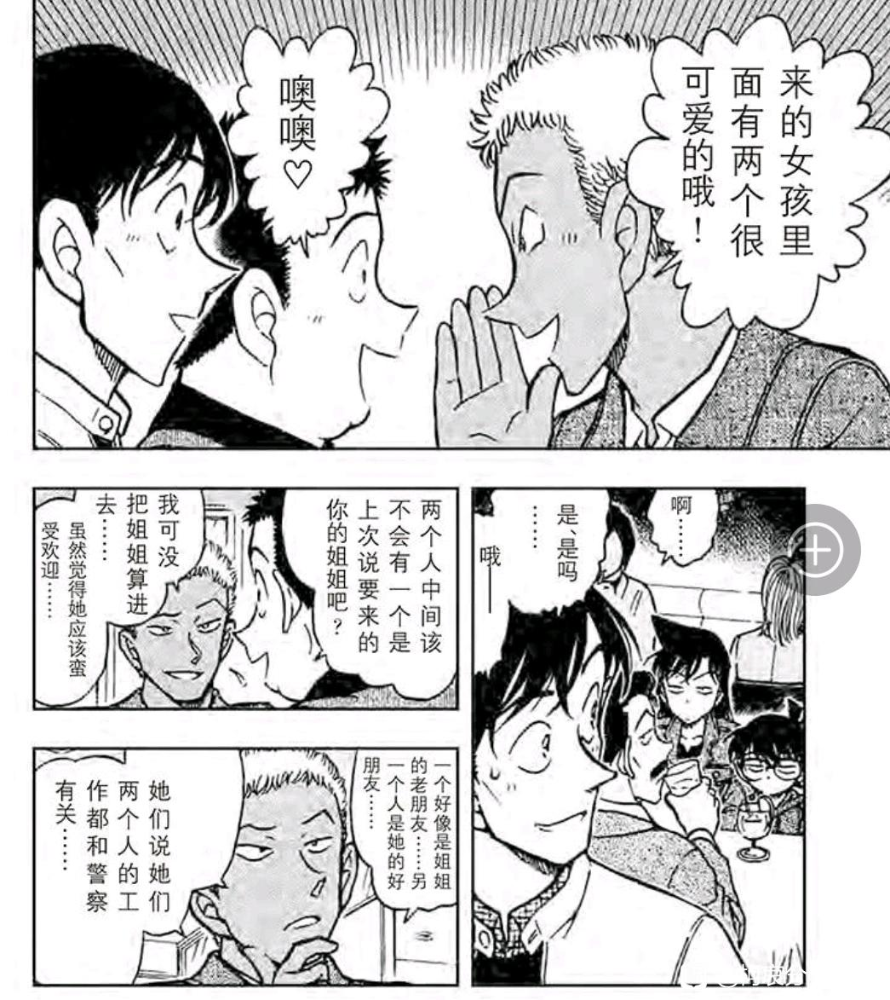
四、配平浪潮：侦探团特别专访
本案拥有“啊咧咧”名场面（动画的表现更有趣一些），除了卖萌的柯哀，这几个篇章还有一个重要特点，我称之为【配平浪潮】
大部分观众都知道，在小哀登场前，除了父辈和新兰之外，一对主要CP都没有，小哀登场后则迅速推进了高佐/平和/真园，这第一波“恋爱浪潮”可以说完全是为了适配同期柯哀的相识，而第二波“配平浪潮”恰好发生在瑛佑登场前后这段时间：
【由美首次提到自己有个前男友，秀吉的人设首次被透露】
【小林老师的相貌被修正为与佐藤相似，为白鸟归林铺路】
【小光由女仆提升至新出医学上的助手】
（唯一不太明确的是千叶，但千叶也在联谊会上醉倒，至少作者预留了苗子的可能性）
第一波浪潮是为了柯哀，那这一波是为了谁？显然就是为了瑛佑嘛，当然，青山是谨慎的，他似乎相当担心小兰粉丝的愤怒，于是和佑兰一样，这几对CP都相当小心谨慎，仅仅是透露而不是推进，所有推进都安排到死罗神之后（当时小兰形象已经更差了）
本案拥有“啊咧咧”名场面（动画的表现更有趣一些），除了卖萌的柯哀，这几个篇章还有一个重要特点，我称之为【配平浪潮】
大部分观众都知道，在小哀登场前，除了父辈和新兰之外，一对主要CP都没有，小哀登场后则迅速推进了高佐/平和/真园，这第一波“恋爱浪潮”可以说完全是为了适配同期柯哀的相识，而第二波“配平浪潮”恰好发生在瑛佑登场前后这段时间：
【由美首次提到自己有个前男友，秀吉的人设首次被透露】
【小林老师的相貌被修正为与佐藤相似，为白鸟归林铺路】
【小光由女仆提升至新出医学上的助手】
（唯一不太明确的是千叶，但千叶也在联谊会上醉倒，至少作者预留了苗子的可能性）
第一波浪潮是为了柯哀，那这一波是为了谁？显然就是为了瑛佑嘛，当然，青山是谨慎的，他似乎相当担心小兰粉丝的愤怒，于是和佑兰一样，这几对CP都相当小心谨慎，仅仅是透露而不是推进，所有推进都安排到死罗神之后（当时小兰形象已经更差了）
本案还是小林第一次参与日常案件（后期就天天和若狭出工了），小林作为真正意义上的普通人，一开始确实被吓傻了，然而在少侦的帮助下小林还是稳定了心态，为确定死亡时间做出了重要贡献。
（小林是江户川乱步的粉丝，接受度可能高一点？）
此外，小林老师本案全程盯着柯南，那么她就势必发现柯哀的一大堆互动，作为小学生老师，小林应该不至于磕小学生CP，不过万一小林知道了柯哀都是高中生那就相当震撼了。
（小林知道小哀刚转学第一天就跑向柯南，知道少侦日常解决案件时柯哀出力最多，知道这两人天天说悄悄话，知道【放心不下就是喜欢】时柯南看向小哀，知道小哀的“出轨研究专家”属性，甚至最近还知道了小哀放了把火被柯南当场逮捕且柯南十分兴奋，只要若狭向小林透露了一点点事情，小林恐怕就要去和白鸟对答案了）
（白鸟：你这都不算什么，我上次在大洋浮标看见柯南balabala……）
白林进主线（或了解一定主线）的概率应该很高，一个身边有黑田一个身边有若狭。
（小林是江户川乱步的粉丝，接受度可能高一点？）
此外，小林老师本案全程盯着柯南，那么她就势必发现柯哀的一大堆互动，作为小学生老师，小林应该不至于磕小学生CP，不过万一小林知道了柯哀都是高中生那就相当震撼了。
（小林知道小哀刚转学第一天就跑向柯南，知道少侦日常解决案件时柯哀出力最多，知道这两人天天说悄悄话，知道【放心不下就是喜欢】时柯南看向小哀，知道小哀的“出轨研究专家”属性，甚至最近还知道了小哀放了把火被柯南当场逮捕且柯南十分兴奋，只要若狭向小林透露了一点点事情，小林恐怕就要去和白鸟对答案了）
（白鸟：你这都不算什么，我上次在大洋浮标看见柯南balabala……）
白林进主线（或了解一定主线）的概率应该很高，一个身边有黑田一个身边有若狭。
2024-04-28 12:59 | 此僧甘向情中老:哈哈哈哈哈哈，小林老师和白鸟对答案哈哈哈哈
仅从本案，小林的视角是这样的：
【柯南疯狂指挥目暮高木】-【小哀突然把柯南拉走说悄悄话】-【小哀“啊咧咧”】-【柯南不再指挥，也改成了“啊咧咧”】
以小林的视角，柯哀互动可谓尽收眼底，太可爱了。
（小哀这里说什么“名侦探作风被更多人知道会有风险”，我感觉是个假理由，柯南抓基德都上报纸了也没人管他，真实原因恐怕是小哀就想欺负一下柯南，看他被迫卖萌的样子吧）
（看这个wink，还凑过去嗯哼了一下，我感觉小哀在柯南被三小只吐槽时一直在面无表情憋笑，他们不会真的在玩什么危险的角色扮演游戏吧）
（小哀也是成功报复了上次柯南在朱蒂面前故意学她说话，这真的不是热恋中情侣的状态吗？）
【柯南疯狂指挥目暮高木】-【小哀突然把柯南拉走说悄悄话】-【小哀“啊咧咧”】-【柯南不再指挥，也改成了“啊咧咧”】
以小林的视角，柯哀互动可谓尽收眼底，太可爱了。
（小哀这里说什么“名侦探作风被更多人知道会有风险”，我感觉是个假理由，柯南抓基德都上报纸了也没人管他，真实原因恐怕是小哀就想欺负一下柯南，看他被迫卖萌的样子吧）
（看这个wink，还凑过去嗯哼了一下，我感觉小哀在柯南被三小只吐槽时一直在面无表情憋笑，他们不会真的在玩什么危险的角色扮演游戏吧）
（小哀也是成功报复了上次柯南在朱蒂面前故意学她说话，这真的不是热恋中情侣的状态吗？）
最后柯南化身柯导，给三小只布置了一大堆任务，成功【藏木于林】，让大家都看起来比较聪明。
（青山似乎也使用了同样的策略，将柯哀线“藏木于林”，用高佐平和等一大堆CP掩盖柯哀，使之不那么显眼，但却都是为柯哀服务）
这图里小林已经不是在看柯南而是在看小哀啦，小哀咳嗽太多次了
（总觉得若狭会向小林问小哀的很多事，小林的回答可能是“一直打哈欠”“和柯南差不多聪明”“不知道为什么总是能让柯南服服帖帖”，若狭什么信息都没得到，柯哀倒是磕上了）
柯导的成功离不开小哀的训练，从满月篇柯南幼稚的计划到红黑篇瞒天过海的秀一假死，柯南的水平逐渐上升，他的日常训练恐怕就是和小哀一起安排三小只的戏份。（三小只也借此逐渐进入存在警察的场景，之前大部分案件都没有警察，少部分也得高木警察才行，什么野外露营，绑架案爆炸案之类的，现在三小只可以参与三选一日常凶杀案了）
（这也意味着柯哀案件频率的上升，作者得以塑造真正的青梅竹马关系）
（青山似乎也使用了同样的策略，将柯哀线“藏木于林”，用高佐平和等一大堆CP掩盖柯哀，使之不那么显眼，但却都是为柯哀服务）
这图里小林已经不是在看柯南而是在看小哀啦，小哀咳嗽太多次了
（总觉得若狭会向小林问小哀的很多事，小林的回答可能是“一直打哈欠”“和柯南差不多聪明”“不知道为什么总是能让柯南服服帖帖”，若狭什么信息都没得到，柯哀倒是磕上了）
柯导的成功离不开小哀的训练，从满月篇柯南幼稚的计划到红黑篇瞒天过海的秀一假死，柯南的水平逐渐上升，他的日常训练恐怕就是和小哀一起安排三小只的戏份。（三小只也借此逐渐进入存在警察的场景，之前大部分案件都没有警察，少部分也得高木警察才行，什么野外露营，绑架案爆炸案之类的，现在三小只可以参与三选一日常凶杀案了）
（这也意味着柯哀案件频率的上升，作者得以塑造真正的青梅竹马关系）
2024-05-02 06:32 | 冧爷:好一个藏木于林
太🐮了
五、新平滑雪场：同学视角看新兰与平和
新平滑雪场的创作目的是什么？是增加新平的宿命感吗？看完全篇后我认为这只是创作目的之一，滑雪场的真正创作目的，恐怕是“从根源上铲除新兰”的一次尝试，因为接下来青山要主推佑兰了，新兰的塑造必须有意识地更差一些。
许多人相信，一旦青山画出新志初遇，那就算是【根源上铲除】，但我认为本案的杀伤力恐怕不亚于新志初遇，毕竟平为哀影，由于本案的每一时刻都存在新兰平和的强烈对比，新兰的所谓感情在平和面前显得十分脆弱和病态（之前一般是跨案件对比，现在直接同时对比，想装看不见都不行）
说“脆弱”，是因为新兰的有效交流几乎不存在，也鲜有为对方考虑的时候（与平和完全相反）；说“病态”，是因为双方的同学氛围塑造完全不同，新兰的同学一如既往地窒息，平和的同学却相当友善。
并且作者一开始就给出了同学差异的原因：一个人的性格会影响围在身边同学的性格。这里和叶至少有五个关心她的女同学，而她们关心和叶的原因，是因为和叶平时就是小天使的性格，【看着大家滑雪也很开心啊】这样发自内心的善良表达，自然能收获真正的友谊。
在服部“欺负”和叶时（其实这并不能叫欺负，打雪仗而已，但是服部的确开屏，再过两个案件柯南滑雪也一样对小哀开屏），男女同学一致站在和叶一边向服部“反击”，这说明和叶的人缘非常好，而男同学们磕CP也十分尊重平和本人的意愿，服部也自然可以和这帮男生勾肩搭背，关系非常好（对于新一，即使是关系最好的男同学中道，恐怕也不存在这种关系，至于小兰更是根本找不到5个关系好的女同学。）
新平滑雪场的创作目的是什么？是增加新平的宿命感吗？看完全篇后我认为这只是创作目的之一，滑雪场的真正创作目的，恐怕是“从根源上铲除新兰”的一次尝试，因为接下来青山要主推佑兰了，新兰的塑造必须有意识地更差一些。
许多人相信，一旦青山画出新志初遇，那就算是【根源上铲除】，但我认为本案的杀伤力恐怕不亚于新志初遇，毕竟平为哀影，由于本案的每一时刻都存在新兰平和的强烈对比，新兰的所谓感情在平和面前显得十分脆弱和病态（之前一般是跨案件对比，现在直接同时对比，想装看不见都不行）
说“脆弱”，是因为新兰的有效交流几乎不存在，也鲜有为对方考虑的时候（与平和完全相反）；说“病态”，是因为双方的同学氛围塑造完全不同，新兰的同学一如既往地窒息，平和的同学却相当友善。
并且作者一开始就给出了同学差异的原因：一个人的性格会影响围在身边同学的性格。这里和叶至少有五个关心她的女同学，而她们关心和叶的原因，是因为和叶平时就是小天使的性格，【看着大家滑雪也很开心啊】这样发自内心的善良表达，自然能收获真正的友谊。
在服部“欺负”和叶时（其实这并不能叫欺负，打雪仗而已，但是服部的确开屏，再过两个案件柯南滑雪也一样对小哀开屏），男女同学一致站在和叶一边向服部“反击”，这说明和叶的人缘非常好，而男同学们磕CP也十分尊重平和本人的意愿，服部也自然可以和这帮男生勾肩搭背，关系非常好（对于新一，即使是关系最好的男同学中道，恐怕也不存在这种关系，至于小兰更是根本找不到5个关系好的女同学。）
难道改方中学比帝丹中学要好很多吗？
和叶的女同学真的非常好，相当为和叶考虑（和叶本身就很惹人喜欢），注意这里女同学们对服部的描述，【长的不错】+【好奇心旺盛】+【不会被雪女诱惑的】，都是正面的描述，这与和叶一直在别人面前维护服部有很大的关系，众人对服部的认可很大程度上是对和叶的信任与喜爱的延伸。
（这里不得不对比柯南回到高中时，女生们的嘲弄：“长得好像新一啊，长大以后不要变成他那样的推理狂哦！”，专有名词推理狂，这个概念从何而来不言自明）
对于雪女传说的态度，和叶小兰也有显著区别，按新一的说法，小兰被吓得脸色发青，和叶虽然有点害怕但并不真的相信有雪女（更多地会担心雪山上的其他危险），即使是“怕鬼”这一属性，和叶就显得很可爱，小兰如果也有同样的剧情，不知道是把雪女当赤木量子打呢？还向内田麻美雪女投降呢？还是害怕雪女而根本不敢行动呢？小兰肯定说不出【新一一定不会被雪女诱惑的】这句话的，她对新一一点信任都没有的。
和叶的女同学真的非常好，相当为和叶考虑（和叶本身就很惹人喜欢），注意这里女同学们对服部的描述，【长的不错】+【好奇心旺盛】+【不会被雪女诱惑的】，都是正面的描述，这与和叶一直在别人面前维护服部有很大的关系，众人对服部的认可很大程度上是对和叶的信任与喜爱的延伸。
（这里不得不对比柯南回到高中时，女生们的嘲弄：“长得好像新一啊，长大以后不要变成他那样的推理狂哦！”，专有名词推理狂，这个概念从何而来不言自明）
对于雪女传说的态度，和叶小兰也有显著区别，按新一的说法，小兰被吓得脸色发青，和叶虽然有点害怕但并不真的相信有雪女（更多地会担心雪山上的其他危险），即使是“怕鬼”这一属性，和叶就显得很可爱，小兰如果也有同样的剧情，不知道是把雪女当赤木量子打呢？还向内田麻美雪女投降呢？还是害怕雪女而根本不敢行动呢？小兰肯定说不出【新一一定不会被雪女诱惑的】这句话的，她对新一一点信任都没有的。
接下来平和去食堂吃饭，真的是到处都能找到对比，和叶这里就是觉得和服部在一起更开心，于是过来一起吃（此时其他同学都在磕平和，平和根本不管，直接共进午餐），然而几百话之后的红修篇，在新一已经表白的情况下，小兰砸盘登场，打断了新一和世良的推理。
【平和似乎更看重和对方在一起的开心时光，但新兰却更加在意同学们的评价，同学们知道或不知道表白/接吻，在平和这里根本不叫个事，任谁都能看出平和互有好感，但在新兰这里就十分关键，新兰究竟是在互相谈恋爱，还是在疲于奔命地应对同学们的拉郎？】
【平和似乎更看重和对方在一起的开心时光，但新兰却更加在意同学们的评价，同学们知道或不知道表白/接吻，在平和这里根本不叫个事，任谁都能看出平和互有好感，但在新兰这里就十分关键，新兰究竟是在互相谈恋爱，还是在疲于奔命地应对同学们的拉郎？】
2024-04-28 11:01 | lxt370:这一幕有点难绷2024-04-28 12:49 | 内的裤_:这个癫婆……
下一处对比：死者在这里鼓吹“完美犯罪”，遭到了新一和服部的大声反驳，和叶全程是陪在服部身边的，和叶显然完全认同服部的观点，也不觉得大声反驳是什么坏事，她关注的点主要是【现在上山风雪太大】和【服部的胜负欲太重啦】，都是非常实用的建议。（服部真是幸福）
小兰则不然，小兰的发言尽显贬低之意，【你刚才在食堂出风头，说不定现在有人嘲笑你】，这发言就离谱，小兰不认可新一推理也就算了，她甚至打压新一“出风头”的习惯，关键新一也不是为了出风头啊。
这里小兰的情绪有三次改变，第一次嘲讽贬低新一，小兰是开心的，相比让新一闪闪发光，小兰更喜欢新一踢飞球的落寞；第二次当新一向她科普雪女传说之后，小兰感受到知识量被碾压的不爽，喜怒形于色，不是【好厉害！不愧是新一！】而是【好好好，你什么都知道是吧，真“聪明”啊】的不满，第三次小兰又开心了，她竟然认为新一刚才的“大声反驳”是为了小兰自己，既不考虑新一反驳的正确性，也不考虑其合理性，而自作主张地将新一的行为理解为对自己示好，满足自己的某种心理预期。
小兰这三套表现堪称新兰关系的三种投影，小兰喜欢新一输掉的表情，打压新一的爱好，将新一的种种表现视为新一在追求自己，这几乎囊括了小兰对新一的所有感情，而这三种感情，全都病态而不自然。
小兰则不然，小兰的发言尽显贬低之意，【你刚才在食堂出风头，说不定现在有人嘲笑你】，这发言就离谱，小兰不认可新一推理也就算了，她甚至打压新一“出风头”的习惯，关键新一也不是为了出风头啊。
这里小兰的情绪有三次改变，第一次嘲讽贬低新一，小兰是开心的，相比让新一闪闪发光，小兰更喜欢新一踢飞球的落寞；第二次当新一向她科普雪女传说之后，小兰感受到知识量被碾压的不爽，喜怒形于色，不是【好厉害！不愧是新一！】而是【好好好，你什么都知道是吧，真“聪明”啊】的不满，第三次小兰又开心了，她竟然认为新一刚才的“大声反驳”是为了小兰自己，既不考虑新一反驳的正确性，也不考虑其合理性，而自作主张地将新一的行为理解为对自己示好，满足自己的某种心理预期。
小兰这三套表现堪称新兰关系的三种投影，小兰喜欢新一输掉的表情，打压新一的爱好，将新一的种种表现视为新一在追求自己，这几乎囊括了小兰对新一的所有感情，而这三种感情，全都病态而不自然。
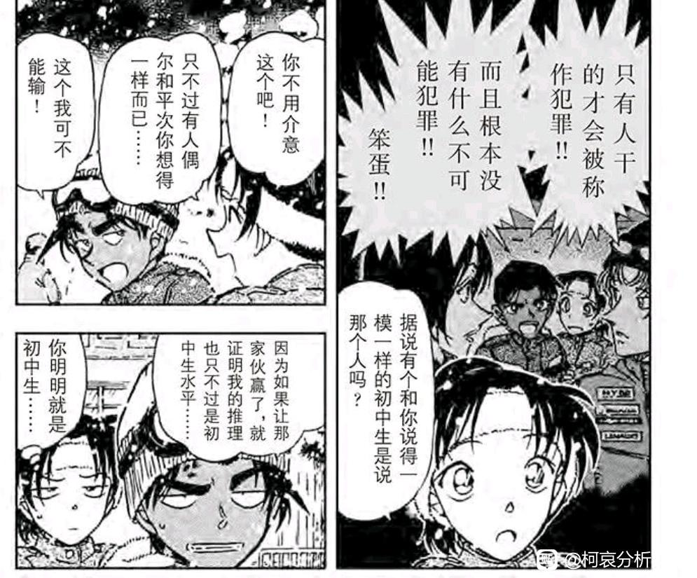
2024-04-28 08:10 | 凌蘭诗:第二种感觉她好酸……第三种倒只是恋爱脑发作一下2024-04-29 00:31 | 暗蓝heart:哀：我又不是小孩子 柯：看上去就是小孩 平：显得我推理只有初中生水平 和：明明就是初中生
和叶有五个以上的好闺蜜，服部也有若干勾肩搭背的好兄弟，但新兰似乎只有园子一人算得上亲密的朋友了。
这里镜头语言很有意思，园子明明是在磕新兰，但是【如胶似漆】【爱的痕迹】镜头全都给了平和，而【原来说的是别人啊】则给了新兰，这似乎是青山的一种常用技巧，蓝色古堡柯哀贴贴被步美“发现”，更早地江户川文代对应“妈妈”，小兰对应“曝光”，以及静华出场时小兰的“这个女人说的事情几乎全是假的”，真是不错的烟雾弹。
接下来又有一处直球对比，和叶见到了静华，小兰见到了有希子，这里和叶十分有礼貌而且可爱（和叶这里的翻译有问题，正确翻译似乎是和叶“想看”服部的成长日记）
而小兰……这已经不能用没礼貌来形容了，应该说是不尊重。不加敬语这个老生常谈就不说了，有希子估计也觉得毕竟初二学生无所谓敬语，但是【除了新一还有别的推理狂】这句话简直逆天到了一定程度，对着母亲骂儿子是真的离谱（顺便连优作一起骂了），得亏是有希子教养好没有发作，但是新一的眼神已经是很不满的了（可以注意到新一是撇了小兰一眼）
当前小兰还有一个“年龄还小”的挡箭牌，有希子于是给了小兰纽约篇这个机会，小兰倒是学聪明了，不至于说出这种逆天的话，但是还是保留了飙车后大吼新一的剧情，有希子的忍耐逐渐降低，云霄飞车和江户川文代之后，有希子就完全对小兰失望了。
这里镜头语言很有意思，园子明明是在磕新兰，但是【如胶似漆】【爱的痕迹】镜头全都给了平和，而【原来说的是别人啊】则给了新兰，这似乎是青山的一种常用技巧，蓝色古堡柯哀贴贴被步美“发现”，更早地江户川文代对应“妈妈”，小兰对应“曝光”，以及静华出场时小兰的“这个女人说的事情几乎全是假的”，真是不错的烟雾弹。
接下来又有一处直球对比，和叶见到了静华，小兰见到了有希子，这里和叶十分有礼貌而且可爱（和叶这里的翻译有问题，正确翻译似乎是和叶“想看”服部的成长日记）
而小兰……这已经不能用没礼貌来形容了，应该说是不尊重。不加敬语这个老生常谈就不说了，有希子估计也觉得毕竟初二学生无所谓敬语，但是【除了新一还有别的推理狂】这句话简直逆天到了一定程度，对着母亲骂儿子是真的离谱（顺便连优作一起骂了），得亏是有希子教养好没有发作，但是新一的眼神已经是很不满的了（可以注意到新一是撇了小兰一眼）
当前小兰还有一个“年龄还小”的挡箭牌，有希子于是给了小兰纽约篇这个机会，小兰倒是学聪明了，不至于说出这种逆天的话，但是还是保留了飙车后大吼新一的剧情，有希子的忍耐逐渐降低，云霄飞车和江户川文代之后，有希子就完全对小兰失望了。
2024-04-28 11:04 | lxt370:我倒是不太认为，我青山考虑了有希子的态度，毕竟她在红俢的时间还在调侃新兰。我觉得她是中立，杂食。2024-04-28 11:18 | 🌐之徙:回复 lxt370 :调侃与调侃亦有不同。 红修优作说得这么严重，要是有希子也和优作态度一致就对柯南不公平了（新一封号显然是优希的共同决定）2024-04-28 13:57 | 发疯的法师:回复 lxt370 :乐子人吧 能调戏儿子就绝不放过
接着众人一起听到了枪声，经典场景【领域外的姐姐】就出自这里，所有人都表达了对枪声的担忧，除了完全状况外的小兰，关键从后文可以看出小兰也是听到了枪声的，她只是本能地无视案件而已，于是一次又一次，新一从她身边离开了，而她总是犹豫于要不要追上去。
最终小兰还是跟上去了，随即被新一告知【不要看】，很多人说什么这里体现了新一对小兰细致的担心之类的，这种推理完全站不住脚，新一不让小兰看尸体，有且只有一个原因，就是要防止这一声大叫，嫌疑人肯定就在这附近的，这一叫，除了犯人立刻知道尸体被发现以为没有任何好处，所以新一的做法不是“遮住小兰的眼睛”，而是提醒小兰让她有一点心理准备（显然失败了）
和叶就几乎不需要这种操作，她本人就有心理准备，并且也和服部一起坐缆车到了现场（和叶不会下车，惨），小兰是被新一强拉上山调查的，而和叶是主动跟着服部坐缆车调查的，两者主动性完全不同。
最终小兰还是跟上去了，随即被新一告知【不要看】，很多人说什么这里体现了新一对小兰细致的担心之类的，这种推理完全站不住脚，新一不让小兰看尸体，有且只有一个原因，就是要防止这一声大叫，嫌疑人肯定就在这附近的，这一叫，除了犯人立刻知道尸体被发现以为没有任何好处，所以新一的做法不是“遮住小兰的眼睛”，而是提醒小兰让她有一点心理准备（显然失败了）
和叶就几乎不需要这种操作，她本人就有心理准备，并且也和服部一起坐缆车到了现场（和叶不会下车，惨），小兰是被新一强拉上山调查的，而和叶是主动跟着服部坐缆车调查的，两者主动性完全不同。
再次为和叶靠谱的小伙伴们点赞，和叶不会下缆车被她们看见了，还真就只是吐槽两句，说不告诉服部真就不告诉，这要换园子来不得满城风雨，不对，园子根本找不到这种场景，因为小兰不可能为了新一去学某种项目💔
看完改方中学的好同学，我们再来看帝丹的逆天同学（帝丹这个名词是侦探反过来，怪不得对新一如此不友好），这帮同学不仅素质低下而且十分烦人，新一根本不想理他们，后面两个男生还在那上演亲吻，鬼知道这帮同学平时是怎么看新兰的。
最终只有园子能帮上忙，这些人里没有哪一个是可靠的，新一在高中至少还有中道，能在出事的时候帮一把，初中是真的黑暗时光。
新一似乎从小就养成了某种无视外界造谣的习惯，不论是麻美学姐还是这些男生他都一律不理，这造就了他强大的内心，却也让他对“别人的认可”没有明确的概念，恐怕在三小只和小哀出现前，小兰已经算是能听进新一话的少数几个人了。
（服部的【改方中学】是真的好学校，之前剑道大会，听说有案件，剑道社员无不悲呼“完了服部来不了比赛”，所有人都认可服部的侦探身份，对比下来新一真的太惨了）
看完改方中学的好同学，我们再来看帝丹的逆天同学（帝丹这个名词是侦探反过来，怪不得对新一如此不友好），这帮同学不仅素质低下而且十分烦人，新一根本不想理他们，后面两个男生还在那上演亲吻，鬼知道这帮同学平时是怎么看新兰的。
最终只有园子能帮上忙，这些人里没有哪一个是可靠的，新一在高中至少还有中道，能在出事的时候帮一把，初中是真的黑暗时光。
新一似乎从小就养成了某种无视外界造谣的习惯，不论是麻美学姐还是这些男生他都一律不理，这造就了他强大的内心，却也让他对“别人的认可”没有明确的概念，恐怕在三小只和小哀出现前，小兰已经算是能听进新一话的少数几个人了。
（服部的【改方中学】是真的好学校，之前剑道大会，听说有案件，剑道社员无不悲呼“完了服部来不了比赛”，所有人都认可服部的侦探身份，对比下来新一真的太惨了）
最后新平是【各解决了一半事件】，和叶这里她特别想看服部破案的样子，即使服部只解决了一半也好，但是小兰嘛……
只能说一如既往，小兰鲜有直接认同新一推理的时候，本案如此，空中密室如此，纽约还是如此，嘴上说着推理狂，新一真的推理成功了就各种质疑，而且这类质疑很多都属于不用过脑子的，基本属于抬杠一类，小兰恐怕就是借助这些抬杠才能看到新一“输掉”的表情吧。
（小兰不是没赞同过新一的推理，但作者故意设置了，只要小兰赞同了新一的推理，那么这个推理几乎一定是错的）
等案件顺利解决之后，小兰更是语出惊人，她不知为何提出了一个奇怪的建议：【你只要摆出一副“事情都是我解决的”的样子就好了】，这算不算沽名灼誉啊，小兰这时的名誉观问题相当大（得等到【滑雪别墅杀人事件】小兰才放下她不切实际的名誉观）
只能说一如既往，小兰鲜有直接认同新一推理的时候，本案如此，空中密室如此，纽约还是如此，嘴上说着推理狂，新一真的推理成功了就各种质疑，而且这类质疑很多都属于不用过脑子的，基本属于抬杠一类，小兰恐怕就是借助这些抬杠才能看到新一“输掉”的表情吧。
（小兰不是没赞同过新一的推理，但作者故意设置了，只要小兰赞同了新一的推理，那么这个推理几乎一定是错的）
等案件顺利解决之后，小兰更是语出惊人，她不知为何提出了一个奇怪的建议：【你只要摆出一副“事情都是我解决的”的样子就好了】，这算不算沽名灼誉啊，小兰这时的名誉观问题相当大（得等到【滑雪别墅杀人事件】小兰才放下她不切实际的名誉观）
2024-04-26 13:23 | 成冰的雨点:天使lan类似于那种田园women right，既没有愿望也没有能力与新一的世界相容，却要强容，只能凭借拼命PUA新一，不然她脆弱的自尊心受不了就不甘心了
最终服部直接背和叶下山，平和糖甜度极高（柯南又背过谁呢？皮斯克表示我看见某人背着雪莉跑了）
而新兰则以雪女传说作为结尾，其实相比传说1的雪山警戒故事，传说2不仅是更悲伤，还更黑暗，因为传说2涉及到标准PUA。
雪女让樵夫背着她，一旦樵夫累到背不动，雪女就会将樵夫干掉，我猜是这样一来雪女还站在了道德制高点，因为是樵夫“抛弃”了雪女嘛，这就很像小兰不断向新一索取，一旦哪天新一不再回应（例如伦敦篇），小兰就立刻以一群人的性命作为胁迫，因为是新一“故意不回应小兰的好意”嘛）
小兰本案对雪女极为共情，她显然将自己带入了雪女，而不是有希子那种带入樵夫“用爱感动雪女”，她和故事中的雪女确实相当相似，甚至和雪女一样以色诱为主，以PUA为辅，这是否意味着相似的结局也会发生在小兰身上？
雪女最后自行消失了，如果小兰真的彻底磕柯哀，那她的道路就和雪女没有什么不同，只有自行消失而已。
而新兰则以雪女传说作为结尾，其实相比传说1的雪山警戒故事，传说2不仅是更悲伤，还更黑暗，因为传说2涉及到标准PUA。
雪女让樵夫背着她，一旦樵夫累到背不动，雪女就会将樵夫干掉，我猜是这样一来雪女还站在了道德制高点，因为是樵夫“抛弃”了雪女嘛，这就很像小兰不断向新一索取，一旦哪天新一不再回应（例如伦敦篇），小兰就立刻以一群人的性命作为胁迫，因为是新一“故意不回应小兰的好意”嘛）
小兰本案对雪女极为共情，她显然将自己带入了雪女，而不是有希子那种带入樵夫“用爱感动雪女”，她和故事中的雪女确实相当相似，甚至和雪女一样以色诱为主，以PUA为辅，这是否意味着相似的结局也会发生在小兰身上？
雪女最后自行消失了，如果小兰真的彻底磕柯哀，那她的道路就和雪女没有什么不同，只有自行消失而已。
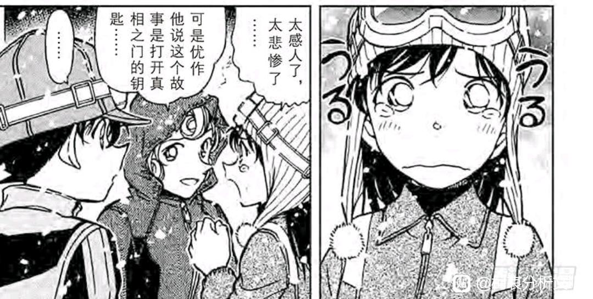
六、青南婚姻映射：5月5日鱼邮件
进入漫画51卷，漫画封面为青山结婚时开始养的猫（漫画中为英理的俄罗斯蓝猫），大量婚后元素从51卷开始被写进了漫画中。尤其在本案，青山直接将自己和南姐领证的日子写进了漫画，创建了一个完全日常且仅有两话的小梓案件【鱼邮件追踪记】，这个案件的唯一作用就是强调青南结婚的5月5日（同时也是南姐的生日），漫画中则以儿童节-鲤鱼旗这种十分委婉的方式展示5月5日的特殊性。
如果青山真的准备写新兰，最简单的方法就是将本案设定在5月5日当天，再发点柯兰糖，简简单单水一案即可，但是青山不这么做，他设计本案在5月5日之后，全篇柯兰糖含量为零，而且柯兰关系比正常情况还要更差，柯南全程有意识地瞒着小兰，哪怕小兰本案表现其实可圈可点，却依然得不到柯南的关注。
如果将柯南＝南姐，那么青山就不可能代入小兰，哪有结婚时专门写南姐冷落自己的，青山代入的是谁呢？真正的5月5日，又是在哪一天呢？
进入漫画51卷，漫画封面为青山结婚时开始养的猫（漫画中为英理的俄罗斯蓝猫），大量婚后元素从51卷开始被写进了漫画中。尤其在本案，青山直接将自己和南姐领证的日子写进了漫画，创建了一个完全日常且仅有两话的小梓案件【鱼邮件追踪记】，这个案件的唯一作用就是强调青南结婚的5月5日（同时也是南姐的生日），漫画中则以儿童节-鲤鱼旗这种十分委婉的方式展示5月5日的特殊性。
如果青山真的准备写新兰，最简单的方法就是将本案设定在5月5日当天，再发点柯兰糖，简简单单水一案即可，但是青山不这么做，他设计本案在5月5日之后，全篇柯兰糖含量为零，而且柯兰关系比正常情况还要更差，柯南全程有意识地瞒着小兰，哪怕小兰本案表现其实可圈可点，却依然得不到柯南的关注。
如果将柯南＝南姐，那么青山就不可能代入小兰，哪有结婚时专门写南姐冷落自己的，青山代入的是谁呢？真正的5月5日，又是在哪一天呢？
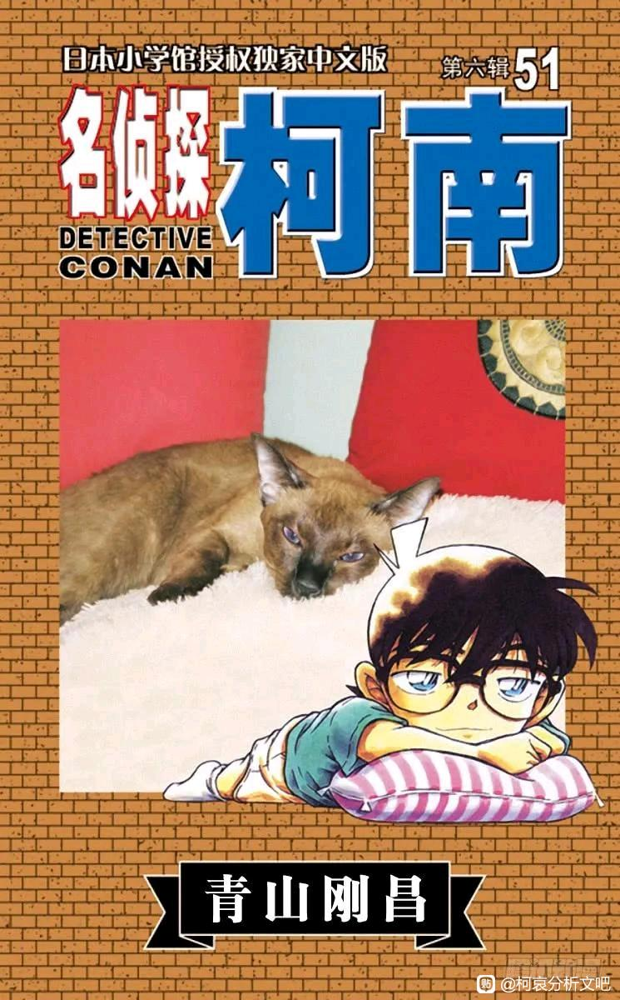
这里，我们再引入一些场外论据：
漫画第50卷发行于2005年7月15日，第51卷则发行于10月18日，也就是说，【鱼邮件追踪记】的创作也已经是7月份之后的事情了，即使加上构思时间也不会到5月份，相反，50卷才是青南领证的时间。
而青南领证有一个特点，那就是【秘密的】，于是答案呼之欲出，【秘密结婚】正好对应【侦探团特别专访】，柯南和小哀互相告诉对方“要收敛一点”，小林老师空降“乱步迷”属性，其实是代指观众们“柯南迷”的属性，是暂时隐瞒的对象，“免疫”的目暮和高木恐怕特指青南知道内情的朋友们。
于是真正的时间线也可以获取了，将新一而非柯南（南姐）登场的新平滑雪对决去掉，那就是：
【侦探团特别专访】-【青南秘密结婚】
【鱼邮件追踪记】-【婚后生活】
既然是婚后生活，青山大笔一挥，本案柯南就对小兰态度不佳，下一案【叹气拾潮】柯哀互动则更加亲密，恐怕青山把自己对南姐的占有欲给代入到漫画里了。
漫画第50卷发行于2005年7月15日，第51卷则发行于10月18日，也就是说，【鱼邮件追踪记】的创作也已经是7月份之后的事情了，即使加上构思时间也不会到5月份，相反，50卷才是青南领证的时间。
而青南领证有一个特点，那就是【秘密的】，于是答案呼之欲出，【秘密结婚】正好对应【侦探团特别专访】，柯南和小哀互相告诉对方“要收敛一点”，小林老师空降“乱步迷”属性，其实是代指观众们“柯南迷”的属性，是暂时隐瞒的对象，“免疫”的目暮和高木恐怕特指青南知道内情的朋友们。
于是真正的时间线也可以获取了，将新一而非柯南（南姐）登场的新平滑雪对决去掉，那就是：
【侦探团特别专访】-【青南秘密结婚】
【鱼邮件追踪记】-【婚后生活】
既然是婚后生活，青山大笔一挥，本案柯南就对小兰态度不佳，下一案【叹气拾潮】柯哀互动则更加亲密，恐怕青山把自己对南姐的占有欲给代入到漫画里了。
回到本案，某个小孩疑似被困，众人正在结合极为有限的线索推理对方的位置，柯南也积极发言，然而当柯南看见小兰严肃的表情时，他突然退缩了一下，选择了继续假扮小孩，这是非常没有道理的，小五狼和小梓早在之前的【被遗忘的手机】一案就见识了柯南的推理能力，瞒着这两人毫无必要（尤其是在时间紧迫时），因此柯南这里突然扮小孩，只有可能是给小兰看的。
柯南的理由可能包括：
【A、本堂瑛佑最近登场，柯南目前对瑛佑相当怀疑，担心小兰泄露“柯南很聪明“这一信息给瑛佑，上一次瑛佑出场，柯南就在装小孩】
【B、柯南高度重视小哀的话，在侦探团特别专访之后，柯南已经开始自觉扮小孩了，这是为了防止信息泄露给酒厂】
不论是哪种原因，最终都可以归结到一句话：
【柯南对小兰不信任】
这种不信任到了什么程度呢？柯南宁可牺牲救援受困小孩的时间，也要瞒一下小兰，【被困小孩只是被困而已，小兰泄露消息可不得了】
而柯南无疑对这种状况，是不情愿却必须要做的，柯南甚至将这种【被迫的不情愿】表达了出来，“如果叔叔也变成小孩，就知道一直抬头是很累的”
【抬头】指代【扮小孩】这件事，很累，却因为不信任小兰而不得不做，这就是柯南每天都要面临的困境。
柯南的理由可能包括：
【A、本堂瑛佑最近登场，柯南目前对瑛佑相当怀疑，担心小兰泄露“柯南很聪明“这一信息给瑛佑，上一次瑛佑出场，柯南就在装小孩】
【B、柯南高度重视小哀的话，在侦探团特别专访之后，柯南已经开始自觉扮小孩了，这是为了防止信息泄露给酒厂】
不论是哪种原因，最终都可以归结到一句话：
【柯南对小兰不信任】
这种不信任到了什么程度呢？柯南宁可牺牲救援受困小孩的时间，也要瞒一下小兰，【被困小孩只是被困而已，小兰泄露消息可不得了】
而柯南无疑对这种状况，是不情愿却必须要做的，柯南甚至将这种【被迫的不情愿】表达了出来，“如果叔叔也变成小孩，就知道一直抬头是很累的”
【抬头】指代【扮小孩】这件事，很累，却因为不信任小兰而不得不做，这就是柯南每天都要面临的困境。
小兰在儿童绑架案似乎会比较积极一些，不论是前文高佐的儿童绑架案，还是本案儿童受困案，小兰都积极参与了推理。
然而，积极推理不代表正贡献，因为小兰接下来的操作让我确信青山绝不会让小兰有任何纯粹的高光。
【小兰在知道小孩子在车里的情况下，试图暴力破窗】
问题是青山不久前刚创作了【再也回不去的两人】，专门给读者说明“如果真的想救人，就不会破受困者所在的窗户”，真想破窗大可以破后备箱（小兰不是对后备箱很熟悉吗）或者后座车窗，但小兰一贯没有什么成长性，那个案件瑛佑学到了不少，小兰却什么也没学到，还是非常暴力，幸好这个小孩及时醒来，不然轻则破相重则受伤。
（关于“青山不会让小兰有纯粹的高光”，几乎可以运用在每一个小兰看似高光的案件上，即使是破窗救园子这样的高光时刻，青山也不忘让小兰对京极真重拳出击而对犯人言听计从，小兰最后一个高光是“代演京极真”，用了静华的话劝阻犯人自杀，然而青山非要让小兰当场笑嘻嘻说出来“这是我一个朋友的母亲说的”，大大降低了小兰的话语力量）
（这些高光与其说是【小兰的高光】，不如说是【小兰试图向周围人展示自己能力】的人物塑造，且毫无疑问是负面塑造。）
然而，积极推理不代表正贡献，因为小兰接下来的操作让我确信青山绝不会让小兰有任何纯粹的高光。
【小兰在知道小孩子在车里的情况下，试图暴力破窗】
问题是青山不久前刚创作了【再也回不去的两人】，专门给读者说明“如果真的想救人，就不会破受困者所在的窗户”，真想破窗大可以破后备箱（小兰不是对后备箱很熟悉吗）或者后座车窗，但小兰一贯没有什么成长性，那个案件瑛佑学到了不少，小兰却什么也没学到，还是非常暴力，幸好这个小孩及时醒来，不然轻则破相重则受伤。
（关于“青山不会让小兰有纯粹的高光”，几乎可以运用在每一个小兰看似高光的案件上，即使是破窗救园子这样的高光时刻，青山也不忘让小兰对京极真重拳出击而对犯人言听计从，小兰最后一个高光是“代演京极真”，用了静华的话劝阻犯人自杀，然而青山非要让小兰当场笑嘻嘻说出来“这是我一个朋友的母亲说的”，大大降低了小兰的话语力量）
（这些高光与其说是【小兰的高光】，不如说是【小兰试图向周围人展示自己能力】的人物塑造，且毫无疑问是负面塑造。）
本案柯南对小兰的态度属于平均线以下，还有两处值得注意的地方。
首先是座位，一般来讲都是小兰抱着柯南的，本案的座位则是小兰前排，小梓和柯南后座，并且青山专门画了一格，让柯南在小梓面前展示自己的能力，相当于直接告诉观众【柯南防的是小兰，不是小梓】
小梓两次案件的表现都很不错，也富有责任感，应该是得到了柯南的认可，之后柯南在小梓面前也几乎不装，等安室登场后柯南更是在波洛咖啡厅指挥高佐破案（甚至指挥了安室），至于谁得不到认可嘛……
另一处，这里小兰看见小男孩全家团聚，有感而发“我家也想变成三条鱼呢……”此处小兰的愿望是纯粹的，比喻是可爱的，但是柯南的反馈呢？
他的表情和小五郎一样，半月眼，是对小五郎半月眼吗？显然不是，小五郎话都没说何至于遭到柯南鄙视？况且柯南也并不热衷于毛妃复合活动。
然而，毛妃复合有可能是小兰最重要的目标（很可能高于嫁给新一），即使柯南不热衷，以青梅竹马的身份，至少也应该对小兰表示同情吧？但柯南的表情是半月眼，这里不分析柯南究竟是讨厌英理还是不喜欢小兰的发言，但可以肯定的是，【柯南对于小兰的目标不尊重且不信任】，既不相信毛妃可能复合，也不尊重小兰为了毛妃复合而进行的努力。
我甚至认为这里柯南有点OOC，小兰本案除了破窗比较离谱，其他都很好，结果柯南一点正反馈都没有，非要说的话就是场外青山由于结婚的关系，就是想在此把柯兰切割一下，后人（也就是现在的我们）看到这里时，只会看见柯哀糖，一点柯兰糖都不给。
首先是座位，一般来讲都是小兰抱着柯南的，本案的座位则是小兰前排，小梓和柯南后座，并且青山专门画了一格，让柯南在小梓面前展示自己的能力，相当于直接告诉观众【柯南防的是小兰，不是小梓】
小梓两次案件的表现都很不错，也富有责任感，应该是得到了柯南的认可，之后柯南在小梓面前也几乎不装，等安室登场后柯南更是在波洛咖啡厅指挥高佐破案（甚至指挥了安室），至于谁得不到认可嘛……
另一处，这里小兰看见小男孩全家团聚，有感而发“我家也想变成三条鱼呢……”此处小兰的愿望是纯粹的，比喻是可爱的，但是柯南的反馈呢？
他的表情和小五郎一样，半月眼，是对小五郎半月眼吗？显然不是，小五郎话都没说何至于遭到柯南鄙视？况且柯南也并不热衷于毛妃复合活动。
然而，毛妃复合有可能是小兰最重要的目标（很可能高于嫁给新一），即使柯南不热衷，以青梅竹马的身份，至少也应该对小兰表示同情吧？但柯南的表情是半月眼，这里不分析柯南究竟是讨厌英理还是不喜欢小兰的发言，但可以肯定的是，【柯南对于小兰的目标不尊重且不信任】，既不相信毛妃可能复合，也不尊重小兰为了毛妃复合而进行的努力。
我甚至认为这里柯南有点OOC，小兰本案除了破窗比较离谱，其他都很好，结果柯南一点正反馈都没有，非要说的话就是场外青山由于结婚的关系，就是想在此把柯兰切割一下，后人（也就是现在的我们）看到这里时，只会看见柯哀糖，一点柯兰糖都不给。
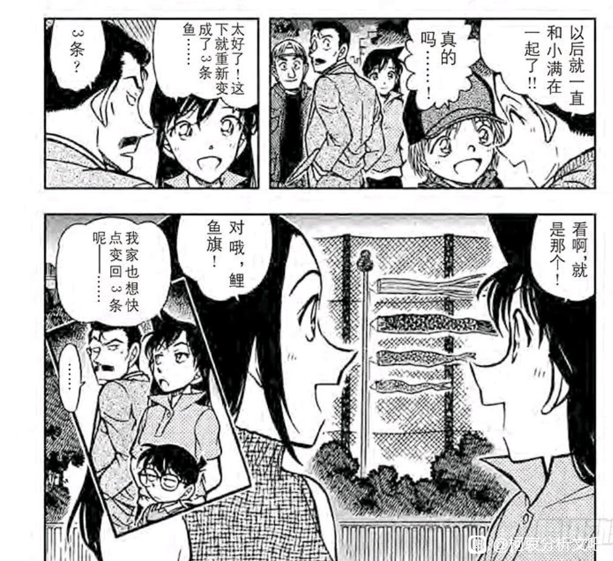
等待更新
七、无论四季的追逐：叹气拾潮
作为婚后生活的一部分，漫画中柯哀糖甜度持续上升，本案需要结合【打不破的雪人】一起看，对称性十分明显：
叹气拾潮为夏季，柯南在小哀面前开屏，少侦没有挖蛤蜊而是去堆沙堡了。
雪人案为冬季，柯南在小哀面前开屏，少侦没有滑雪而是去堆雪人了。
这种既有夏季又有冬季的相似剧情，无疑是在塑造一种【常态】，在水无篇这个时间节点，柯哀关系就是这两案所展示的关系，柯南几乎是在追求小哀，但小哀由于种种原因不可能给予回复，求之不得，寤寐思服。
纵观漫画，相似的塑造还有两处：园子的【三胞胎案】和【滑雪别墅案】，从夏天到冬天小兰都跟着园子到处玩；而更著名的自然是时间胶囊篇明美的行动轨迹，有夏天有冬天还和小志保在一起。
（三小只的沙堡水平好高啊，看来M18少侦建模铃木塔真的是有可能的）
作为婚后生活的一部分，漫画中柯哀糖甜度持续上升，本案需要结合【打不破的雪人】一起看，对称性十分明显：
叹气拾潮为夏季，柯南在小哀面前开屏，少侦没有挖蛤蜊而是去堆沙堡了。
雪人案为冬季，柯南在小哀面前开屏，少侦没有滑雪而是去堆雪人了。
这种既有夏季又有冬季的相似剧情，无疑是在塑造一种【常态】，在水无篇这个时间节点，柯哀关系就是这两案所展示的关系，柯南几乎是在追求小哀，但小哀由于种种原因不可能给予回复，求之不得，寤寐思服。
纵观漫画，相似的塑造还有两处：园子的【三胞胎案】和【滑雪别墅案】，从夏天到冬天小兰都跟着园子到处玩；而更著名的自然是时间胶囊篇明美的行动轨迹，有夏天有冬天还和小志保在一起。
（三小只的沙堡水平好高啊，看来M18少侦建模铃木塔真的是有可能的）
本案柯哀的某种带娃感越来越显著了，经典柯南有些批评三小只，小哀出来维护一下。
之前我提到过一个理论，少侦一起出来玩，一般都是真的玩到了实处，钓鱼钓到了，捉虫捉到了，蛤蜊挖到了，玩雪也玩了，于是戏内的柯南是快乐的，戏外的观众也是舒适的，加之少侦案件的犯人往往没什么值得同情的动机，更多是穷凶极恶之徒（例如本案是肇事逃逸者杀同伴），【柯哀】-【出去玩】-【轻松愉快】就被作者形成了强相关。
小兰的主场严重缺乏这种塑造，犯罪分子是压抑的（情杀/误会/正义的复仇），经常不是去玩而是小五郎接受委托，即使偶尔因为园子而出去玩，柯南也各种“玩的不尽兴”，毕竟少了小哀和三小只这种真正欣赏他的人，怎么会尽兴呢？
这种潜移默化的塑造差异，会让柯兰主场和柯哀主场形成鲜明的不同风格，也会让作品的结局指向观众爱看（其实是作者想让观众爱看）的方向。
之前我提到过一个理论，少侦一起出来玩，一般都是真的玩到了实处，钓鱼钓到了，捉虫捉到了，蛤蜊挖到了，玩雪也玩了，于是戏内的柯南是快乐的，戏外的观众也是舒适的，加之少侦案件的犯人往往没什么值得同情的动机，更多是穷凶极恶之徒（例如本案是肇事逃逸者杀同伴），【柯哀】-【出去玩】-【轻松愉快】就被作者形成了强相关。
小兰的主场严重缺乏这种塑造，犯罪分子是压抑的（情杀/误会/正义的复仇），经常不是去玩而是小五郎接受委托，即使偶尔因为园子而出去玩，柯南也各种“玩的不尽兴”，毕竟少了小哀和三小只这种真正欣赏他的人，怎么会尽兴呢？
这种潜移默化的塑造差异，会让柯兰主场和柯哀主场形成鲜明的不同风格，也会让作品的结局指向观众爱看（其实是作者想让观众爱看）的方向。
此处非常有趣。
柯南拿着新挖的蛤蜊向小哀邀功，有点脸红的表情相当于在说“灰原快夸我”，没想到小哀已经悄悄移动到另一边，柯南扑了个空。
小哀还故意说“那些孩子们吗……”其实这里柯南想开屏的对象就是小哀本人，但是小哀却假装不知道的样子，这种属于柯哀日常的暧昧拉扯后续还会多次出现，以至于【设定上是小哀对柯南单恋，但是剧情上却是柯南对小哀不断追求的样子】
这种塑造是独属于柯哀的有趣，而且更有趣的是，此前作者专门在新平滑雪场加了小兰的一段话：【好啦好啦，新一什么都知道，真聪明】（半月眼）和【你是为了让我放心才说这句话的吧】，兰哀果然是截然相反的，小哀欣赏柯南的知识却逃避柯南追求，而小兰反感新一对知识的显摆却强行将新一的行为理解为“为了自己”，孰是孰非，作者将用新一的态度变化告诉读者答案。
对小兰，【不光是这个原因】（高情商，其实就没有这个原因）
对小哀：这次开屏真不错，下次继续。
柯南拿着新挖的蛤蜊向小哀邀功，有点脸红的表情相当于在说“灰原快夸我”，没想到小哀已经悄悄移动到另一边，柯南扑了个空。
小哀还故意说“那些孩子们吗……”其实这里柯南想开屏的对象就是小哀本人，但是小哀却假装不知道的样子，这种属于柯哀日常的暧昧拉扯后续还会多次出现，以至于【设定上是小哀对柯南单恋，但是剧情上却是柯南对小哀不断追求的样子】
这种塑造是独属于柯哀的有趣，而且更有趣的是，此前作者专门在新平滑雪场加了小兰的一段话：【好啦好啦，新一什么都知道，真聪明】（半月眼）和【你是为了让我放心才说这句话的吧】，兰哀果然是截然相反的，小哀欣赏柯南的知识却逃避柯南追求，而小兰反感新一对知识的显摆却强行将新一的行为理解为“为了自己”，孰是孰非，作者将用新一的态度变化告诉读者答案。
对小兰，【不光是这个原因】（高情商，其实就没有这个原因）
对小哀：这次开屏真不错，下次继续。
2024-04-30 19:36 | snowfly1024:大小号连帽子都画成一样的……
旋即进入案件，柯哀默契的含金量又显示出来了，如果说这种微小的“杀意气氛”都能被柯哀马上察觉，那么他们也一定会察觉某种暧昧气氛吧。
（道理我都懂，为何柯哀的服装色调刚好反过来？怕不是从现在开始青山就着手准备悄悄藏情侣装了）
本案是横沟弟弟主场，作为大后期竟然有感情线的角色，横沟弟弟的出场其实是带有某种目的性，首先剧情需要一位不听命于侦探的警官，但是该警官被设定为珊瑚头的双胞胎则是有意为之。
横沟重悟登场于【中华街似曾相识】，其实是暗示了小兰对纽约篇的回忆可能有某些错位（长短发秀一，服装不一致的新一等等），因此设定上采用了和哥哥长的一样却更加暴躁的设定（竟然与秀一情况十分相似）
从本案我们可以知道，横沟弟弟和哥哥经常聊天，他知道小五郎，知道三小只，那么就一定知道另一件事：【小哀在柯南面前大哭过】
甚至由于萩原千速的关系，横沟隐约可能进入主线，此前钓鱼案，作者专门安排横沟乘船前往码头，却最后也没看见小哀，本案横沟则吼了三小只，吼了柯南，就是不敢吼小哀（他哥可能告诉他小哀作为小学生，打字速度飞快而且根本不像小孩），一角岩横沟与秀一同台回收了纽约篇的暗示，蒸汽密室里横沟甚至看到了柯哀互相欺负的过程（反手学来对付千速）
横沟弟弟是柯哀相处的日常切片，千重是警视厅“七朵玫瑰”之一，这一设定恐怕在本案就有所暗示了。（同样都是海边，此后青山更倾向于让弟弟登场）
（道理我都懂，为何柯哀的服装色调刚好反过来？怕不是从现在开始青山就着手准备悄悄藏情侣装了）
本案是横沟弟弟主场，作为大后期竟然有感情线的角色，横沟弟弟的出场其实是带有某种目的性，首先剧情需要一位不听命于侦探的警官，但是该警官被设定为珊瑚头的双胞胎则是有意为之。
横沟重悟登场于【中华街似曾相识】，其实是暗示了小兰对纽约篇的回忆可能有某些错位（长短发秀一，服装不一致的新一等等），因此设定上采用了和哥哥长的一样却更加暴躁的设定（竟然与秀一情况十分相似）
从本案我们可以知道，横沟弟弟和哥哥经常聊天，他知道小五郎，知道三小只，那么就一定知道另一件事：【小哀在柯南面前大哭过】
甚至由于萩原千速的关系，横沟隐约可能进入主线，此前钓鱼案，作者专门安排横沟乘船前往码头，却最后也没看见小哀，本案横沟则吼了三小只，吼了柯南，就是不敢吼小哀（他哥可能告诉他小哀作为小学生，打字速度飞快而且根本不像小孩），一角岩横沟与秀一同台回收了纽约篇的暗示，蒸汽密室里横沟甚至看到了柯哀互相欺负的过程（反手学来对付千速）
横沟弟弟是柯哀相处的日常切片，千重是警视厅“七朵玫瑰”之一，这一设定恐怕在本案就有所暗示了。（同样都是海边，此后青山更倾向于让弟弟登场）
2024-04-28 08:57 | 黑暗刺猬-夏特:横沟重悟不吼灰原的另一可能，应该是他哥哥横沟参悟说了在教授案完结时听到一些灰原的【为什么】【姐姐】之类的句子，再加上灰原抓着柯南衣服跪地痛哭的悲惨样子，推断灰原失去了对其极其重要的姐姐。（当时灰原的哭声不但止参悟有听到看到，连鉴别人员的可能看到印入眼中了）2024-05-01 05:02 | 似有却無:因为哥哥不会游泳嘛
给横沟弟弟一点小小的柯哀震撼，这里他恐怕要对哥哥所说的柯哀深信不疑了。
小哀本案继续发挥她“读新术”的能力，基本上柯南一知道什么小哀也立刻知道了，搁横沟面前一唱一和。
这里又有一处对比，和新平滑雪案非常相似的表情出现在小兰与小哀身上，甚至柯南/新一都关注一个瓶子，这两张图绝对是有意设置的对比。
尽管很相似，但两张图的表达完全不同，新一并没有解决案件，只是发现了一点线索，小兰的表情并非赞赏新一发现线索，而是【看口气好像你破案了似的】，几乎可以算是嘲讽了，反而真正破案时小兰不会有什么好话；小哀这里柯南已经完全破案，柯南什么话都没有说，但小哀只需要看到【柯南嘴角上扬】就知道这把稳了，对柯南的眼神更多的是欣赏。
于是小哀可以和柯南一起在横沟面前一唱一和，小兰却基本无法参与案件，甚至我们可以解析一下柯南/新一的站位，新一是无所谓小兰看不看见的，自己关注着瓶子，柯南嘛……他好像蛮希望小哀夸他的
小哀本案继续发挥她“读新术”的能力，基本上柯南一知道什么小哀也立刻知道了，搁横沟面前一唱一和。
这里又有一处对比，和新平滑雪案非常相似的表情出现在小兰与小哀身上，甚至柯南/新一都关注一个瓶子，这两张图绝对是有意设置的对比。
尽管很相似，但两张图的表达完全不同，新一并没有解决案件，只是发现了一点线索，小兰的表情并非赞赏新一发现线索，而是【看口气好像你破案了似的】，几乎可以算是嘲讽了，反而真正破案时小兰不会有什么好话；小哀这里柯南已经完全破案，柯南什么话都没有说，但小哀只需要看到【柯南嘴角上扬】就知道这把稳了，对柯南的眼神更多的是欣赏。
于是小哀可以和柯南一起在横沟面前一唱一和，小兰却基本无法参与案件，甚至我们可以解析一下柯南/新一的站位，新一是无所谓小兰看不看见的，自己关注着瓶子，柯南嘛……他好像蛮希望小哀夸他的
2024-04-28 13:08 | 内的裤_:一边热衷于造神，一边又热衷于给神泼凉水把神拽下神坛，真有你的pua癫婆
番外：青南的猫，漫画中的五郎
本篇同样充满了青山的婚后元素，俄罗斯蓝猫恰好对应显示中由南姐养的猫“快斗”，青山让这只猫不属于新兰，而属于毛妃。（尴尬的是，两年后青南离婚，猫给南姐养，这下真成毛妃了）
在本篇之前，青山在“超机密的上学路”里已经为柯哀安排了三只小猫，当时青南还未结婚，很可能早就想着婚后养猫了。猫的意象在柯哀剧情中大量出现，中期也有三毛流浪猫的数个案件，甚至最新话又出现了虎皮猫，但是，青山几乎不给小兰与小动物同框的镜头，即使五郎也是让英理互动，【本案小兰甚至没有碰过五郎】。
青山似乎延续了之前的思路，他又想安排自己的婚后生活进入漫画，又不希望读者把这些婚后意象和新兰联系在一起，于是就造就了这一篇章。
此外，本案关于小五郎对刻画也是值得讨论的，小五郎当着柯南的面，认为“小兰被新一迷得团团转”，但是柯南似乎对此并不在乎，要知道服部仅仅被远山瞪了一眼就立刻敬语连连，柯南却从来没有考虑过改善自己在小五郎心中的形象。（即使在红修前也是如此），这里无非有以下两种理由
【A、柯南曾经尝试过“改善形象”，但小五郎冥顽不灵】
【B、柯南根本不考虑“改善形象”，因为自己并没有“将小兰迷得团团转”】
从漫画剧情看，选项B更符合柯南的心态，柯南对于“新兰结局”本就没有那么热衷，加之他根本就不认为自己有什么向小五郎示好的责任，于是就造成了这种结果。
小五郎继续抱怨新一，柯南继续若无其事。甚至小五郎和新一都没有开诚布公谈过，难以想象新兰结局时这块乱麻应该如何处理。
本篇同样充满了青山的婚后元素，俄罗斯蓝猫恰好对应显示中由南姐养的猫“快斗”，青山让这只猫不属于新兰，而属于毛妃。（尴尬的是，两年后青南离婚，猫给南姐养，这下真成毛妃了）
在本篇之前，青山在“超机密的上学路”里已经为柯哀安排了三只小猫，当时青南还未结婚，很可能早就想着婚后养猫了。猫的意象在柯哀剧情中大量出现，中期也有三毛流浪猫的数个案件，甚至最新话又出现了虎皮猫，但是，青山几乎不给小兰与小动物同框的镜头，即使五郎也是让英理互动，【本案小兰甚至没有碰过五郎】。
青山似乎延续了之前的思路，他又想安排自己的婚后生活进入漫画，又不希望读者把这些婚后意象和新兰联系在一起，于是就造就了这一篇章。
此外，本案关于小五郎对刻画也是值得讨论的，小五郎当着柯南的面，认为“小兰被新一迷得团团转”，但是柯南似乎对此并不在乎，要知道服部仅仅被远山瞪了一眼就立刻敬语连连，柯南却从来没有考虑过改善自己在小五郎心中的形象。（即使在红修前也是如此），这里无非有以下两种理由
【A、柯南曾经尝试过“改善形象”，但小五郎冥顽不灵】
【B、柯南根本不考虑“改善形象”，因为自己并没有“将小兰迷得团团转”】
从漫画剧情看，选项B更符合柯南的心态，柯南对于“新兰结局”本就没有那么热衷，加之他根本就不认为自己有什么向小五郎示好的责任，于是就造成了这种结果。
小五郎继续抱怨新一，柯南继续若无其事。甚至小五郎和新一都没有开诚布公谈过，难以想象新兰结局时这块乱麻应该如何处理。
此外小五郎本案也是非常矛盾。
一方面，他独立做出决策，牺牲自己的委托费也要成全委托人的父女感情，另一方面，小五郎又颐指气使地指使刚上学回来的小兰去做饭。
在外人看来，小五郎是名侦探，在相对熟悉小五郎的人（例如平和，园子，目暮等人）看来，小五郎虽然不靠谱，但也是很有人格魅力的，但是，小五郎在处理家庭关系的表现糟糕透顶，他或许能在大是大非上站稳立场，却丝毫不在乎平日感情的培养，以小五郎的空闲程度，学做饭并不困难，如果小五郎愿意学，至少比英理要好得多，他只是不愿意做而已，因为有一个能无限为他做饭的女儿在。
然而，青山其实更偏爱会做饭的男性，安室厨艺高超，秀一水平则较差但也在努力学习，这两位作为名柯里成年男性的标杆人物，显然代表了作者的偏向，因此让小五郎不做饭，纯粹是出于人设考虑的。
【因为小五郎不做饭，所以长期以来小兰会认为女生做饭理所当然，会认为打扫新一家就是她应该做的事，小五郎将小兰表达爱意的方向限制在家务上，至多也就送送礼物，却从来没有教会小兰一些更真诚的情绪表达】
因为要塑造一个别扭的小兰，所以小五郎必须不会做饭，不能像中森那样可靠。
（有一种观点认为，毛利一家可能有现实原型，这点其实暂时没有证据，因为毛利一家的设定太早了，早到有些草率，不太可能作为青山寄予厚望的什么映射，但是设计柯哀时就不一定了，当时青山已经和南姐相处了很久，足以让他用各种素材进行隐喻）
一方面，他独立做出决策，牺牲自己的委托费也要成全委托人的父女感情，另一方面，小五郎又颐指气使地指使刚上学回来的小兰去做饭。
在外人看来，小五郎是名侦探，在相对熟悉小五郎的人（例如平和，园子，目暮等人）看来，小五郎虽然不靠谱，但也是很有人格魅力的，但是，小五郎在处理家庭关系的表现糟糕透顶，他或许能在大是大非上站稳立场，却丝毫不在乎平日感情的培养，以小五郎的空闲程度，学做饭并不困难，如果小五郎愿意学，至少比英理要好得多，他只是不愿意做而已，因为有一个能无限为他做饭的女儿在。
然而，青山其实更偏爱会做饭的男性，安室厨艺高超，秀一水平则较差但也在努力学习，这两位作为名柯里成年男性的标杆人物，显然代表了作者的偏向，因此让小五郎不做饭，纯粹是出于人设考虑的。
【因为小五郎不做饭，所以长期以来小兰会认为女生做饭理所当然，会认为打扫新一家就是她应该做的事，小五郎将小兰表达爱意的方向限制在家务上，至多也就送送礼物，却从来没有教会小兰一些更真诚的情绪表达】
因为要塑造一个别扭的小兰，所以小五郎必须不会做饭，不能像中森那样可靠。
（有一种观点认为，毛利一家可能有现实原型，这点其实暂时没有证据，因为毛利一家的设定太早了，早到有些草率，不太可能作为青山寄予厚望的什么映射，但是设计柯哀时就不一定了，当时青山已经和南姐相处了很久，足以让他用各种素材进行隐喻）
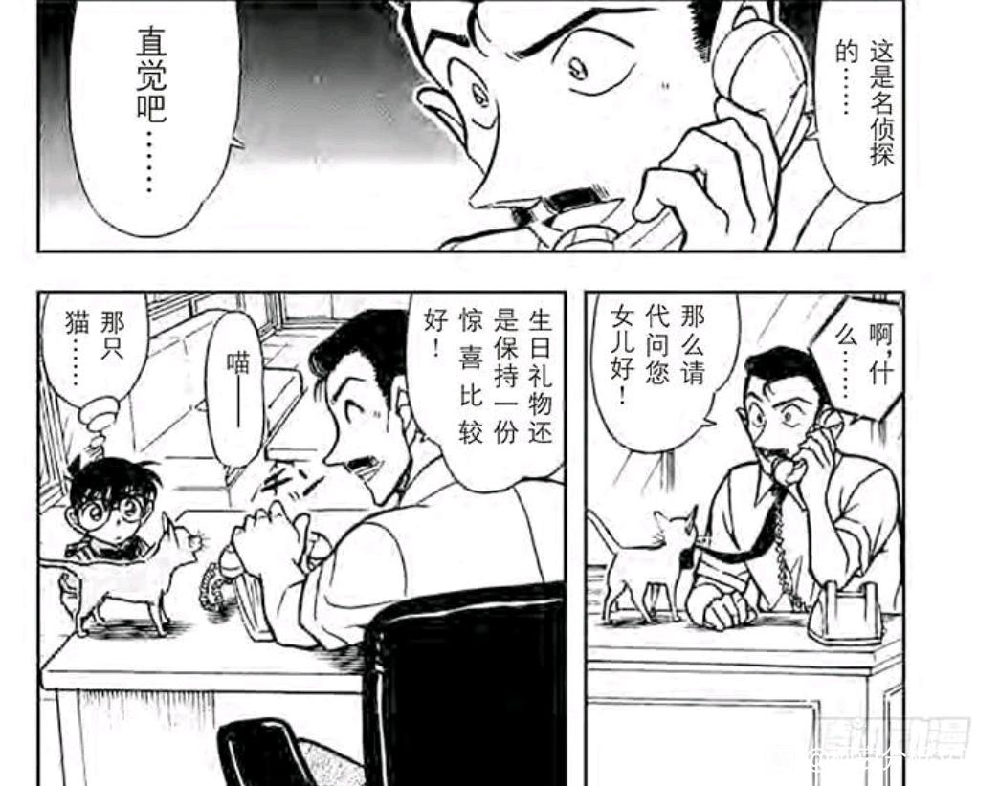
2024-04-30 21:09 | Asura兔子:现在博士都会做饭了，危命的时候黄瓜都切不好，家长会的时候都可以做炒面了
我总感觉青山没有认真思考，有希子的态度。有希子总共见了四次角的下头操作，也就伦敦篇没说角，可能表示了不满。开始假扮江户川文代那个时间我的观感上，角的表现也不是一个负责的人。
如果我是有希子，我多少要说几句了。至少不会调侃。
而且有希子之后还给哀做饭，且她也磕柯哀，就显得很矛盾了。
我还是持保留意见，青山似乎没有认真考虑，有希子态度是否合理。
如果我是有希子，我多少要说几句了。至少不会调侃。
而且有希子之后还给哀做饭，且她也磕柯哀，就显得很矛盾了。
我还是持保留意见，青山似乎没有认真考虑，有希子态度是否合理。
2024-04-28 12:15 | 🌐之徙:这个可以有不同的观点，我个人认为有希子的态度是合理的，有希子的调侃更多的是一种【让柯南正视问题】的手段，因为只是调侃而不是促进，伦敦篇甚至促退。2024-04-28 23:05 | 世界上没有真理:很符合有希子的人設，她對毛利蘭就是有禮並且疏遠的，毛利蘭又不是她的誰她為何要去說她？2024-04-30 07:58 | 柑橘香水💞:小兰的行为都是对新一做的，并不是直接面对有希子。就算小兰真的跟新一结婚了，有希子身为婆婆也不好插手小两口的事，新一自己都没说啥，如果有希子贸然插手才奇怪。
我感觉有希子就像是看着儿子成长的乐子人，只要这事不会要儿子的命，大多不会干预。毕竟事教人，一教就会。所以她也不会插手太多新一的感情，只要没到不可控的地步，就吃瓜看戏～
当然，有希子和哀酱交流的话题估计比较多，也不一定都聊新一啊～
当然，有希子和哀酱交流的话题估计比较多，也不一定都聊新一啊～
八、园子的计略和不怕鬼的小兰：被封印的欧式窗
本案是瑛佑的第二次登场，佑兰线仍然在持续推进中。
青山在创作CP时似乎有一种习惯，他会仅描述一方的心理活动而隐藏另一方，例如柯哀是描述哀而隐藏柯，高佐是描述高木而隐藏佐藤，（平和属于例外，两边都有描述），而在佑兰，显然是着重描写瑛佑心理而隐藏了小兰的心理，但却将小兰各种关心瑛佑的行为全部表现出来，呈现出一种恰当而公平的CP感。
本案小兰对瑛佑的积极行为到了什么程度呢？【她不怕鬼了】，这对于小兰而言恐怕是巨大的飞跃，为了保护瑛佑，小兰能克服自己最大的恐惧。
本次出游是园子策划的，园子专门瞒着小兰，带她来到绷带怪人别墅，又特意带瑛佑来，故意让小兰陷入害怕的情绪里，其目的不言自明：
【园子希望小兰展现出害怕，并由上一案表现出色的瑛佑去安慰小兰，借此磕CP】
我们甚至可以设想，小兰极有可能对园子说过“柯南的位置被瑛佑代替了哦”，对小兰的恋爱情绪极为敏感的园子马上意识到佑兰线的存在，于是创造了这一场景。（园子真的做得出这种事，绷带怪人案也是园子带小兰认识好男人的，最新话又各种cue白马探）
只是园子没有想到，她的目标虽然达成，但是方法有些奇怪，【并不是瑛佑保护害怕的小兰，而是小兰保护害怕的瑛佑】，这对园子而言恐怕是意外之喜了。
本案是瑛佑的第二次登场，佑兰线仍然在持续推进中。
青山在创作CP时似乎有一种习惯，他会仅描述一方的心理活动而隐藏另一方，例如柯哀是描述哀而隐藏柯，高佐是描述高木而隐藏佐藤，（平和属于例外，两边都有描述），而在佑兰，显然是着重描写瑛佑心理而隐藏了小兰的心理，但却将小兰各种关心瑛佑的行为全部表现出来，呈现出一种恰当而公平的CP感。
本案小兰对瑛佑的积极行为到了什么程度呢？【她不怕鬼了】，这对于小兰而言恐怕是巨大的飞跃，为了保护瑛佑，小兰能克服自己最大的恐惧。
本次出游是园子策划的，园子专门瞒着小兰，带她来到绷带怪人别墅，又特意带瑛佑来，故意让小兰陷入害怕的情绪里，其目的不言自明：
【园子希望小兰展现出害怕，并由上一案表现出色的瑛佑去安慰小兰，借此磕CP】
我们甚至可以设想，小兰极有可能对园子说过“柯南的位置被瑛佑代替了哦”，对小兰的恋爱情绪极为敏感的园子马上意识到佑兰线的存在，于是创造了这一场景。（园子真的做得出这种事，绷带怪人案也是园子带小兰认识好男人的，最新话又各种cue白马探）
只是园子没有想到，她的目标虽然达成，但是方法有些奇怪，【并不是瑛佑保护害怕的小兰，而是小兰保护害怕的瑛佑】，这对园子而言恐怕是意外之喜了。
园子的计划比小兰的红莲骷髅靠谱多了，绷带怪人桥断了，于是一行人来到旁边另一栋别墅，别墅里的人表示别墅被诅咒了，小兰和瑛佑都有些害怕。
一般情况下小兰这时候早就叫出来了（冲野洋子和朗姆表示被吵到过），然而只要瑛佑陪在自己身边，小兰就有勇气去检查这个恶魔出现的窗口，这里瑛佑和小兰的姿势是不是很熟悉？这和再会篇柯哀是一样的，是一种寻求安全感的姿势，展现了对前方之人的信任，小兰的信任不属于新一而属于瑛佑。
仅在这种时候，小兰的怕鬼是可爱的，因为怕鬼并不会影响小兰的行为，而只是显得有些慌张而已，柯南小五郎（甚至贝姐）努力了半天训练小兰不怕鬼，结果被瑛佑轻松达成了目标。
（甚至瑛佑和小兰达成了一唱一和，瑛佑说一句“运气真好”，小兰就立刻知道瑛佑指的是什么，如果从小时间线计算，此时小兰和瑛佑认识恐怕只有三四天，这默契程度我不好说）
一般情况下小兰这时候早就叫出来了（冲野洋子和朗姆表示被吵到过），然而只要瑛佑陪在自己身边，小兰就有勇气去检查这个恶魔出现的窗口，这里瑛佑和小兰的姿势是不是很熟悉？这和再会篇柯哀是一样的，是一种寻求安全感的姿势，展现了对前方之人的信任，小兰的信任不属于新一而属于瑛佑。
仅在这种时候，小兰的怕鬼是可爱的，因为怕鬼并不会影响小兰的行为，而只是显得有些慌张而已，柯南小五郎（甚至贝姐）努力了半天训练小兰不怕鬼，结果被瑛佑轻松达成了目标。
（甚至瑛佑和小兰达成了一唱一和，瑛佑说一句“运气真好”，小兰就立刻知道瑛佑指的是什么，如果从小时间线计算，此时小兰和瑛佑认识恐怕只有三四天，这默契程度我不好说）
2024-05-02 06:16 | 上総守信長ºº:鸟肌已立
接着一行人去查外面的鸟笼，看这佑兰同框的画法，这一模一样的表情，这真的不是某种情侣格式吗？靠得如此之近，之前室内还把柯南画在他俩中间，现在直接不装了。（小兰在瑛佑身边时比在新一身边要开心得多）
然后瑛佑被“魔鬼的窗户”吓到了，这里小兰的表现可谓非常优秀，她第一时间跟上柯南的步伐，就要去看“究竟是什么东西在吓瑛佑”，可以看到小兰几乎没有犹豫，直接就气喘吁吁跑过来了。
在小兰的怕鬼历史里，恐怕这是绝无仅有的，明知有鬼还冲过去侦查的行为，也许美术馆的移动盔甲也是小兰主动，但当时小兰还需要父亲和柯南陪同，然而这里小兰并没有叫上园子或瑛佑，自己跑过来，我甚至怀疑万一真的有什么鬼藏在这里，小兰有可能使得出空手道。
小兰为何不怕鬼？甚至直到刚才还很害怕，无非是想要保护瑛佑罢了，对瑛佑的偏好克服了小兰最大的恐惧。
然后瑛佑被“魔鬼的窗户”吓到了，这里小兰的表现可谓非常优秀，她第一时间跟上柯南的步伐，就要去看“究竟是什么东西在吓瑛佑”，可以看到小兰几乎没有犹豫，直接就气喘吁吁跑过来了。
在小兰的怕鬼历史里，恐怕这是绝无仅有的，明知有鬼还冲过去侦查的行为，也许美术馆的移动盔甲也是小兰主动，但当时小兰还需要父亲和柯南陪同，然而这里小兰并没有叫上园子或瑛佑，自己跑过来，我甚至怀疑万一真的有什么鬼藏在这里，小兰有可能使得出空手道。
小兰为何不怕鬼？甚至直到刚才还很害怕，无非是想要保护瑛佑罢了，对瑛佑的偏好克服了小兰最大的恐惧。
接下来，众人发现了上吊的死者，小兰的表现仍然优秀，在柯南仔细检查门锁确认密室时，小兰已经镇定自若地接管了现场指挥工作，让在场的人把死者放下来抢救，再指挥别人去报警。
我们回顾一下正常小兰遇见上吊死者的反应，【陶艺家案】，当时小兰直接被吓得大叫出来，报警和救人全是柯南做的。
看似同样的场景，小兰的行为却有所不同，无非是因为瑛佑的存在，小兰显然立刻想通刚才瑛佑看见的鬼和这次命案脱不了干系，她肯定是对瑛佑有某种保护欲的，于是对本案十分重视，看起来像个侦探。
当然，小兰能力有限，像侦探的部分也就仅限于此了，但是瑛佑补全了小兰的短板，在柯南啊咧咧的助攻下，瑛佑很快搞清楚了案件的两种可能（佑兰某种程度真的很互补，瑛佑即时反应很差而小兰推理能力不足，恰好都是对方的强项）
于是在案件中，佑兰互相成为对方心中可靠的存在，甚至园子还在这里假装有鬼大惊小怪，更衬托出小兰的临危不乱。（园子为小兰操碎了心啊）
我们回顾一下正常小兰遇见上吊死者的反应，【陶艺家案】，当时小兰直接被吓得大叫出来，报警和救人全是柯南做的。
看似同样的场景，小兰的行为却有所不同，无非是因为瑛佑的存在，小兰显然立刻想通刚才瑛佑看见的鬼和这次命案脱不了干系，她肯定是对瑛佑有某种保护欲的，于是对本案十分重视，看起来像个侦探。
当然，小兰能力有限，像侦探的部分也就仅限于此了，但是瑛佑补全了小兰的短板，在柯南啊咧咧的助攻下，瑛佑很快搞清楚了案件的两种可能（佑兰某种程度真的很互补，瑛佑即时反应很差而小兰推理能力不足，恰好都是对方的强项）
于是在案件中，佑兰互相成为对方心中可靠的存在，甚至园子还在这里假装有鬼大惊小怪，更衬托出小兰的临危不乱。（园子为小兰操碎了心啊）
竟然赶上直播了
后半段园子“怕鬼”，操哥【怕鬼】，但是小兰瑛佑根本就不怕，属于是相互扶持了，找到犯人后，小兰也是十分愤怒，直接怒斥犯人，还把瑛佑护在身后。
瑛佑似乎天然具有改变小兰的力量，第一次登场，小兰从有些暴力倾向的高中生变为暖心的大姐姐，第二次登场，小兰从怕鬼变为不怕鬼，在小兰看来，瑛佑是弱势的，是她需要保护的，是她放心不下的，为了让瑛佑安心，小兰可以克服自己的恐惧，那么，放心不下＝？
柯南显然根本就无视了佑兰线，这要换成光彦小哀那可不得了，柯南当场就要劝退光彦，然而对于瑛佑，柯南的醋意极为有限，或者说不敏感，一方面在柯南看来，瑛佑和水无有关，是个可疑人物，但另一方面，柯南对小兰也确实没有多少占有欲，第一个案件时柯南阻止了创可贴互动，但那似乎是柯南身份的嫉妒而非新一身份的吃醋，本案柯南更是完全不管佑兰进展，有人可能会认为不对啊，最后柯南不是劝退瑛佑了吗？【一开始就劝退】和【最后再劝退】，区别可太大了，更何况最后柯南的劝退可不一定是吃醋啊。
瑛佑似乎天然具有改变小兰的力量，第一次登场，小兰从有些暴力倾向的高中生变为暖心的大姐姐，第二次登场，小兰从怕鬼变为不怕鬼，在小兰看来，瑛佑是弱势的，是她需要保护的，是她放心不下的，为了让瑛佑安心，小兰可以克服自己的恐惧，那么，放心不下＝？
柯南显然根本就无视了佑兰线，这要换成光彦小哀那可不得了，柯南当场就要劝退光彦，然而对于瑛佑，柯南的醋意极为有限，或者说不敏感，一方面在柯南看来，瑛佑和水无有关，是个可疑人物，但另一方面，柯南对小兰也确实没有多少占有欲，第一个案件时柯南阻止了创可贴互动，但那似乎是柯南身份的嫉妒而非新一身份的吃醋，本案柯南更是完全不管佑兰进展，有人可能会认为不对啊，最后柯南不是劝退瑛佑了吗？【一开始就劝退】和【最后再劝退】，区别可太大了，更何况最后柯南的劝退可不一定是吃醋啊。
佑兰居然有点好吃。。。
番外：青山怒斥云粉实录
青山结婚后，漫画中突然出现了大量短篇（只有两话）的案件，而且质量都还不错，这些案件包括【鱼邮件】【俄罗斯蓝猫】【试映会】等等，这类短篇往往剧情简单且与三次元高度相关，例如鱼邮件对应5月5日青南结婚，俄罗斯蓝猫是青山婚后养的猫，而【试映会】一案则明显是针对读者的。
故事里某个云粉准备自杀并嫁祸给另一个云粉，而这个云粉的特征就是【认为某个已经背叛邪恶组织的人是坏人，最后一定会被正义消灭】，这套话可谓典中典，因为相当一部分名柯云粉就是这样看待灰原哀的，各种坐牢结局简直数不胜数。
（我个人相当怀疑儿玉也是这个观点，早期剧场版小哀“坏女人”的味道非常重）
于是青山在作品内借助三小只对这种观点进行了抨击，更是借小哀之口表示这位云粉【恨错了对象】，云粉准备嫁祸给虽然相关但其实没有责任的朋友，正如戏外某些云粉准备将柯南变小的责任嫁祸给虽然相关但其实没有责任的小哀。
故事的最后，少侦成功救下这位云粉，云粉决定和朋友回去补番，避免了一场悲剧，然而这只是漫画中的美好设想罢了，真正的云粉恐怕完全不会看这一章，不然怎么能叫云粉呢？
青山结婚后，漫画中突然出现了大量短篇（只有两话）的案件，而且质量都还不错，这些案件包括【鱼邮件】【俄罗斯蓝猫】【试映会】等等，这类短篇往往剧情简单且与三次元高度相关，例如鱼邮件对应5月5日青南结婚，俄罗斯蓝猫是青山婚后养的猫，而【试映会】一案则明显是针对读者的。
故事里某个云粉准备自杀并嫁祸给另一个云粉，而这个云粉的特征就是【认为某个已经背叛邪恶组织的人是坏人，最后一定会被正义消灭】，这套话可谓典中典，因为相当一部分名柯云粉就是这样看待灰原哀的，各种坐牢结局简直数不胜数。
（我个人相当怀疑儿玉也是这个观点，早期剧场版小哀“坏女人”的味道非常重）
于是青山在作品内借助三小只对这种观点进行了抨击，更是借小哀之口表示这位云粉【恨错了对象】，云粉准备嫁祸给虽然相关但其实没有责任的朋友，正如戏外某些云粉准备将柯南变小的责任嫁祸给虽然相关但其实没有责任的小哀。
故事的最后，少侦成功救下这位云粉，云粉决定和朋友回去补番，避免了一场悲剧，然而这只是漫画中的美好设想罢了，真正的云粉恐怕完全不会看这一章，不然怎么能叫云粉呢？
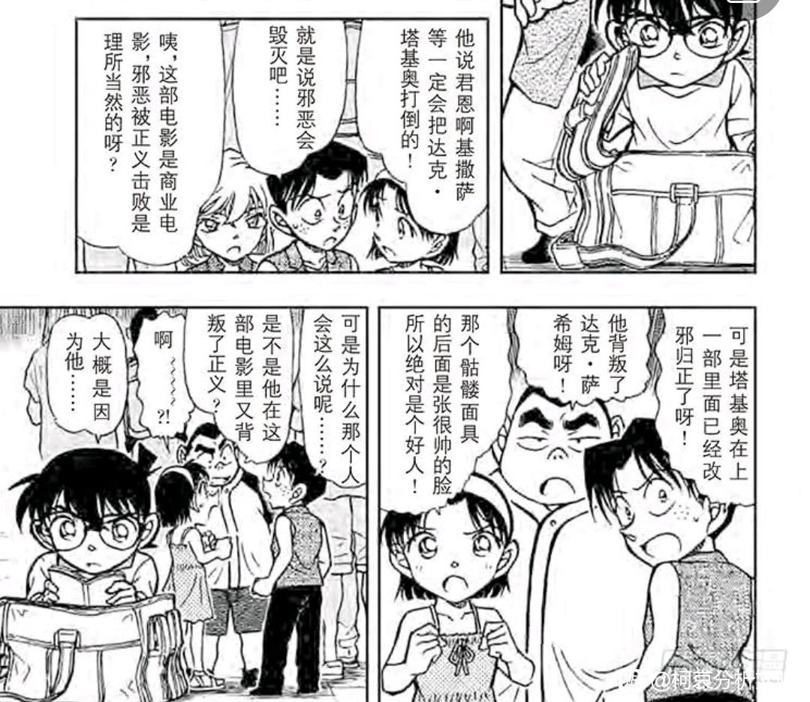
2024-04-30 03:53 | 世界上没有真理:笑死！這也太明顯，突然想到m4青山說小哀某段話完全ooc了，我猜那段話是兒玉加上去的2024-04-30 17:07 | 成冰的雨点:个人感觉一些传统的日本人眼里（我知道现在日本已经是个很开放的社会了，纯粹指有一定年纪的日本人或者思想传统的日本人），还是会偏向大和抚子，哪怕其他角色也很有人气，能带来好的收益，2024-04-30 17:08 | 成冰的雨点:回复 成冰的雨点 :但这部分传统的或者说思想偏于封建的人会下意识偏向大和抚子。当然天使lan不算真的大和抚子，但她做家务，就给了人大和抚子的错觉，那部分大男子主义的日本人会下意识对她偏颇
九、高佐的错位婚礼，柯兰的婚纱幻视
首先要明确的是，三次元里青南就没有什么正经的婚礼，直接就见家长+领证一气呵成，领证后也因为太忙而一直没有办婚礼。
不知道是为了应付编辑的要求，还是为了和动画联动（动画知道青山结婚了，专门准备了一篇ED，后来更是倾尽各种资源把高佐婚礼案动画化），青山似乎不得不在漫画中也画一场婚礼，然而青山还是有心思的，既然柯兰必须在场，那么婚礼就不能是高佐（以防有人胡乱映射），于是青山故意设计剧情，让由美成为“新娘”，由美高木显然是不可能有结果的。
为了断绝映射新兰的可能，青山甚至让本案几乎没有高佐糖，佐藤由美的互动都比高佐多，婚礼中真正的夫妻还是为了利益结婚的，【娶了她能比绑架她获得更多钱】，可谓十分恶劣，青山这是真的狠，在映射自己“婚礼”的剧情做这种活，针对的很可能是新兰的命题作文。
青山更是借助小五郎的力量夺走了小兰的花。（这花又是七朵玫瑰，小兰是不可能拥有的，她的花好像经常是康乃馨）
首先要明确的是，三次元里青南就没有什么正经的婚礼，直接就见家长+领证一气呵成，领证后也因为太忙而一直没有办婚礼。
不知道是为了应付编辑的要求，还是为了和动画联动（动画知道青山结婚了，专门准备了一篇ED，后来更是倾尽各种资源把高佐婚礼案动画化），青山似乎不得不在漫画中也画一场婚礼，然而青山还是有心思的，既然柯兰必须在场，那么婚礼就不能是高佐（以防有人胡乱映射），于是青山故意设计剧情，让由美成为“新娘”，由美高木显然是不可能有结果的。
为了断绝映射新兰的可能，青山甚至让本案几乎没有高佐糖，佐藤由美的互动都比高佐多，婚礼中真正的夫妻还是为了利益结婚的，【娶了她能比绑架她获得更多钱】，可谓十分恶劣，青山这是真的狠，在映射自己“婚礼”的剧情做这种活，针对的很可能是新兰的命题作文。
青山更是借助小五郎的力量夺走了小兰的花。（这花又是七朵玫瑰，小兰是不可能拥有的，她的花好像经常是康乃馨）
而后这一段是水无篇仅有的两处小糖之一，柯南幻想小兰穿婚纱的样子。
这一段是绝对不能理解成“柯南幻想和小兰结婚”的，本图可以清楚看到，小兰表达了强烈地想穿婚纱的愿望，甚至小兰都没有明确说是想结婚，只是说婚纱很漂亮而已。
那么相应地，柯南的幻想也不奇怪，幻想中的小兰连角都没有（和危命舞台剧相同），确实是很漂亮的，而且在幻想结束后，柯南马上又和小五郎站在同一观点了：婚纱很漂亮，但太贵了。
我之所以认为M25不计入正史，很大原因就是M25和本案几乎相反，M25是高佐婚礼，M25佐藤试图辞职而高木挽留，M25柯南直接喃喃自语说自己将来也要和小兰结婚，然后小哀还在一旁“点醒”柯南，M25柯南对安室胡乱自爆身份……所有这些剧情在漫画中完全没有出现，甚至很多都是反过来的，高佐无婚礼，高木试图辞职，柯南只是幻想而并不认为要和小兰结婚，柯南对安室十分防备……更不用说M25时间上很可能在M26之后，柯哀已经大胜的情况下，连婚纱幻视都不一定能有了。
小兰【反复提醒】才让柯南幻想自己穿婚纱的样子，然而小哀有【哥特式萝莉】，小哀本人不在场的情况下柯南胡思乱想，哪个更甜不必多说，柯南对小兰的话语是被动接受，却会主动探索小哀的不同服装风格（对于青山，画婚纱小兰他万年不变，但小哀却天天换新衣服）
这一段是绝对不能理解成“柯南幻想和小兰结婚”的，本图可以清楚看到，小兰表达了强烈地想穿婚纱的愿望，甚至小兰都没有明确说是想结婚，只是说婚纱很漂亮而已。
那么相应地，柯南的幻想也不奇怪，幻想中的小兰连角都没有（和危命舞台剧相同），确实是很漂亮的，而且在幻想结束后，柯南马上又和小五郎站在同一观点了：婚纱很漂亮，但太贵了。
我之所以认为M25不计入正史，很大原因就是M25和本案几乎相反，M25是高佐婚礼，M25佐藤试图辞职而高木挽留，M25柯南直接喃喃自语说自己将来也要和小兰结婚，然后小哀还在一旁“点醒”柯南，M25柯南对安室胡乱自爆身份……所有这些剧情在漫画中完全没有出现，甚至很多都是反过来的，高佐无婚礼，高木试图辞职，柯南只是幻想而并不认为要和小兰结婚，柯南对安室十分防备……更不用说M25时间上很可能在M26之后，柯哀已经大胜的情况下，连婚纱幻视都不一定能有了。
小兰【反复提醒】才让柯南幻想自己穿婚纱的样子，然而小哀有【哥特式萝莉】，小哀本人不在场的情况下柯南胡思乱想，哪个更甜不必多说，柯南对小兰的话语是被动接受，却会主动探索小哀的不同服装风格（对于青山，画婚纱小兰他万年不变，但小哀却天天换新衣服）
这场戏就没高佐CP什么事，这么说来，柯南幻想小兰穿上婚纱时，是否意味着小兰就像本案的由美一样，是完全的烟雾弹呢？
（作为对应，由美经典抱住高木，这姿势过于眼熟了，当然由美只是乐子人，和小兰区别还是太大，也就暂时扮演一下小兰的角色）
抛开这些不愉快的事情，本案小兰表现还是不错的，小兰和佐藤出工的场景总让我想起M4小兰的离谱失忆行为（当时是白鸟妹妹的婚礼），漫画里小兰的表现比M4要好太多了，小兰积极帮助佐藤，且反应力也很好，最后也是打倒犯人。
（小兰这个“打倒犯人后若无其事地卖萌”，在其他作品里可能是萌点，但在现实主义的柯南里就显得格格不入了，空手道攻击时杀意上脸，是很难有这种卖萌人设的，反而显得有一点点虚伪，在谜之洋馆，狼人案等几个案件都有这种问题，当然这不是大问题）
（柯南似乎对小兰的空手道很不感兴趣，每次都没什么好话，我猜是因为小兰的空手道也对自己人使用的关系，赤木量子案历历在目啊）
（M4是真的槽点满满，属于是完全不能细想的剧场版）
儿玉的小兰突出一个自身十分柔弱，全世界围着她转，其戏份基本是美美地游玩，最后时刻遇到危险让柯南抛弃一切去救。我个人认为儿玉小兰确实大女主，但是性格比漫画小兰恐怕还要更糟。相比之下，山本对小兰的刻画是可能更符合原著，恋爱脑，空手道有用但作用不大，且更愿意塑造逆境下小兰的努力（比鹦鹉好太多了）
（作为对应，由美经典抱住高木，这姿势过于眼熟了，当然由美只是乐子人，和小兰区别还是太大，也就暂时扮演一下小兰的角色）
抛开这些不愉快的事情，本案小兰表现还是不错的，小兰和佐藤出工的场景总让我想起M4小兰的离谱失忆行为（当时是白鸟妹妹的婚礼），漫画里小兰的表现比M4要好太多了，小兰积极帮助佐藤，且反应力也很好，最后也是打倒犯人。
（小兰这个“打倒犯人后若无其事地卖萌”，在其他作品里可能是萌点，但在现实主义的柯南里就显得格格不入了，空手道攻击时杀意上脸，是很难有这种卖萌人设的，反而显得有一点点虚伪，在谜之洋馆，狼人案等几个案件都有这种问题，当然这不是大问题）
（柯南似乎对小兰的空手道很不感兴趣，每次都没什么好话，我猜是因为小兰的空手道也对自己人使用的关系，赤木量子案历历在目啊）
（M4是真的槽点满满，属于是完全不能细想的剧场版）
儿玉的小兰突出一个自身十分柔弱，全世界围着她转，其戏份基本是美美地游玩，最后时刻遇到危险让柯南抛弃一切去救。我个人认为儿玉小兰确实大女主，但是性格比漫画小兰恐怕还要更糟。相比之下，山本对小兰的刻画是可能更符合原著，恋爱脑，空手道有用但作用不大，且更愿意塑造逆境下小兰的努力（比鹦鹉好太多了）
你人呢
十、【颠倒】的，是结局，还是……
进行下一个案件【颠倒的结局】，这是一件证明题案件，同时还是柯哀场的案件，我初读的时候有种奇怪的感觉，因为相比其他证明题，本案对于凶手和死者的描写，【过于丰富了】。
本案的动机与早期证明题【天下一夜祭】完全相同（就是小兰夹横沟那一案），当时那个案件并没有仔细刻画死者和凶手的关系，而最近的证明题如【珠宝强盗现行犯】或【沉默的航线】，动机同样无甚描写，这是因为证明题通常更关注手法而非动机。（动机在推理中并无作用）
唯有本案，凶手的动机极为详细，而手法相当草率且手忙脚乱，这不符合通常证明题的描述方式，究竟是为什么呢？
【提示1：本案死者准备写推理小说，而凶手拥有出版权，死者从未抱怨】
【提示2：本案被叫做“颠倒的结局”】
【提示3：不久前，青山在漫画中怒斥云粉，本案可以认为是其延续】
进行下一个案件【颠倒的结局】，这是一件证明题案件，同时还是柯哀场的案件，我初读的时候有种奇怪的感觉，因为相比其他证明题，本案对于凶手和死者的描写，【过于丰富了】。
本案的动机与早期证明题【天下一夜祭】完全相同（就是小兰夹横沟那一案），当时那个案件并没有仔细刻画死者和凶手的关系，而最近的证明题如【珠宝强盗现行犯】或【沉默的航线】，动机同样无甚描写，这是因为证明题通常更关注手法而非动机。（动机在推理中并无作用）
唯有本案，凶手的动机极为详细，而手法相当草率且手忙脚乱，这不符合通常证明题的描述方式，究竟是为什么呢？
【提示1：本案死者准备写推理小说，而凶手拥有出版权，死者从未抱怨】
【提示2：本案被叫做“颠倒的结局”】
【提示3：不久前，青山在漫画中怒斥云粉，本案可以认为是其延续】
提示结束，分享一下我的暴论：
【本案中，这位死者就是青山本人，而凶手极有可能代表了某些无视原作意志的同事】，这种事情是有先例的，最经典的自然是纽约篇，青山借角色之口嘲讽动画组【加入毫无意义的恋爱情节】，纽约篇漫画时动画大致为神秘乘客时期，小哀的台词被无情篡改，佐藤真人（的一些团队）很可能要背这个锅；无独有偶，【颠倒的结局】这一案的同期动画也是典型的佐藤真人风格，【满腹疑惑的小兰】为小兰强行加了无数戏，【神社鸟居】大砍柯哀同框，脸红全部删除，非常重要的【银杏色初恋】被任意搁置，从满月前延迟到红黑篇。
于是到了漫画里，【凶手击杀了有才华的原作者，自己接手了作品】，且【为了脱罪，选择翻转房间里所有的物品】，这里就不必对抽象的“动画组”做过多批评了，然而“为了一些别的目的，将作品中所有角色翻转”却时常出现在动画组中，最显著的就是三小只变为三傻，至于兰哀则更加明显。
【本案中，这位死者就是青山本人，而凶手极有可能代表了某些无视原作意志的同事】，这种事情是有先例的，最经典的自然是纽约篇，青山借角色之口嘲讽动画组【加入毫无意义的恋爱情节】，纽约篇漫画时动画大致为神秘乘客时期，小哀的台词被无情篡改，佐藤真人（的一些团队）很可能要背这个锅；无独有偶，【颠倒的结局】这一案的同期动画也是典型的佐藤真人风格，【满腹疑惑的小兰】为小兰强行加了无数戏，【神社鸟居】大砍柯哀同框，脸红全部删除，非常重要的【银杏色初恋】被任意搁置，从满月前延迟到红黑篇。
于是到了漫画里，【凶手击杀了有才华的原作者，自己接手了作品】，且【为了脱罪，选择翻转房间里所有的物品】，这里就不必对抽象的“动画组”做过多批评了，然而“为了一些别的目的，将作品中所有角色翻转”却时常出现在动画组中，最显著的就是三小只变为三傻，至于兰哀则更加明显。
然而，这种“翻转”，真的有用吗？
青山设计了这样的情节：一只猫乱入了案发现场，凶手必须翻转所有物品，才不至于让别人发现现场的猫毛。
【猫】在这些剧情中具有重要地位，是青南结婚的重要标志，通常来讲也和柯哀高度相关，这里我认为，【猫】即作品中的柯哀线，漫改/原创/剧场版等作品，都一定会留下原作中柯哀线的痕迹，再怎么删除也十分困难，为了掩盖柯哀线，必须把所有角色重新设计才行（儿玉就做了类似的事情，某种意义上成功了）
本案同理，犯人的掩盖计划成功了，但是最后出了岔子--故事的结局仍然掌握在死者手里，犯人由于不知道推理小说结局，马上被拆穿了计划，最终还是被警察发现并逮捕。
照映到现实，柯南的结局仍然掌握在青山本人手上，他可以放出一只又一只的“猫”，动画组（或者别的什么懒于改变的群体）一只又一只地扑灭，本质上却是徒劳的。
暴论结束，本案看似日常，实则很可能有更高的暗示，我甚至认为，一旦漫画中出现了“推理小说家”“画家”“编剧”“原作者”等等作为死者/凶手/嫌疑人之一，那就应该警惕了，青山很可能藏了一些他自己的观点。
青山设计了这样的情节：一只猫乱入了案发现场，凶手必须翻转所有物品，才不至于让别人发现现场的猫毛。
【猫】在这些剧情中具有重要地位，是青南结婚的重要标志，通常来讲也和柯哀高度相关，这里我认为，【猫】即作品中的柯哀线，漫改/原创/剧场版等作品，都一定会留下原作中柯哀线的痕迹，再怎么删除也十分困难，为了掩盖柯哀线，必须把所有角色重新设计才行（儿玉就做了类似的事情，某种意义上成功了）
本案同理，犯人的掩盖计划成功了，但是最后出了岔子--故事的结局仍然掌握在死者手里，犯人由于不知道推理小说结局，马上被拆穿了计划，最终还是被警察发现并逮捕。
照映到现实，柯南的结局仍然掌握在青山本人手上，他可以放出一只又一只的“猫”，动画组（或者别的什么懒于改变的群体）一只又一只地扑灭，本质上却是徒劳的。
暴论结束，本案看似日常，实则很可能有更高的暗示，我甚至认为，一旦漫画中出现了“推理小说家”“画家”“编剧”“原作者”等等作为死者/凶手/嫌疑人之一，那就应该警惕了，青山很可能藏了一些他自己的观点。
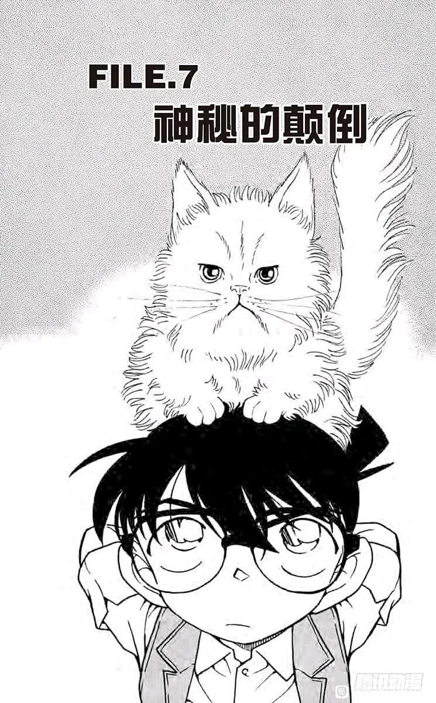
接下来进入比较轻松的部分：本案的柯哀糖。本案柯哀糖一共两处，而且都相当重量级，考虑到本案十分日常，我怀疑许多人会漏掉这两处糖。
第一处在这里，小哀已经从“看柯南表情知道已经破案”快进到“只有柯南知道的话自己会小不高兴”，并且自然而然地让柯南告诉她了，这个属性和有希子简直一模一样，我们翻回【相似的公主】，会发现小哀与有希子的行为模式完全一致，甚至结果都是一样的，柯南一脸不情愿地告诉了对方（有希子多一个拳击小哀则是和少侦一起听，且保持半月眼）
这种相似性肯定是青山一早就设计好的，整篇漫画里有希子和小哀的相似处能够找出一大堆，根本数不过来，旁边还放了和叶静华相似的辅助证明。
小哀这里明显是有种对柯南的探索欲，而且相当傲娇，这里似乎是第一次，之后柯哀这类互动不要太多。
柯南对此的反应即是第二个柯哀糖，当他最后向小哀解释完，柯南借助案情内容，故意露出了【标志性的表情】，甚至还脸红了（脸红代表柯南不是在讲案件，事实上他也没有关于牙齿的证据，这里柯南就是故意对小哀咧嘴笑的），正常来讲这种表情至少得配点M26那种生死之交，或者狗狗案那种超温馨的场面吧，然而柯南一心想向小哀开屏，遭到了“嫌弃的表情”我始终认为，红黑篇就是一整套柯南追求小哀的过程（尽管他自己不一定注意到），故意对她咧嘴笑，什么屏都要开，不是追求是什么。
第一处在这里，小哀已经从“看柯南表情知道已经破案”快进到“只有柯南知道的话自己会小不高兴”，并且自然而然地让柯南告诉她了，这个属性和有希子简直一模一样，我们翻回【相似的公主】，会发现小哀与有希子的行为模式完全一致，甚至结果都是一样的，柯南一脸不情愿地告诉了对方（有希子多一个拳击
小哀则是和少侦一起听，且保持半月眼）这种相似性肯定是青山一早就设计好的，整篇漫画里有希子和小哀的相似处能够找出一大堆，根本数不过来，旁边还放了和叶静华相似的辅助证明。
小哀这里明显是有种对柯南的探索欲，而且相当傲娇，这里似乎是第一次，之后柯哀这类互动不要太多。
柯南对此的反应即是第二个柯哀糖，当他最后向小哀解释完，柯南借助案情内容，故意露出了【标志性的表情】，甚至还脸红了（脸红代表柯南不是在讲案件，事实上他也没有关于牙齿的证据，这里柯南就是故意对小哀咧嘴笑的），正常来讲这种表情至少得配点M26那种生死之交，或者狗狗案那种超温馨的场面吧，然而柯南一心想向小哀开屏，遭到了“嫌弃的表情”
我始终认为，红黑篇就是一整套柯南追求小哀的过程（尽管他自己不一定注意到），故意对她咧嘴笑，什么屏都要开，不是追求是什么。
最后本案还映射了一个我自己提出来，还很不完善的理论：
【棒球网球错位论】
这个理论和樱雪论没什么不同（但是更弱），其核心内容是【漫画里，樱花和雪花的画法很一致，独立出现时让人分不清樱花还是雪花】，衍生之后有各种理论，如五角/六角理论等等。
同理，【棒球和网球在漫画中也是很难分辨的】，花纹几乎一致而没有颜色上的不同，并且漫画中，【小兰只打过网球，小哀只打过棒球】，这两种运动可以说是名柯中出场仅次于足球的运动了，都有大量的描写，棒球有【甲子园奇迹】网球有【伦敦篇】。
网球初登场于【疑惑的辣味咖喱】，出现时就和身体暴露相关，园子就建议小兰穿短裙打网球，伦敦篇草地女王虽然指代小哀但并不是小哀本人（有人认为格拉斯的对手指代小兰），列车篇后小兰再次打网球。（和安室一起，打得十分暴力），网球运动似乎拥有小兰身上的一些特征，尤其是擦边和暴力。
棒球初登场于【恋爱物语5】，【恰巧就是辣味咖喱前一案】（和黑白国际象棋一样，小哀的特征在小兰之前，白棋先行），给小五郎空降了棒球高手的设定。随后【甲子园】为棒球定性，坚强，毅力，信赖……基本什么好词都往棒球身上靠了，青山本人也属于棒球球迷。小五郎与小哀同为青山嘴替，而服部有“平为哀影”的说法，二人棒球水平都很高。在OVA12（最后一部OVA）中，青山为编剧，再次将棒球与小哀联系在一起。
在【沉默的航线】中，英理想要棒球运动员的签名，但小兰擅自使用了网球进行替换，遭到小五郎的拒绝，最终网球计划也没成功，小五郎早已准备好真正的棒球。
这个理论大家以为如何？可以图一乐，樱雪论M27依然有少量暗示，但棒球和网球恐怕很难再出镜了。
【棒球网球错位论】
这个理论和樱雪论没什么不同（但是更弱），其核心内容是【漫画里，樱花和雪花的画法很一致，独立出现时让人分不清樱花还是雪花】，衍生之后有各种理论，如五角/六角理论等等。
同理，【棒球和网球在漫画中也是很难分辨的】，花纹几乎一致而没有颜色上的不同，并且漫画中，【小兰只打过网球，小哀只打过棒球】，这两种运动可以说是名柯中出场仅次于足球的运动了，都有大量的描写，棒球有【甲子园奇迹】网球有【伦敦篇】。
网球初登场于【疑惑的辣味咖喱】，出现时就和身体暴露相关，园子就建议小兰穿短裙打网球，伦敦篇草地女王虽然指代小哀但并不是小哀本人（有人认为格拉斯的对手指代小兰），列车篇后小兰再次打网球。（和安室一起，打得十分暴力），网球运动似乎拥有小兰身上的一些特征，尤其是擦边和暴力。
棒球初登场于【恋爱物语5】，【恰巧就是辣味咖喱前一案】（和黑白国际象棋一样，小哀的特征在小兰之前，白棋先行），给小五郎空降了棒球高手的设定。随后【甲子园】为棒球定性，坚强，毅力，信赖……基本什么好词都往棒球身上靠了，青山本人也属于棒球球迷。小五郎与小哀同为青山嘴替，而服部有“平为哀影”的说法，二人棒球水平都很高。在OVA12（最后一部OVA）中，青山为编剧，再次将棒球与小哀联系在一起。
在【沉默的航线】中，英理想要棒球运动员的签名，但小兰擅自使用了网球进行替换，遭到小五郎的拒绝，最终网球计划也没成功，小五郎早已准备好真正的棒球。
这个理论大家以为如何？可以图一乐，樱雪论M27依然有少量暗示，但棒球和网球恐怕很难再出镜了。
十一、暗流涌动的柯兰博弈：红手帕案与青岚案
观看本篇时，首先要明确一件事情：【小兰怀疑柯南】与【小兰怀疑柯南是新一】两件事是不冲突的，手机篇之后，小兰虽然不敢再怀疑柯南是新一，但她仍然可以怀疑柯南本人的不寻常，而且这种怀疑往往十分恶意，带有明显的窥探秘密的味道。
而【园子的红手帕】一案就启动了小兰的怀疑，大部分人会关注京极真的超人行为，但本案同样隐藏了相当关键的信息：【小兰正在逐步窥探柯南的秘密，尤其是他的道具来源】。
窥探的结果是，柯南最有力的战斗武器（足球腰带）被小兰获知，此前小兰似乎只知道侦探徽章可以通信，满月后知道了柯哀眼镜可以互相追踪，而本案开始柯南更多装备暴露，之后的基德偷画案，麻醉针和变声器（最核心的两件装备）也几乎暴露了。
这种窥探，最终必然导致柯南＝新一的秘密暴露，一旦小兰发现麻醉针和变声器，那么柯南的把戏也就完全被拆穿了。
挡在小兰面前的，并不是柯南多强力的隐瞒，而是她自己停下的脚步。
观看本篇时，首先要明确一件事情：【小兰怀疑柯南】与【小兰怀疑柯南是新一】两件事是不冲突的，手机篇之后，小兰虽然不敢再怀疑柯南是新一，但她仍然可以怀疑柯南本人的不寻常，而且这种怀疑往往十分恶意，带有明显的窥探秘密的味道。
而【园子的红手帕】一案就启动了小兰的怀疑，大部分人会关注京极真的超人行为，但本案同样隐藏了相当关键的信息：【小兰正在逐步窥探柯南的秘密，尤其是他的道具来源】。
窥探的结果是，柯南最有力的战斗武器（足球腰带）被小兰获知，此前小兰似乎只知道侦探徽章可以通信，满月后知道了柯哀眼镜可以互相追踪，而本案开始柯南更多装备暴露，之后的基德偷画案，麻醉针和变声器（最核心的两件装备）也几乎暴露了。
这种窥探，最终必然导致柯南＝新一的秘密暴露，一旦小兰发现麻醉针和变声器，那么柯南的把戏也就完全被拆穿了。
挡在小兰面前的，并不是柯南多强力的隐瞒，而是她自己停下的脚步。
（动画中园子的态度十分恶劣，指使柯南去找红手帕，漫画中园子态度很好）
故事一开始，兰园和柯南来到这个电视剧取景地，并再次强调了小兰重要的业余爱好“看爱情连续剧”，此前在【雪山案】中小兰就为了看剧试图蹭别人的电视，纽约篇时小兰宁可不复习考试也要看电视，这里又再次强调了这一特征，我严重怀疑小兰之所以如此恋爱脑，她看的这一大堆电视剧恐怕起到很大作用。
果不其然，小兰立刻相信了园子编的一套说辞，什么“你和新一约好穿红衣服见面，结果新一被另一个红衣女孩吸引了……”，这里从园子的表情可以看出来，园子这番话纯粹是拉小兰一起上山的话术，但小兰却能信以为真。
此前小兰虽然多次YY新一出轨，但除了赤木量子有“证词”，其余时候柯南并未发现小兰在YY（例如手机篇），这里恐怕是柯南第一次近距离感受小兰毫无逻辑的恋爱脑，【就这样当真了？】是柯南的吐槽，他终于彻底地发现，在小兰心中，新一是“不可靠的”随时出轨的人设，没有信任，不需要证据，小兰就能凭空相信这段虚假剧情。
并且小兰开启了砸盘，这种不礼貌的招牌动作将伴随小兰直到休学篇，精妙地体现了小兰的恋爱脑。
【漫画里，只有小哀被朱蒂称为“小红帽”是明确穿红色，而小兰不穿红色相当于否认M1剧情。园子编造的剧情里，这位女生的眼睛是明显的赤井家族风格，发色也为浅色，仅有发型有所不同，小兰的怀疑虽然是凭空的，但是园子的剧情似乎正在发生呢。】
故事一开始，兰园和柯南来到这个电视剧取景地，并再次强调了小兰重要的业余爱好“看爱情连续剧”，此前在【雪山案】中小兰就为了看剧试图蹭别人的电视，纽约篇时小兰宁可不复习考试也要看电视，这里又再次强调了这一特征，我严重怀疑小兰之所以如此恋爱脑，她看的这一大堆电视剧恐怕起到很大作用。
果不其然，小兰立刻相信了园子编的一套说辞，什么“你和新一约好穿红衣服见面，结果新一被另一个红衣女孩吸引了……”，这里从园子的表情可以看出来，园子这番话纯粹是拉小兰一起上山的话术，但小兰却能信以为真。
此前小兰虽然多次YY新一出轨，但除了赤木量子有“证词”，其余时候柯南并未发现小兰在YY（例如手机篇），这里恐怕是柯南第一次近距离感受小兰毫无逻辑的恋爱脑，【就这样当真了？】是柯南的吐槽，他终于彻底地发现，在小兰心中，新一是“不可靠的”随时出轨的人设，没有信任，不需要证据，小兰就能凭空相信这段虚假剧情。
并且小兰开启了砸盘，这种不礼貌的招牌动作将伴随小兰直到休学篇，精妙地体现了小兰的恋爱脑。
【漫画里，只有小哀被朱蒂称为“小红帽”是明确穿红色，而小兰不穿红色相当于否认M1剧情。园子编造的剧情里，这位女生的眼睛是明显的赤井家族风格，发色也为浅色，仅有发型有所不同，小兰的怀疑虽然是凭空的，但是园子的剧情似乎正在发生呢。】
2024-05-03 10:58 | 贴吧用户_GyGQUDN:琴酒也说过雪莉喜欢红色2024-05-03 17:40 | 发疯的法师:回复 贴吧用户_GyGQUDN :毕竟都是血的颜色
随后柯南被血味吸引，不顾小兰劝阻，马上跑去找尸体，不慎绊倒了，小兰的反应是【看吧！因为你跑太快了…】
这里就不得不提及佑兰的含金量了，在上一个瑛佑案件里有一模一样的剧情，瑛佑不听劝阻非要爬树，结果摔倒在地，小兰态度区别十分明显，对柯南是抱怨，对瑛佑是关心。
青山绝对是有用心做佑兰线的，这种对比本可以没有，可以让小兰也对柯南说一句“没事吧”，然而他就是画出来这样的对比，小兰最终的归宿还真好猜。
这里就不得不提及佑兰的含金量了，在上一个瑛佑案件里有一模一样的剧情，瑛佑不听劝阻非要爬树，结果摔倒在地，小兰态度区别十分明显，对柯南是抱怨，对瑛佑是关心。
青山绝对是有用心做佑兰线的，这种对比本可以没有，可以让小兰也对柯南说一句“没事吧”，然而他就是画出来这样的对比，小兰最终的归宿还真好猜。
小兰在这个案件中，受到了若干刺激：
首先是园子，真园和新兰一样是异地，但真园感情显然很好，虽然京极真出于自尊，不愿意向园子透露比赛消息（和新兰有相似之处），但一旦得知京极真的比赛情况，园子立刻喜形于色。
京极真对园子的隐瞒是合理而光明正大的，但新兰呢？小兰本身就希望看见新一输，那么新一的隐瞒就绝不是“怕被小兰看见输”，这让小兰产生了强烈的【被隐瞒感】。
就在此时，为了查案柯南也跑了，表面理由更是离谱，【要给元太买礼物，已经叫阿笠博士来接了】，这个理由和冲击篇没有任何不同，蹩脚得无可救药（冲击篇是下着雨要和博士去多罗碧加），冲击篇时小兰就已经有很强的【被隐瞒感】了，当时是小哀出面，强行打消小兰的疑虑，但现在怎么又来这一套？
小兰被新一隐瞒，被柯南隐瞒，甚至柯南为了找线索，和园子聊得都比她多，堂而皇之对小兰进行隐瞒，她再也受不了了。
小兰开始行动了，这一行动将超乎所有人的预料……
首先是园子，真园和新兰一样是异地，但真园感情显然很好，虽然京极真出于自尊，不愿意向园子透露比赛消息（和新兰有相似之处），但一旦得知京极真的比赛情况，园子立刻喜形于色。
京极真对园子的隐瞒是合理而光明正大的，但新兰呢？小兰本身就希望看见新一输，那么新一的隐瞒就绝不是“怕被小兰看见输”，这让小兰产生了强烈的【被隐瞒感】。
就在此时，为了查案柯南也跑了，表面理由更是离谱，【要给元太买礼物，已经叫阿笠博士来接了】，这个理由和冲击篇没有任何不同，蹩脚得无可救药（冲击篇是下着雨要和博士去多罗碧加），冲击篇时小兰就已经有很强的【被隐瞒感】了，当时是小哀出面，强行打消小兰的疑虑，但现在怎么又来这一套？
小兰被新一隐瞒，被柯南隐瞒，甚至柯南为了找线索，和园子聊得都比她多，堂而皇之对小兰进行隐瞒，她再也受不了了。
小兰开始行动了，这一行动将超乎所有人的预料……
小兰 使用技能 假传圣旨！
先看小兰的动机，她自己说【柯南一定会因为好奇而让自己处于危险之中】，但这个理由是明显的后补理由，是到了山上之后小兰才对园子说的，须知小兰并不清楚山上有黑社会，不和园子通气也不和博士通气，说是要救柯南，动作上却只是到博士与柯南约定的地点来而已。
小兰的真正理由就是窥探柯南的秘密，尤其是柯南和博士的秘密，“为柯南安全着想”只是一个体面点说法，由于心虚，小兰不能直接向博士表达担忧，于是她采用了假传圣旨的做法，手法上相当老辣。
【我和柯南商量过了】先入为主给博士制造错误印象。
【我和园子也坐博士车回去】先斩后奏，让园子毫无反抗能力。
【能不能告诉会面地方？】这里其实聊爆了，都和柯南聊了，地点怎么还不知道，但是博士比较好骗，加之小兰铺垫了话术，成功让博士说出了地点。
【和柯南聊天时柯南没电了】算是对前一句聊爆的补充，而且相当恶毒，因为这阻止了博士再次向柯南确认！可谓处心积虑。
整段对话就没一句真的，小兰为了窥探柯南的秘密，谋划十分得当，而柯南一无所知，在群马的红叶树林中，柯兰的博弈正式展开……
先看小兰的动机，她自己说【柯南一定会因为好奇而让自己处于危险之中】，但这个理由是明显的后补理由，是到了山上之后小兰才对园子说的，须知小兰并不清楚山上有黑社会，不和园子通气也不和博士通气，说是要救柯南，动作上却只是到博士与柯南约定的地点来而已。
小兰的真正理由就是窥探柯南的秘密，尤其是柯南和博士的秘密，“为柯南安全着想”只是一个体面点说法，由于心虚，小兰不能直接向博士表达担忧，于是她采用了假传圣旨的做法，手法上相当老辣。
【我和柯南商量过了】先入为主给博士制造错误印象。
【我和园子也坐博士车回去】先斩后奏，让园子毫无反抗能力。
【能不能告诉会面地方？】这里其实聊爆了，都和柯南聊了，地点怎么还不知道，但是博士比较好骗，加之小兰铺垫了话术，成功让博士说出了地点。
【和柯南聊天时柯南没电了】算是对前一句聊爆的补充，而且相当恶毒，因为这阻止了博士再次向柯南确认！可谓处心积虑。
整段对话就没一句真的，小兰为了窥探柯南的秘密，谋划十分得当，而柯南一无所知，在群马的红叶树林中，柯兰的博弈正式展开……
2024-05-03 05:54 | 成冰的雨点:因为青山的措辞和技巧过于温和，当初第一次看时都没意识到天使lan一句实话没有。但一旦意识到，这种为了满足自己而不顾他人危险的方式（就算不知道有坏人，黑夜上山本身就不是安全的事）就让人细思极恐。2024-05-04 22:07 | 即将02的废物月:回复 成冰的雨点 :“她说的事情几乎都是虚构的”
我们先来看柯南原本的计划。
柯南本身是知道森林里有若干可疑人物的，只是没想到有那么多，他原本的计划应该是钓鱼犯人，随后趁着夜色迅速逃离，坐上来接应的博士的车，摇操哥过来就可以一网打尽了。
犯罪团伙人虽然很多，但也只是增加了柯南逃跑的难度，趁着夜色柯南仍然可以逃离，身上的装备也足够柯南制服几个人，所以这里柯南是紧张而不是害怕。
不幸的是，小兰出于自己的目的，【带着园子】乱入了这个危险场合，这下柯南的计划完全乱套了，两个女高中生显然难以隐蔽（不像柯南躲在树上本身具有潜行优势），加之园子没有武力值，局势立刻完蛋，而犯人们更是先手攻击小兰。
不得已，柯南使用了足球腰带。一般而言柯南是绝不会向小兰暴露自己的装备情况的，追踪明美时柯南编造谎言没有暴露眼镜，每月礼物案时柯南使用了球鞋，也没有暴露，只有生死攸关了才会暴露，例如满月眼镜，本案足球，这是个危险的信号，小兰很容易就能想到，【阿笠博士】是这些装备的制造者，柯南离暴露又近了一分。
柯南本身是知道森林里有若干可疑人物的，只是没想到有那么多，他原本的计划应该是钓鱼犯人，随后趁着夜色迅速逃离，坐上来接应的博士的车，摇操哥过来就可以一网打尽了。
犯罪团伙人虽然很多，但也只是增加了柯南逃跑的难度，趁着夜色柯南仍然可以逃离，身上的装备也足够柯南制服几个人，所以这里柯南是紧张而不是害怕。
不幸的是，小兰出于自己的目的，【带着园子】乱入了这个危险场合，这下柯南的计划完全乱套了，两个女高中生显然难以隐蔽（不像柯南躲在树上本身具有潜行优势），加之园子没有武力值，局势立刻完蛋，而犯人们更是先手攻击小兰。
不得已，柯南使用了足球腰带。一般而言柯南是绝不会向小兰暴露自己的装备情况的，追踪明美时柯南编造谎言没有暴露眼镜，每月礼物案时柯南使用了球鞋，也没有暴露，只有生死攸关了才会暴露，例如满月眼镜，本案足球，这是个危险的信号，小兰很容易就能想到，【阿笠博士】是这些装备的制造者，柯南离暴露又近了一分。
小兰通过【假传圣旨】，终于知道了足球腰带的存在，但代价是什么呢？
代价是他们陷入了绝望的处境，如果真像小兰说的，是“担心柯南的安全”，那这场战斗小兰根本不应该带园子过来，如果只有小兰，还有夺路而逃的可能，带着园子则完全不可能逃跑了。
小兰需要面对五十个匪徒，事实上小兰的空手道至多对抗5个就受伤了，柯南也只能踢石头而已（柯南既不敢也不愿使用麻醉针），简直就像满月篇翻版，小兰入场了但没有什么用，最终是秀一/京极真来兜底。
故事的最后，没有任何人追究小兰的责任，博士以为柯兰谈好了，柯南以为小兰是担心他才过来（都不知道假传圣旨的事情），唯一知情的园子则谈恋爱去了，小兰因为自己的某种窥探欲望而陷入危险，却绝不可能意识到自己的责任，继续无知无觉地生活在别人的保护中。
小兰毕竟成功了，她知道了足球腰带，接着她又要对准柯南的下一个目标装备了。
柯南尽管不知道小兰的假传圣旨，但他知道装备的暴露，于是接下来柯南必须实行一个摆脱嫌疑的计划。
下一案，基德偷画案（下称青岚案），柯兰博弈继续进行。
代价是他们陷入了绝望的处境，如果真像小兰说的，是“担心柯南的安全”，那这场战斗小兰根本不应该带园子过来，如果只有小兰，还有夺路而逃的可能，带着园子则完全不可能逃跑了。
小兰需要面对五十个匪徒，事实上小兰的空手道至多对抗5个就受伤了，柯南也只能踢石头而已（柯南既不敢也不愿使用麻醉针），简直就像满月篇翻版，小兰入场了但没有什么用，最终是秀一/京极真来兜底。
故事的最后，没有任何人追究小兰的责任，博士以为柯兰谈好了，柯南以为小兰是担心他才过来（都不知道假传圣旨的事情），唯一知情的园子则谈恋爱去了，小兰因为自己的某种窥探欲望而陷入危险，却绝不可能意识到自己的责任，继续无知无觉地生活在别人的保护中。
小兰毕竟成功了，她知道了足球腰带，接着她又要对准柯南的下一个目标装备了。
柯南尽管不知道小兰的假传圣旨，但他知道装备的暴露，于是接下来柯南必须实行一个摆脱嫌疑的计划。
下一案，基德偷画案（下称青岚案），柯兰博弈继续进行。
2024-05-03 05:55 | 成冰的雨点:确实，天使lan从来没有付出过代价，自然也从来不会吸取教训
进入青岚案，这是一个非传统基德案件（实际上是凶杀案证明题），漫画中提到，这是柯南和基德的“第三次公开对决”，当然这里并不能佐证M8是否进入正史。（M8虽然基德也有预告函，但并没有记者过来，且最后开飞机时也无人知晓基德和柯南的互动）
可以看到，柯南【基德杀手】这一身份已经传扬出去了，这对于试图窥探柯南秘密的小兰而言，无疑是重要的切口。和其他人一样，小兰也认可柯南的基德杀手身份，但是本案小兰的表现非常古怪，她一而再再而三地妨碍柯南，甚至用“这个时间小孩子该睡觉了”这种毫无逻辑的理由不让柯南查案。
小兰面临着困境：她知道柯南有秘密，却不知道秘密是什么，即使想查也无从下手，于是她只好大力出奇迹，全程禁锢柯南总可以吧。
对柯南而言情况十分糟糕，又要做证明题又要抓基德还得防小兰，柯南于是采取了相当极端的措施。
可以看到，柯南【基德杀手】这一身份已经传扬出去了，这对于试图窥探柯南秘密的小兰而言，无疑是重要的切口。和其他人一样，小兰也认可柯南的基德杀手身份，但是本案小兰的表现非常古怪，她一而再再而三地妨碍柯南，甚至用“这个时间小孩子该睡觉了”这种毫无逻辑的理由不让柯南查案。
小兰面临着困境：她知道柯南有秘密，却不知道秘密是什么，即使想查也无从下手，于是她只好大力出奇迹，全程禁锢柯南总可以吧。
对柯南而言情况十分糟糕，又要做证明题又要抓基德还得防小兰，柯南于是采取了相当极端的措施。
2024-05-03 05:58 | 成冰的雨点:天使lan就是个世俗的喜欢八卦别人隐私的爱好者而已，而且八卦了别人隐私还要大嘴巴说出去，或者拿捏别人——如果把名字隐去，这种形象简直是最讨人厌那种的吧！就因为它是天使lan就被盖上那么多光圈
本案凶手嫁祸基德，基德于是乔装高木进入现场，【当场被佐藤怀疑】，随后的互动里，基德扮演的高木频繁出错，几乎要被佐藤揭穿，佐藤也对这个可疑的高木十分戒备。
（对比某人，明知是基德也能贴上去）
这里基德表现得太用力了，佐藤毕竟是鲁邦的粉丝，并不讨厌基德（该设定于M11彻底落实，M11虽然不一定进入正史，但佐藤这一部分肯定是得到保留了）
（对比某人，明知是基德也能贴上去）
这里基德表现得太用力了，佐藤毕竟是鲁邦的粉丝，并不讨厌基德（该设定于M11彻底落实，M11虽然不一定进入正史，但佐藤这一部分肯定是得到保留了）
柯南的极端措施如下：
本案柯南两次从小兰眼皮底下逃走去查案，而且十分明显（分镜中上一秒柯南都还在，下一秒就没了），都被小兰立刻发现，小兰于是马上追回柯南，并大大加强了对柯南的怀疑。
【柯南要的就是这个效果，让小兰在极端怀疑的情况下找不到任何证据，最终放弃对柯南装备的窥探】
（危命/手机篇，柯南都是用了这个套路）
第一次追回时小兰已经相当生气了，她不再承认柯南“基德杀手”的地位，直接用拎着柯南一副这种相当暴力的手段带走柯南，并勒令其去睡觉，可是柯南仍然第二次逃跑了。
第二次追回时，柯南必须极端小心，此时他正在做的事情十分危险，有可能直接翻车。
（前情提要，小兰知道柯南的手表可以打开，眼镜有追踪功能，有足球腰带，只有蝴蝶结是小兰不知道的，要等到最新话白马才向小兰挑明蝴蝶结是“麦克风”）
本案柯南两次从小兰眼皮底下逃走去查案，而且十分明显（分镜中上一秒柯南都还在，下一秒就没了），都被小兰立刻发现，小兰于是马上追回柯南，并大大加强了对柯南的怀疑。
【柯南要的就是这个效果，让小兰在极端怀疑的情况下找不到任何证据，最终放弃对柯南装备的窥探】
（危命/手机篇，柯南都是用了这个套路）
第一次追回时小兰已经相当生气了，她不再承认柯南“基德杀手”的地位，直接用拎着柯南一副这种相当暴力的手段带走柯南，并勒令其去睡觉，可是柯南仍然第二次逃跑了。
第二次追回时，柯南必须极端小心，此时他正在做的事情十分危险，有可能直接翻车。
（前情提要，小兰知道柯南的手表可以打开，眼镜有追踪功能，有足球腰带，只有蝴蝶结是小兰不知道的，要等到最新话白马才向小兰挑明蝴蝶结是“麦克风”）
小兰第二次追回柯南，这次她选择了直接禁锢，但是柯南进行了一个相当极限的操作：
【他在小兰怀了，卡了视角射击小五郎，然后再卡视角用蝴蝶结变声】
此举风险巨大，不单因为小兰在场，要知道现场警察里可是有佐藤的，一般来讲柯南不会在佐藤面前使用麻醉针（佐藤好奇心比较高，很容易发现麻醉真相），柯南这里就赌佐藤注意力在假高木身上，从而实行自己的计划。
于是在柯南被禁锢的情况下，沉睡的小五郎出现了，即使瑛佑后来怀疑柯南代打，他也不可能再从小兰这里获得任何证据（正如后来的世良一样）
瑛佑：小五郎沉睡时，柯南是不是躲起来了？
小兰：没有啊，上次我把柯南抱得紧紧的，但是小五郎还是沉睡了。
于是柯南通过极限操作，保护了自己最重要的秘密，当然足球腰带肯定是守不住了，柯南接下来开始在小兰面前光明正大使用足球腰带踢击基德。
（基德：6）
这次【起于窥探，终于欺骗】的柯兰博弈就此结束，如果没有这一案柯南的操作，下次瑛佑登场他恐怕会被当场揭穿。下一次小五郎沉睡时，柯南【安排瑛佑和小兰离开去照顾小孩】，目的正是为了让佑兰交换情报，从而欺骗瑛佑让他无法识破核心诡计。
换而言之，如果有一天柯南在瑛佑面前射击园子，那就代表瑛佑获得了柯南的信任（即【卡拉OK厅的死角】），至于小兰则从来不在可信范围内。
【他在小兰怀了，卡了视角射击小五郎，然后再卡视角用蝴蝶结变声】
此举风险巨大，不单因为小兰在场，要知道现场警察里可是有佐藤的，一般来讲柯南不会在佐藤面前使用麻醉针（佐藤好奇心比较高，很容易发现麻醉真相），柯南这里就赌佐藤注意力在假高木身上，从而实行自己的计划。
于是在柯南被禁锢的情况下，沉睡的小五郎出现了，即使瑛佑后来怀疑柯南代打，他也不可能再从小兰这里获得任何证据（正如后来的世良一样）
瑛佑：小五郎沉睡时，柯南是不是躲起来了？
小兰：没有啊，上次我把柯南抱得紧紧的，但是小五郎还是沉睡了。
于是柯南通过极限操作，保护了自己最重要的秘密，当然足球腰带肯定是守不住了，柯南接下来开始在小兰面前光明正大使用足球腰带踢击基德。
（基德：6）
这次【起于窥探，终于欺骗】的柯兰博弈就此结束，如果没有这一案柯南的操作，下次瑛佑登场他恐怕会被当场揭穿。下一次小五郎沉睡时，柯南【安排瑛佑和小兰离开去照顾小孩】，目的正是为了让佑兰交换情报，从而欺骗瑛佑让他无法识破核心诡计。
换而言之，如果有一天柯南在瑛佑面前射击园子，那就代表瑛佑获得了柯南的信任（即【卡拉OK厅的死角】），至于小兰则从来不在可信范围内。
cy
十二、wink与初遇：1年B班大作战
本篇虽然只有短短两话，但信息量十分巨大，人物塑造也相当优秀（尤其小林老师，其认真负责而又颇有玩心的教师形象进一步完善，此时青山肯定想好白鸟归林了），新出场的东尾玛丽亚和坂本琢马的形象也相当完善（玛利亚更是secret，目前几乎变成主线人物了），我个人认为，1年B班大作战很可能是青山画得最好的柯南短篇故事。
本案另一个亮点是柯哀互动，柯南的wink从此只为小哀而使用。同时，本案青山也埋藏了初遇线索，并借小哀之口不经意地说出。
本案开头，雨天，按照【隐秘酒厂成员出登场必下雨】规律来看，东尾玛丽亚很可能与组织有关（误），这里的分镜十分显眼，学校的窗户天然将柯哀与三小只分开，而元太的手则独立占据一个分镜并cos若狭，如果说手机篇时青山只是大概设计了柯哀初遇的时间（13年前圣诞），那么本案无疑表明青山开始逐渐设计初遇的剧情了，需要有明美，有负责任的“老师角色”（后定为若狭），甚至事件本身就是柯南与小哀的分离。
而之后又有了这样的剧情：【柯南写“女”的时候笔画是不对的】，该剧情同样没有任何意义，却暗示读者：【目前柯南遭遇女性角色的“顺序”是不对的。】
带着这一思路重看【1年B班大作战】，我们将发掘更多隐藏剧情。
本篇虽然只有短短两话，但信息量十分巨大，人物塑造也相当优秀（尤其小林老师，其认真负责而又颇有玩心的教师形象进一步完善，此时青山肯定想好白鸟归林了），新出场的东尾玛丽亚和坂本琢马的形象也相当完善（玛利亚更是secret，目前几乎变成主线人物了），我个人认为，1年B班大作战很可能是青山画得最好的柯南短篇故事。
本案另一个亮点是柯哀互动，柯南的wink从此只为小哀而使用。同时，本案青山也埋藏了初遇线索，并借小哀之口不经意地说出。
本案开头，雨天，按照【隐秘酒厂成员出登场必下雨】规律来看，东尾玛丽亚很可能与组织有关（误），这里的分镜十分显眼，学校的窗户天然将柯哀与三小只分开，而元太的手则独立占据一个分镜并cos若狭，如果说手机篇时青山只是大概设计了柯哀初遇的时间（13年前圣诞），那么本案无疑表明青山开始逐渐设计初遇的剧情了，需要有明美，有负责任的“老师角色”（后定为若狭），甚至事件本身就是柯南与小哀的分离。
而之后又有了这样的剧情：【柯南写“女”的时候笔画是不对的】，该剧情同样没有任何意义，却暗示读者：【目前柯南遭遇女性角色的“顺序”是不对的。】
带着这一思路重看【1年B班大作战】，我们将发掘更多隐藏剧情。
2024-05-04 01:08 | 柑橘香水💞:厉害了，的确，先不说写错笔顺这个情节放柯南身上有没有必要，再者写错笔顺这个情节可以有，但是没必要正好是“女”字，既然画出来了，说明有意刻画了
小林老师这里wink一下然后就走了，留下一个谜题，小哀评价为“挺可爱的不是吗？”
说者无意听者有心，柯南已经听到了“wink很可爱”，他又不是没对小哀wink过（眼镜超人），于是接下来柯南将在本案疯狂对小哀wink
这里值得注意的是，小哀第一反应是【这是5分制的成绩】，小哀显然是从明美的渠道获取这个信息的，但她自己并没有上过帝丹小学因此不清楚现在成绩评定方式的变化。
那么，小哀是怎么获得成绩单的呢？
A、听明美说的。
B、看见了明美的家校联系册，这个成绩单就是明美的真实成绩单。
A选项可能性其实非常低，志保与明美经常聊天不假，但很难聊到明美小学的成绩吧？（小哀连明美读哪一所小学都不知道！）更何况小哀的这个理由其实是被步美追问后的后补理由，真实性不高。
所以答案只有B，也就是小志保亲眼看见过明美的“家校联系册”，当时宫野夫妇都已经死亡，监护人不知道是谁，很可能是若狭，而这再次暗示【明美在帝丹小学读书】和【小志保这段时间都在米花】两个推论。
说者无意听者有心，柯南已经听到了“wink很可爱”，他又不是没对小哀wink过（眼镜超人），于是接下来柯南将在本案疯狂对小哀wink
这里值得注意的是，小哀第一反应是【这是5分制的成绩】，小哀显然是从明美的渠道获取这个信息的，但她自己并没有上过帝丹小学因此不清楚现在成绩评定方式的变化。
那么，小哀是怎么获得成绩单的呢？
A、听明美说的。
B、看见了明美的家校联系册，这个成绩单就是明美的真实成绩单。
A选项可能性其实非常低，志保与明美经常聊天不假，但很难聊到明美小学的成绩吧？（小哀连明美读哪一所小学都不知道！）更何况小哀的这个理由其实是被步美追问后的后补理由，真实性不高。
所以答案只有B，也就是小志保亲眼看见过明美的“家校联系册”，当时宫野夫妇都已经死亡，监护人不知道是谁，很可能是若狭，而这再次暗示【明美在帝丹小学读书】和【小志保这段时间都在米花】两个推论。
这里还可以分析下明美的各科成绩：
明美的音乐是1分这和小新一一模一样，我一直觉得奇怪，新一的妈妈是大明星有希子，他本人怎么可能变成音痴的？那么如果有某种暴论，小时候（4岁之前）小新一经常和明美志保一起玩，不幸被明美传染了音痴能力，这就解释得通了。
（安室也被传染了，于是他苦练乐器，成功避免了开口唱歌）
其他成绩也完全符合明美，体育3平均水平，义工4因为明美做好事时别人通常不知道，算数5和国语4说明明美可以留下相当复杂而有逻辑的暗号，理科2表明明美在物理化学方面天赋很低（甚至没有意识到琴酒给她的是毒药），社会（其实是文科）是中等水平，至少对政治是不敏感的。
所以这个成绩单真的是明美的成绩单，是小哀在13年前或更早亲眼看见的，不知为何记住了“日本学校5分制”（可能和美国学校对比了，印象深刻）
明美的音乐是1分
这和小新一一模一样，我一直觉得奇怪，新一的妈妈是大明星有希子，他本人怎么可能变成音痴的？那么如果有某种暴论，小时候（4岁之前）小新一经常和明美志保一起玩，不幸被明美传染了音痴能力，这就解释得通了。（安室也被传染了，于是他苦练乐器，成功避免了开口唱歌
）其他成绩也完全符合明美，体育3平均水平，义工4因为明美做好事时别人通常不知道，算数5和国语4说明明美可以留下相当复杂而有逻辑的暗号，理科2表明明美在物理化学方面天赋很低（甚至没有意识到琴酒给她的是毒药），社会（其实是文科）是中等水平，至少对政治是不敏感的。
所以这个成绩单真的是明美的成绩单，是小哀在13年前或更早亲眼看见的，不知为何记住了“日本学校5分制”（可能和美国学校对比了，印象深刻）
2024-05-03 22:24 | 黑暗刺猬-夏特:未感染前：（啊）门（啊）前一颗葡萄树~葡萄树~ 感染中：（啊）门（啊）前一颗葡萄树~葡萄树~后三字 感染后：（啊）门（啊）前一颗葡萄树~后三字2024-05-04 03:20 | 发疯的法师:~
那是图工吧 类比是是美术2024-05-04 03:22 | 发疯的法师:话说图里就有图画手工你是怎么得出义工的2024-05-04 04:58 | 🌐之徙:回复 发疯的法师 :我的问题2024-05-04 05:02 | 🌐之徙:看岔了
回复 发疯的法师 :美术也是说得过去，明美画画很好，但她为了让村田更自信一点，隐瞒了自己的能力。2024-05-04 19:13 | 司马长风李:我觉得音痴可能是13年前的初遇中遇到的案件采用了类音乐手法并使案件的亲历者（如小新一）产生了严重的PTSD，结果为了遗忘成了音痴
柯南解题速度过快，小林直接ban了柯南，当柯南离开时……
他做出了和小林老师一模一样的wink
首先要明确一点，小林老师这副暗号绝对不是什么“小学生都能做出来的暗号”，该暗号具有三个给定的顺序（骰子顺序，数字顺序，名字顺序），难度是非常高的，小林老师仗着少侦在场强行出题，要是去掉少侦五人组，这帮小学生怎么可能做得出来。
而柯南知道，五人组里实际干活的就是柯哀，所以这里柯南被ban，他的wink就不是对着全班了，而是只对着小哀一人，“我可爱吧？”（不是）“接下来要你解题了哦！”
看柯南这嘴角上扬的表情，欺负小哀很开心是吧
于是小哀被迫担任了全班的导师，不得不说小哀的教导水平和小林相比也绝对不差，又是鼓励大家坚持解谜，又是让玛利亚不要因为关西腔而自卑（小哀在美国应该也因为日式英语而被排挤过），而后卖萌无数次终于让大家破解了暗号。
柯南就搁这【监视】小哀卖萌，还大言不惭，说什么“总会有办法的”（其实就在这里看小哀表演），小哀解决完又给她一个脸红wink，我单方面宣布“柯南总是一副自信满满的样子，老是欺负小哀”成立，站在小哀的角度总有种被柯南占了便宜的感觉。
小哀一说wink很可爱，柯南立刻各种wink，柯南的开屏行为那是一天比一天明显啦。
他做出了和小林老师一模一样的wink
首先要明确一点，小林老师这副暗号绝对不是什么“小学生都能做出来的暗号”，该暗号具有三个给定的顺序（骰子顺序，数字顺序，名字顺序），难度是非常高的，小林老师仗着少侦在场强行出题，要是去掉少侦五人组，这帮小学生怎么可能做得出来。
而柯南知道，五人组里实际干活的就是柯哀，所以这里柯南被ban，他的wink就不是对着全班了，而是只对着小哀一人，“我可爱吧？”（不是）“接下来要你解题了哦！”
看柯南这嘴角上扬的表情，欺负小哀很开心是吧
于是小哀被迫担任了全班的导师，不得不说小哀的教导水平和小林相比也绝对不差，又是鼓励大家坚持解谜，又是让玛利亚不要因为关西腔而自卑（小哀在美国应该也因为日式英语而被排挤过），而后卖萌无数次终于让大家破解了暗号。
柯南就搁这【监视】小哀卖萌，还大言不惭，说什么“总会有办法的”（其实就在这里看小哀表演），小哀解决完又给她一个脸红wink，我单方面宣布“柯南总是一副自信满满的样子，老是欺负小哀”成立，站在小哀的角度总有种被柯南占了便宜的感觉。
小哀一说wink很可爱，柯南立刻各种wink，柯南的开屏行为那是一天比一天明显啦。
2024-05-04 15:11 | 成冰的雨点:而且小哀明说“体会到了工藤的辛苦”，两个人相互体谅越来越深而且自然了
故事的最后，玛利亚被步美和小哀攻略，而元太则与卓玛成为了好朋友，众人商量着又去探索“鬼屋”工藤家。
这里小哀的表情是比较神秘的，以下仍然是脑洞：
【小哀突然想到，她去工藤宅时看到窗外的几个孩子，正好是三小只】
在【折叠的时空零】我曾提出一个脑洞，志保当时“消极制药”，肯定不是一开始就激烈反抗，必定有一段“摸鱼期”，直到得知明美遇害后志保才彻底抗争，在“消极制药”这段时间，工藤家很可能成为志保的某种避难场所，志保假装调查工藤，实则在工藤家看侦探小说摸鱼（小哀上一案【颠倒的结局】一眼看出嫌疑人家里很多侦探小说，无疑是在工藤家摸鱼掌握的能力），志保关注到柯南经常出入博士家，很快就确定了柯南＝新一。
明美死后第一个案件【鬼屋杀人事件】，柯南与三小只路过工藤家，如果当时他们进入房间，就会立刻看到志保（可能还有黑衣人甲乙丙丁），局势相当危险。
隐藏剧情：小哀可能之后向柯南透露了这一风险，于是冲矢昴的任务列表里，增加了“看家”这一项。
（如果存在初遇论，小志保应该没有来过工藤家，她对工藤家也并不熟悉，但小新一很可能经常去明美她们的地方走动，甚至有同一个幼儿园的可能性）
这里小哀的表情是比较神秘的，以下仍然是脑洞：
【小哀突然想到，她去工藤宅时看到窗外的几个孩子，正好是三小只】
在【折叠的时空零】我曾提出一个脑洞，志保当时“消极制药”，肯定不是一开始就激烈反抗，必定有一段“摸鱼期”，直到得知明美遇害后志保才彻底抗争，在“消极制药”这段时间，工藤家很可能成为志保的某种避难场所，志保假装调查工藤，实则在工藤家看侦探小说摸鱼（小哀上一案【颠倒的结局】一眼看出嫌疑人家里很多侦探小说，无疑是在工藤家摸鱼掌握的能力），志保关注到柯南经常出入博士家，很快就确定了柯南＝新一。
明美死后第一个案件【鬼屋杀人事件】，柯南与三小只路过工藤家，如果当时他们进入房间，就会立刻看到志保（可能还有黑衣人甲乙丙丁），局势相当危险。
隐藏剧情：小哀可能之后向柯南透露了这一风险，于是冲矢昴的任务列表里，增加了“看家”这一项。
（如果存在初遇论，小志保应该没有来过工藤家，她对工藤家也并不熟悉，但小新一很可能经常去明美她们的地方走动，甚至有同一个幼儿园的可能性）
2024-05-04 04:38 | 贴吧用户_GtyRyb2:好吧，对于在工藤家摸鱼这个说法，我仍然持怀疑态度
楼主的这几个贴子写的真好，复盘回顾了柯哀的感情进程，贴子的观点比较独特
用整理的小时间线解读看着柯哀的拉扯以及对别的角色的解析，这一系列的内容是大工程写起来不容易，但看着挺好的。
用整理的小时间线解读看着柯哀的拉扯以及对别的角色的解析，这一系列的内容是大工程写起来不容易，但看着挺好的。
收藏了
十三、低配版秀明：佑兰秀明相似性探究
前面大部分案件，我主要分析的都是小兰→瑛佑的情况，而对于瑛佑→小兰则没有太多描写，【尽管瑛佑号称对小兰“一见钟情”，但瑛佑对小兰反而更像日久生情】，瑛佑一开始接近小兰的目的，确实不太纯粹。
瑛佑第一案【回不去的两人】，瑛佑认为柯南（新一）和小五郎联手藏匿水无，于是转入帝丹高中接近小兰，其目的完全是为了调查小五郎。
随后瑛佑见到了“沉睡的小五郎”，他马上知道柯南才是最可疑的人，下一案【被封印的欧式窗】瑛佑集中调查柯南然而被柯南发现，一无所获。
以上两案瑛佑都有自己的目的，是为了这个目的才接近小兰的，然而也是以上两案，瑛佑毫无疑问感受到小兰温柔的关心，这大大改变了瑛佑的行为模式，他不再直接侦查柯南，开始向小兰分享一些重要信息（例如水无和自己姐姐长得像），到了后期甚至独立调查而不依靠事务所（很可能是为了不把小兰牵扯进来），这种从【利用】到【保护】的关系，像极了名柯中另一对CP：秀明。
我个人是相当反对秀兰的，尽管有一些索隐扑克论和贝新论DLC支撑秀兰，但二者的互动实在有限（甚至远不如秀哀），而小兰的确被秀一认为像明美，那么这里可能就存在某种对应关系了：秀一先利用明美，随后因为明美的天使性格而喜欢她：瑛佑也是先利用小兰，随后被小兰的温柔所打动。
（区别在于，明美的天使属性是针对几乎全员的，而小兰的温柔仅对瑛佑才存在。）
秀明具体细节和佑兰线也几乎是在同一时期设计出来的（满月篇甚至没有多少秀朱线，感觉秀朱才是为了让朱蒂有个人剧情而后补的设定，直到本案，秀朱仍然看起来只是普通同事，我猜测一开始有秀明而无秀朱，秀明也并非利用关系，直到红黑篇才改为利用且爱上），我甚至觉得青山是在有意消除满月秀兰互动造成的影响，当时秀兰互动是为了营造秀一神秘感而设计的，现在自然不需要了，小兰的【明美属性】被转移到佑兰线上。
前面大部分案件，我主要分析的都是小兰→瑛佑的情况，而对于瑛佑→小兰则没有太多描写，【尽管瑛佑号称对小兰“一见钟情”，但瑛佑对小兰反而更像日久生情】，瑛佑一开始接近小兰的目的，确实不太纯粹。
瑛佑第一案【回不去的两人】，瑛佑认为柯南（新一）和小五郎联手藏匿水无，于是转入帝丹高中接近小兰，其目的完全是为了调查小五郎。
随后瑛佑见到了“沉睡的小五郎”，他马上知道柯南才是最可疑的人，下一案【被封印的欧式窗】瑛佑集中调查柯南然而被柯南发现，一无所获。
以上两案瑛佑都有自己的目的，是为了这个目的才接近小兰的，然而也是以上两案，瑛佑毫无疑问感受到小兰温柔的关心，这大大改变了瑛佑的行为模式，他不再直接侦查柯南，开始向小兰分享一些重要信息（例如水无和自己姐姐长得像），到了后期甚至独立调查而不依靠事务所（很可能是为了不把小兰牵扯进来），这种从【利用】到【保护】的关系，像极了名柯中另一对CP：秀明。
我个人是相当反对秀兰的，尽管有一些索隐扑克论和贝新论DLC支撑秀兰，但二者的互动实在有限（甚至远不如秀哀），而小兰的确被秀一认为像明美，那么这里可能就存在某种对应关系了：秀一先利用明美，随后因为明美的天使性格而喜欢她：瑛佑也是先利用小兰，随后被小兰的温柔所打动。
（区别在于，明美的天使属性是针对几乎全员的，而小兰的温柔仅对瑛佑才存在。）
秀明具体细节和佑兰线也几乎是在同一时期设计出来的（满月篇甚至没有多少秀朱线，感觉秀朱才是为了让朱蒂有个人剧情而后补的设定，直到本案，秀朱仍然看起来只是普通同事，我猜测一开始有秀明而无秀朱，秀明也并非利用关系，直到红黑篇才改为利用且爱上），我甚至觉得青山是在有意消除满月秀兰互动造成的影响，当时秀兰互动是为了营造秀一神秘感而设计的，现在自然不需要了，小兰的【明美属性】被转移到佑兰线上。
接下来的几个案件，小兰频繁带瑛佑进行事务所。而且还有相当多的隐藏剧情：
这里小五郎接手了一个外遇调查委托，不知为何写得特别详细，女方委托小五郎调查男方外遇结果查出来了，女方因此怨恨小五郎让她得知了真相，然而女方其实也有外遇。
这个剧情非常像佑兰柯哀的剧情，不久前的小兰案件是【园子的红手帕】，小兰仍然动辄怀疑新一出轨，但当真的有可能发现柯南＝新一时，小兰是不敢面对的，就和小五郎的女委托人一样。
与此同时，小兰也有“外遇”，当前的“外遇”对象自然是瑛佑了，小兰对瑛佑那是相当积极，超市“偶遇”瑛佑就把他带回家，在自己父亲面前各种维护瑛佑，新一都没这个待遇（新一显然至多和小兰走到楼下，小兰在父亲面前也不维护新一，而是各种骂推理狂，或者“难道新一侦探能力退步了？“之类的）
和前两次不同的是，瑛佑这次并没有主动调查柯南，他真是被小兰邀请来事务所观摩的，什么套路都没准备，只好见机行事。分镜里有一格太阳下山，说明瑛佑在事务所无所事事了相当长的时间，他已经从“利用小兰”慢慢转变到“陪着小兰就很开心”了，当然这还只是很初步的，如果有机会瑛佑还是以调查姐姐为主。
（大家高中的时候，真的会随便把异性同学带回自己家吗？小兰就这么做了还不止一次，小兰连世良都没怎么邀请过，都是世良主动过来的）
这里小五郎接手了一个外遇调查委托，不知为何写得特别详细，女方委托小五郎调查男方外遇结果查出来了，女方因此怨恨小五郎让她得知了真相，然而女方其实也有外遇。
这个剧情非常像佑兰柯哀的剧情，不久前的小兰案件是【园子的红手帕】，小兰仍然动辄怀疑新一出轨，但当真的有可能发现柯南＝新一时，小兰是不敢面对的，就和小五郎的女委托人一样。
与此同时，小兰也有“外遇”，当前的“外遇”对象自然是瑛佑了，小兰对瑛佑那是相当积极，超市“偶遇”瑛佑就把他带回家，在自己父亲面前各种维护瑛佑，新一都没这个待遇（新一显然至多和小兰走到楼下，小兰在父亲面前也不维护新一，而是各种骂推理狂，或者“难道新一侦探能力退步了？“之类的）
和前两次不同的是，瑛佑这次并没有主动调查柯南，他真是被小兰邀请来事务所观摩的，什么套路都没准备，只好见机行事。分镜里有一格太阳下山，说明瑛佑在事务所无所事事了相当长的时间，他已经从“利用小兰”慢慢转变到“陪着小兰就很开心”了，当然这还只是很初步的，如果有机会瑛佑还是以调查姐姐为主。
（大家高中的时候，真的会随便把异性同学带回自己家吗？小兰就这么做了还不止一次，小兰连世良都没怎么邀请过，都是世良主动过来的）
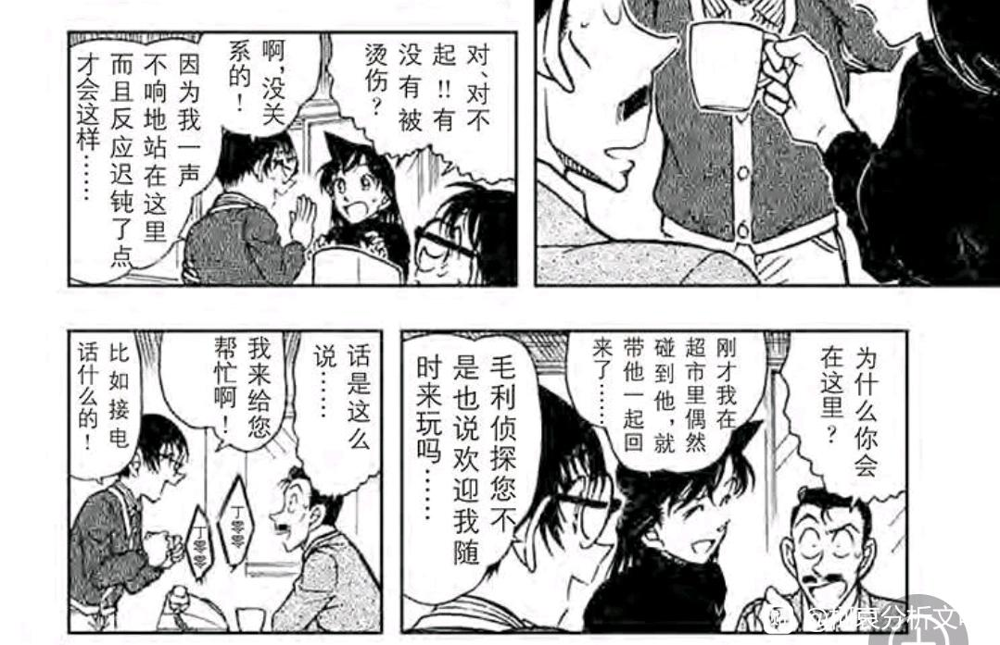
2024-05-04 15:03 | 成冰的雨点:总感觉天使lan是享受掌控别人的感觉，尽管她拼命打压乃至PUA新一，但新一总不是那么好掌控的，正好本堂瑛佑符合它的标准，这俩天生一对。2024-05-04 20:39 | 🌐之徙:回复 成冰的雨点 :然而，当瑛佑真的随时会被小兰掌握时，小兰反而不会故意掌握他，佑兰关系是相当健康的。2024-05-04 20:39 | 🌐之徙:112楼被吞了
由于缺乏准备，瑛佑的引导失败了，众人没有聚焦水无怜奈，而是去查一个锯子头歌手的死亡事件。
瑛佑一在场，小兰的表现欲和推理能力立刻暴涨，从头到尾智商在线，包括但不限于【主动联系园子获取了纹身线索】，【在柯南的提示下推理出大量关于烟花的信息】，【发挥想象力思考“锤子”位置】，【独立发现洋子的广告咖啡杯线索】等等，而且和瑛佑的CP感真的很重，表情同步率高得可怕，尤其是图二，瑛佑对小孩微笑+小兰对小孩微笑+佑兰一起鼓励小孩，不知道的还以为是一家三口呢。
小兰也是毫不吝惜对瑛佑的夸赞，瑛佑使用CIA测谎技术夸一夸，瑛佑提前拍摄嫌疑人照片也夸一夸，这些剧情从来都与新一无缘，这个阶段小兰对瑛佑已经形成箭头了（不一定称为爱情，但至少是欣赏+，离爱情已经不远）。
瑛佑一在场，小兰的表现欲和推理能力立刻暴涨，从头到尾智商在线，包括但不限于【主动联系园子获取了纹身线索】，【在柯南的提示下推理出大量关于烟花的信息】，【发挥想象力思考“锤子”位置】，【独立发现洋子的广告咖啡杯线索】等等，而且和瑛佑的CP感真的很重，表情同步率高得可怕，尤其是图二，瑛佑对小孩微笑+小兰对小孩微笑+佑兰一起鼓励小孩，不知道的还以为是一家三口呢。
小兰也是毫不吝惜对瑛佑的夸赞，瑛佑使用CIA测谎技术夸一夸，瑛佑提前拍摄嫌疑人照片也夸一夸，这些剧情从来都与新一无缘，这个阶段小兰对瑛佑已经形成箭头了（不一定称为爱情，但至少是欣赏+，离爱情已经不远）。
2024-05-04 17:24 | MoCream:原來2024-05-04 22:40 | 即将02的废物月:這裡就出現堤無津川了啊
这种一人说半句的画面2024-05-05 23:28 | snowfly1024:回复 MoCream :堤无津川很早就出现了，我没记错的话是在一艘轮船上小兰第一次怀疑柯南，和柯南说你不要抛下我一个人，那个案子里就是在堤无津川上2024-05-06 03:50 | MoCream:回复 snowfly1024 :記憶力真是太好了關於地名通常我都是一掃而過的

瑛佑的表现就更有意思了。
按照之前两个案件，瑛佑对于无关水无的案件恐怕并不重视，他一直更关心柯南的表现，但是本案瑛佑的优先级改变了，他选择线帮助小兰破案，再去考虑试探柯南的事情。本案瑛佑的所有小动作都是为了破案（例如拍照）
这意味着瑛佑把找姐姐放在了第二位，这对于瑛佑而言恐怕是个蛮痛苦的选择，毕竟找姐姐也很重要，但他情感上确实倾向于小兰，这种矛盾导致了瑛佑在大桥上相当沮丧。
（关于瑛佑沮丧的原因，可以有不同的理解，主流观点认为这是瑛佑找不到姐姐的沮丧，但是从漫画内容看，这里前后瑛佑都在兴高采烈的破案，并且找姐姐的行动也并没有形成绝望的局面，完全不至于如此痛苦）
（另一种比较恋爱脑的解读是，瑛佑已知柯南＝新一，自己喜欢小兰却感觉难以和柯南竞争，因而沮丧，这个观点目前很夸张，但是未必一定不成立，毕竟瑛佑返场之后的表现还没人知道）
按照之前两个案件，瑛佑对于无关水无的案件恐怕并不重视，他一直更关心柯南的表现，但是本案瑛佑的优先级改变了，他选择线帮助小兰破案，再去考虑试探柯南的事情。本案瑛佑的所有小动作都是为了破案（例如拍照）
这意味着瑛佑把找姐姐放在了第二位，这对于瑛佑而言恐怕是个蛮痛苦的选择，毕竟找姐姐也很重要，但他情感上确实倾向于小兰，这种矛盾导致了瑛佑在大桥上相当沮丧。
（关于瑛佑沮丧的原因，可以有不同的理解，主流观点认为这是瑛佑找不到姐姐的沮丧，但是从漫画内容看，这里前后瑛佑都在兴高采烈的破案，并且找姐姐的行动也并没有形成绝望的局面，完全不至于如此痛苦）
（另一种比较恋爱脑的解读是，瑛佑已知柯南＝新一，自己喜欢小兰却感觉难以和柯南竞争，因而沮丧，这个观点目前很夸张，但是未必一定不成立，毕竟瑛佑返场之后的表现还没人知道）
2024-05-04 15:09 | 成冰的雨点:其实挺赞同本堂瑛佑恋爱脑一说的，因为这样很符合而且合适天使lan，起码以后无论结婚与否，两口子不会出现“事业和我谁重要”之类的谈话2024-05-04 15:09 | 成冰的雨点:其实挺赞同本堂瑛佑恋爱脑一说的，因为这样很符合而且合适天使lan，起码以后无论结婚与否，两口子不会出现“事业和我谁重要”之类的谈话
接下来我们进入瑛佑的第四个案件【谜之高额报酬】，上一案柯南看见瑛佑哭了，于是本案柯南对瑛佑态度有如下转变：
1、【不再强行阻止瑛佑查询水无相关信息】
2、【对自己的秘密仍然多加防备】
柯南还真是一个很容易被哭泣打动的人，只要对方哭了就先无条件认为对方是好人，换而言之，如果某人的哭不管用，那就只能说明柯南对其已经先入为主地不再信任（伦敦篇小兰）。
本案小兰又又又带瑛佑到自己家（准确来讲是带到波洛），这里瑛佑是已经收集到一些水无线索，准备与某个目击水无车祸的小孩见面，从瑛佑的表现看，此时他原本的计划是独自调查，是小兰希望瑛佑多来事务所走动的，于是瑛佑才顺坡下驴来到事务所。
（证据就是瑛佑分享情报的意愿并不强烈，是被小五郎锤了两次才说的。）
相当于瑛佑给小兰设立了安全屋，但是小兰选择主动帮助瑛佑，虽然小兰不知道瑛佑在查什么，但是她还是愿意借助自己和父亲的力量帮助他，安全屋被打破了。
瑛佑总是能让小兰做出一些积极的行动，实在不可思议。
1、【不再强行阻止瑛佑查询水无相关信息】
2、【对自己的秘密仍然多加防备】
柯南还真是一个很容易被哭泣打动的人，只要对方哭了就先无条件认为对方是好人，换而言之，如果某人的哭不管用，那就只能说明柯南对其已经先入为主地不再信任（伦敦篇小兰）。
本案小兰又又又带瑛佑到自己家（准确来讲是带到波洛），这里瑛佑是已经收集到一些水无线索，准备与某个目击水无车祸的小孩见面，从瑛佑的表现看，此时他原本的计划是独自调查，是小兰希望瑛佑多来事务所走动的，于是瑛佑才顺坡下驴来到事务所。
（证据就是瑛佑分享情报的意愿并不强烈，是被小五郎锤了两次才说的。）
相当于瑛佑给小兰设立了安全屋，但是小兰选择主动帮助瑛佑，虽然小兰不知道瑛佑在查什么，但是她还是愿意借助自己和父亲的力量帮助他，安全屋被打破了。
瑛佑总是能让小兰做出一些积极的行动，实在不可思议。
然后更重量级的来了：
小兰竟然不排斥福尔摩斯！她开始认真和瑛佑讨论红发会！
新一十三年都没做到的事情，瑛佑几天就做到了（漫画里朱蒂说是两个月，按小时间线恐怕仅仅一个星期）
这里我们可以看分镜，小兰明显对红发会的剧情是不熟悉的，漫画里专门让小梓（而非小兰）补充红发会故事内容，小兰也只能听着，但是小兰仍然积极行动，鼓励瑛佑继续调查。
【为了瑛佑关注的事件，小兰可以去熟悉她最讨厌的福尔摩斯和推理】
瑛佑具有改变小兰的力量，这应该是青山设定瑛佑时一开始就想好的，瑛佑出场的几乎每一话小兰都有出色的表现和不俗的进步，佑兰决不能看成是那种悲惨的配平，我也不认为瑛佑会被小兰拖累，就以现在小兰这个表现，恐怕瑛佑加入CIA她都未必会反对。
小兰竟然不排斥福尔摩斯！她开始认真和瑛佑讨论红发会！
新一十三年都没做到的事情，瑛佑几天就做到了（漫画里朱蒂说是两个月，按小时间线恐怕仅仅一个星期）
这里我们可以看分镜，小兰明显对红发会的剧情是不熟悉的，漫画里专门让小梓（而非小兰）补充红发会故事内容，小兰也只能听着，但是小兰仍然积极行动，鼓励瑛佑继续调查。
【为了瑛佑关注的事件，小兰可以去熟悉她最讨厌的福尔摩斯和推理】
瑛佑具有改变小兰的力量，这应该是青山设定瑛佑时一开始就想好的，瑛佑出场的几乎每一话小兰都有出色的表现和不俗的进步，佑兰决不能看成是那种悲惨的配平，我也不认为瑛佑会被小兰拖累，就以现在小兰这个表现，恐怕瑛佑加入CIA她都未必会反对。
2024-05-04 23:02 | 即将02的废物月:啊嘞，这个黑毛衣（？）好像新一也穿过？
进入案件，小男孩目击贝姐，贝姐询问了小男孩是否看见水无，被小男孩否定，于是贝姐没有杀小男孩，留下一句“woman woman”就走了。
（贝姐的语言习惯万年不改，这算是贝魔论的一个论据，纽约篇和满月篇，杀人魔和贝姐面对兰哀具有相同的说话结构，具体可以看我的【纽约篇新解】）
这个小男孩才是瑛佑要找的目标，柯南这时已经不那么反对瑛佑调查他了，问题是小男孩神通广大，不仅见过贝姐还见过柯南，如果让瑛佑随心所欲调查，那么柯南和几个FBI合作抓走水无的剧情就会被瑛佑知道，这是柯南不愿意的。为此，柯南制订了一个相当复杂的计划，让瑛佑能查他想查的又不至于查到自己。
小兰本案继续不遗余力帮助瑛佑，受到了瑛佑的哀式偷瞄（不得不说遮住角的小兰还是很好看的），这个眼神在柯南世界里几乎等同于喜欢，如果说上一案瑛佑对小兰的态度还有些犹豫，那么这里就可以视为喜欢上了。
小兰会把瑛佑的事情当场自己的事，即使什么都不知道也要帮助他，这里甚至有种再会篇的柯哀感，温柔善良的标签在柯南看来可能相当空洞，但在瑛佑看来却是他喜欢小兰的实在的理由。
（贝姐的语言习惯万年不改，这算是贝魔论的一个论据，纽约篇和满月篇，杀人魔和贝姐面对兰哀具有相同的说话结构，具体可以看我的【纽约篇新解】）
这个小男孩才是瑛佑要找的目标，柯南这时已经不那么反对瑛佑调查他了，问题是小男孩神通广大，不仅见过贝姐还见过柯南，如果让瑛佑随心所欲调查，那么柯南和几个FBI合作抓走水无的剧情就会被瑛佑知道，这是柯南不愿意的。为此，柯南制订了一个相当复杂的计划，让瑛佑能查他想查的又不至于查到自己。
小兰本案继续不遗余力帮助瑛佑，受到了瑛佑的哀式偷瞄（不得不说遮住角的小兰还是很好看的），这个眼神在柯南世界里几乎等同于喜欢，如果说上一案瑛佑对小兰的态度还有些犹豫，那么这里就可以视为喜欢上了。
小兰会把瑛佑的事情当场自己的事，即使什么都不知道也要帮助他，这里甚至有种再会篇的柯哀感，温柔善良的标签在柯南看来可能相当空洞，但在瑛佑看来却是他喜欢小兰的实在的理由。
2024-05-04 23:10 | 即将02的废物月:这里用对话框遮住角还挺微妙的，一般情况下角是“无论如何都会露出来”2024-05-05 05:42 | 冧爷:小男孩神通广大

柯南支开了小兰，瑛佑和小男孩，为瑛佑设置了买咖啡任务以缩短瑛佑对小男孩的谈话时间（想也知道瑛佑不会乖乖买咖啡的）
这里柯南就放任佑兰独处了，他对小兰的占有欲属实不高，对比小哀坐猫哥车柯南都不愿意，柯南甚至会创造佑兰相处环境。
（柯南甚至可能希望小兰透露一些柯南的情报给瑛佑，例如柯南≠新一这个情报，或者来自青岚案的“小五郎沉睡与柯南无关”的假情报，水无的秘密泄露也就泄露了，变小秘密可不敢泄露）
瑛佑获得了水无受伤信息（酒厂也通过贝姐获得了），接下来双方都开始查医院，瑛佑提前预知到危险气息，后续就不再带小兰参与医院搜查（反而是小兰主动发现瑛佑在查医院并帮助他），佑兰拉扯那也是相当的精彩且纯粹。
这里柯南就放任佑兰独处了，他对小兰的占有欲属实不高，对比小哀坐猫哥车柯南都不愿意，柯南甚至会创造佑兰相处环境。
（柯南甚至可能希望小兰透露一些柯南的情报给瑛佑，例如柯南≠新一这个情报，或者来自青岚案的“小五郎沉睡与柯南无关”的假情报，水无的秘密泄露也就泄露了，变小秘密可不敢泄露）
瑛佑获得了水无受伤信息（酒厂也通过贝姐获得了），接下来双方都开始查医院，瑛佑提前预知到危险气息，后续就不再带小兰参与医院搜查（反而是小兰主动发现瑛佑在查医院并帮助他），佑兰拉扯那也是相当的精彩且纯粹。
意外的发现佑兰关系居然很良性，两个人都表现出更好的自己……如果真的成了好像也并不是仅仅只是配平
2024-05-04 23:15 | 即将02的废物月:“明明很会写但是就是不给（ ）呢”
十四、雪人案：经典开屏与无声保护
小时间线167天为【打不破的雪人】案件，本案是红黑篇最后一个柯哀案件（之后仍然有少侦案件【元太的必杀射门】【山姥的利刃】【电视台的恶魔】，但这三案柯哀的占比相当低，全部让位于少侦剧情）
某种程度上，雪人案应该被视为本阶段【柯南追求小哀】的最终高潮和结局，小哀对于柯南的【追求】是极为谨慎的，绝不表露自己的情感倾向，这是她痛苦但理性的选择。虽然如此，但是谁又能拒绝开屏的大侦探呢？
相比动画里柯南的一人滑雪，漫画表现得更加明显，柯南根本就是在小哀面前展示自己的滑雪技术，三个镜头里两个有小哀（小哀的眼神是看入迷的眼神！）
柯南标志性的微笑，小哀马上转为半月眼的夸夸，都意味着柯南的【开屏】终于有了结果，他终于“知道”自己“获得”了小哀的欣赏，但却更加猜不透小哀的内心，他依然没有办法证实有希子说的话，毕竟小哀看起来“不情不愿”而且太傲娇了。
柯南通过开屏能获得的信息就只有这么多，看来恋爱对于福尔摩斯来说的确是棘手的事情啊。
（接下来柯南更换了赛道，他对小哀的态度发生了不太自然的改变，具体的情况我将放在侦探甲子园再说，我严重怀疑这段时间三次元发生了某些事，导致青山的叙事风格发生了重大变化）
小时间线167天为【打不破的雪人】案件，本案是红黑篇最后一个柯哀案件（之后仍然有少侦案件【元太的必杀射门】【山姥的利刃】【电视台的恶魔】，但这三案柯哀的占比相当低，全部让位于少侦剧情）
某种程度上，雪人案应该被视为本阶段【柯南追求小哀】的最终高潮和结局，小哀对于柯南的【追求】是极为谨慎的，绝不表露自己的情感倾向，这是她痛苦但理性的选择。虽然如此，但是谁又能拒绝开屏的大侦探呢？
相比动画里柯南的一人滑雪，漫画表现得更加明显，柯南根本就是在小哀面前展示自己的滑雪技术，三个镜头里两个有小哀（小哀的眼神是看入迷的眼神！）
柯南标志性的微笑，小哀马上转为半月眼的夸夸，都意味着柯南的【开屏】终于有了结果，他终于“知道”自己“获得”了小哀的欣赏，但却更加猜不透小哀的内心，他依然没有办法证实有希子说的话，毕竟小哀看起来“不情不愿”而且太傲娇了。
柯南通过开屏能获得的信息就只有这么多，看来恋爱对于福尔摩斯来说的确是棘手的事情啊。
（接下来柯南更换了赛道，他对小哀的态度发生了不太自然的改变，具体的情况我将放在侦探甲子园再说，我严重怀疑这段时间三次元发生了某些事，导致青山的叙事风格发生了重大变化）
接下来柯南飞速和小哀交换情报，交换的过程同样信息满满，从这些对话里可以轻松得出：
1、【柯南会经常和小哀聊自己的日常案件，我怀疑有些时候是小哀主动问他的，“你不会又遇到案件了吧！““动机是什么？手法是什么？你又射晕了毛利侦探？“】
2、【柯南乐于分享日常案件信息，但他给小哀的信息多半是阉割版，例如小哀知道所有日常案件，却完全没听过本堂瑛佑这个名字，显然是柯南刻意隐瞒了瑛佑在案件中的作用】
对此服部有名言：当柯南说出自己怀疑的人时，一定是自己已经有头绪了才会说出来的，换而言之，在柯南没有头绪之前，他都是一边和小哀分享“阉割版”的案件，另一边独自调查可疑的瑛佑，悄悄地隐瞒信息不让小哀担心。
（柯南这个行为逻辑十分常见，即使波本篇也适用，但是朗姆篇好像反过来了…）
然而小哀并不会让柯南独自承担这些，她总会突破这层无声的保护，一定会从“被保护者”变为“战友”，这是小哀和服部总能做到的。
1、【柯南会经常和小哀聊自己的日常案件，我怀疑有些时候是小哀主动问他的，“你不会又遇到案件了吧！““动机是什么？手法是什么？你又射晕了毛利侦探？“】
2、【柯南乐于分享日常案件信息，但他给小哀的信息多半是阉割版，例如小哀知道所有日常案件，却完全没听过本堂瑛佑这个名字，显然是柯南刻意隐瞒了瑛佑在案件中的作用】
对此服部有名言：当柯南说出自己怀疑的人时，一定是自己已经有头绪了才会说出来的，换而言之，在柯南没有头绪之前，他都是一边和小哀分享“阉割版”的案件，另一边独自调查可疑的瑛佑，悄悄地隐瞒信息不让小哀担心。
（柯南这个行为逻辑十分常见，即使波本篇也适用，但是朗姆篇好像反过来了…）
然而小哀并不会让柯南独自承担这些，她总会突破这层无声的保护，一定会从“被保护者”变为“战友”，这是小哀和服部总能做到的。
主线结束，进入日常案件。
本案柯哀继续带娃，元太流鼻血了小哀得去处理，步美走丢了柯南得去找，光彦想法太多得治一治，带娃真辛苦。
（我真见过有SR说什么“小哀扶着元太的头，小哀也没有边界感”之类的，这些人是一点生活常识都没有，小孩子流鼻血当然要仰头了，况且小哀这里态度相当强硬，元太直接汗流浃背）
本案中出现了相当有趣的画法，步美帽子的两个角被遮住一个，看起来和小兰过于相似了，这种描述方式意味着本案步美获得了小兰的某些属性（反过来，如果小兰穿上了小哀登场的同款衣服，则当时的小兰也获得了小哀的属性），准确来说应该是步美对应【小小兰】，而光彦则对应【小新一】。
前文提到过，手机-红黑篇时青山极有可能开始设计初遇剧情，从十三年前冬天开始，到1年B班大作战逐渐设计剧情，再到本案以步美和光彦换喻小新兰，初遇的框架基本已经完成。
这是什么样的剧情呢？
【1、柯南并不欣赏爱哭的小女孩，至少爱哭不是柯南喜欢小兰的理由，callback了麻美学姐的“虽然爱哭但我还是喜欢她”，也就是小新一喜欢小小兰必须有别的理由】
【2、光彦这里指代小新一，首先光彦这件衣服（图二）是柯南穿过的，而柯南穿它的场合是与服部电话聊天时，聊的是雪山案，其次光彦的XP很明显被小哀改变了，恰巧漫画中也表明柯南的XP＝宫野志保，很可能也是小时候被影响过，而雪地之中，光彦并没有抓住小哀，可以视为雪天的“错过”】
（以上脑洞成分较多，大家谨慎看待，此外步美仅有一个画面代指小兰，下一个画面步美已经勇敢跟上，角也不明显了，至于光彦，作为三小只里侦探属性最高的人，他天然会受到神秘小姐的吸引，光→哀其实就是柯→哀的某种投影）
本案柯哀继续带娃，元太流鼻血了小哀得去处理，步美走丢了柯南得去找，光彦想法太多得治一治，带娃真辛苦。
（我真见过有SR说什么“小哀扶着元太的头，小哀也没有边界感”之类的，这些人是一点生活常识都没有，小孩子流鼻血当然要仰头了，况且小哀这里态度相当强硬，元太直接汗流浃背）
本案中出现了相当有趣的画法，步美帽子的两个角被遮住一个，看起来和小兰过于相似了，这种描述方式意味着本案步美获得了小兰的某些属性（反过来，如果小兰穿上了小哀登场的同款衣服，则当时的小兰也获得了小哀的属性），准确来说应该是步美对应【小小兰】，而光彦则对应【小新一】。
前文提到过，手机-红黑篇时青山极有可能开始设计初遇剧情，从十三年前冬天开始，到1年B班大作战逐渐设计剧情，再到本案以步美和光彦换喻小新兰，初遇的框架基本已经完成。
这是什么样的剧情呢？
【1、柯南并不欣赏爱哭的小女孩，至少爱哭不是柯南喜欢小兰的理由，callback了麻美学姐的“虽然爱哭但我还是喜欢她”，也就是小新一喜欢小小兰必须有别的理由】
【2、光彦这里指代小新一，首先光彦这件衣服（图二）是柯南穿过的，而柯南穿它的场合是与服部电话聊天时，聊的是雪山案，其次光彦的XP很明显被小哀改变了，恰巧漫画中也表明柯南的XP＝宫野志保，很可能也是小时候被影响过，而雪地之中，光彦并没有抓住小哀，可以视为雪天的“错过”】
（以上脑洞成分较多，大家谨慎看待，此外步美仅有一个画面代指小兰，下一个画面步美已经勇敢跟上，角也不明显了，至于光彦，作为三小只里侦探属性最高的人，他天然会受到神秘小姐的吸引，光→哀其实就是柯→哀的某种投影）
2024-05-06 04:02 | 成冰的雨点:SR不是没有生活常识，是黑哀成瘾加上随它们主子控制欲抢，只要觉得超出掌控，只要内心颤抖，肯定甩锅黑哀
本案最后还有一个磕点。
由于某些原因，操哥突然成为了柯哀play的一环，小哀也算是开发新玩法了，以往都是博士破案，肯定不能这么玩，这次麻醉了操哥，小哀diss柯南但他却没法反驳，小哀露出了恶作剧得意的胜利笑容。
无独有偶，只要操哥被麻醉且柯哀在场，柯哀就各种玩，在【采野菜与四叶草】中，柯南想用操哥声音说“哀酱”又说不出来，只好说“小女孩”，一下子脸红起来，操哥一共也没麻醉几次，一旦柯哀场麻醉那就势必变成柯哀的play平台，太惨了。
这件事情的有趣之处还应该和天空树比较，小哀知道操哥是柯南扮演，柯南也知道小哀知道这一点，于是双方的对话完全命中对方，但是天空树里基德的戏份不清不楚，具有很大的操作空间，小兰也并不清楚对方是不是新一，甚至柯南的目的就是为了隐瞒小兰，相互对比尽显柯哀含金量。
由于某些原因，操哥突然成为了柯哀play的一环，小哀也算是开发新玩法了，以往都是博士破案，肯定不能这么玩，这次麻醉了操哥，小哀diss柯南但他却没法反驳，小哀露出了恶作剧得意的胜利笑容。
无独有偶，只要操哥被麻醉且柯哀在场，柯哀就各种玩，在【采野菜与四叶草】中，柯南想用操哥声音说“哀酱”又说不出来，只好说“小女孩”，一下子脸红起来，操哥一共也没麻醉几次，一旦柯哀场麻醉那就势必变成柯哀的play平台，太惨了。
这件事情的有趣之处还应该和天空树比较，小哀知道操哥是柯南扮演，柯南也知道小哀知道这一点，于是双方的对话完全命中对方，但是天空树里基德的戏份不清不楚，具有很大的操作空间，小兰也并不清楚对方是不是新一，甚至柯南的目的就是为了隐瞒小兰，相互对比尽显柯哀含金量。